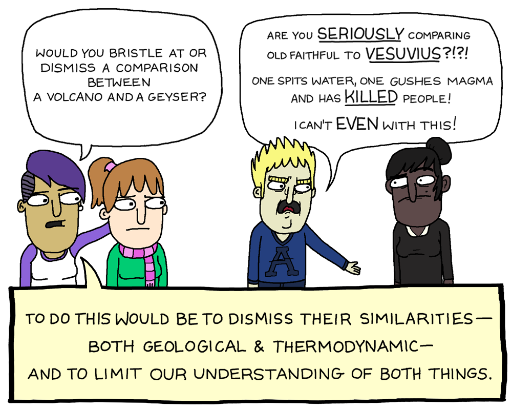

Claim AA100: Animals are bred for agricultural use
Details
The claim is in various forms:
- it's ok to do X to animals because they are bred for purpose X.
- it's ok to do X to animals because they are bred for purpose X, some other purpose Y, or some combination of the two.
- they would not have been born if not for the motivation of the human towards purpose X.
Problems With This Argument
1. This probably isn't your actual justification
Do you disagree morally with hunting? Do you ethically abstain from all meat that might be obtained from "food" animals not bred for the purposes of food, like hogs, or wild turkeys, or buffalo? If not, then you're just filibustering with random arguments, not presenting your actual justification.
2. What about dogs?
Humans have bred dogs for 1000s of years. Does that make golden retriever steaks ok? What about dog fighting? If breeding for purpose X is carte blanche for action X, you should consider that most dog fighting dogs are bred for that exact purpose.
3. Bred for suffering?
Selective breeding for traits like "is made of more/tastier meat" doesn't actually change the amount of suffering an animal undergoes. Frequently the opposite - most animals suffer greatly because their body proportions have been exaggerated. So this argument is actually an argument for veganism, not against it, because the breeding of animals in this fashion should be considered unethical.
4. Natalist fatalist?
If you believe in the final form of the argument, then it should also be ok for two people to have a child explicitly for the purpose of torturing that child for their own entertainment. In fact, that makes any claim of child abuse impossible for any intentional pregnancy. But this is obviously absurd. So it cannot logically follow for animals.
5. Collateral Damage
This still doesn't address the damage done to the ecosystem, clearing land for breeding these animals, starvation of food from third-world countries to feed livestock. You are hurting plenty of non-bred animals when you eat cultivated meat for your own entertainment.
Verdict
Animals being "bred" for something doesn't justify anything.
Related Claims
Claim AA102: It's cultivation, not oppression
Details
The claim here is that animals are cultivated for use, not oppressed by animal agriculture
Problems with this argument
1. This is semantics
"Cultivation" just means that animals have been systematically exploited for a long time. Having done something for a long time doesn't actually change the ethical characteristics of an action.
2. Breeding isn't justification
Hence, all of these arguments apply
Verdict
"Cultivation" is just a weasel word.
Claim AA200: Our [body part X] has developed for eating meat
Details
The carnist here claims that teeth or some other body part are evolved for eating meat, or that evolution is somehow prescriptive by some necessity.
Problems With This Argument
1. That means nothing
Let me try this without getting too vulgar: Human females evolved to be able to have kids starting at age 13-ish if they were to be sexually active. Considering most men are stronger than young girls: go ahead and use your imagination as to what you can justify with that information and this argument that "whatever evolution made possible must be moral". This is just "might makes right" with the additional step of "evolution made might".
2. We don't live in the past
What was ethical or necessary in the past isn't ethical or necessary now. This argument just can't even be put forward as a decent argument if you think about it for any length of time. If at one point it was necessary to do anything, that justifies nothing once that condition is no longer met. Unless you think that the first killing in self-defense now justifies all murder once the self-defense is removed from the scenario. It really is a silly argument.
3. Evolution isn't prescriptive
Some parasites evolved to eat their hosts from the least-to-most important parts so as to keep them alive for as long as possible and thereby inflict the maximum possible suffering. That doesn't mean that this type of behavior is now prescribed as ethical.
4. Your brain is part of evolution
Your brain evolved to make you know it's unethical to do so. So that's just as valid as any other body part.
5. It doesn't actually address the argument
You can't respond to the claim that "carnism hurts animals, other humans, the environment, and yourself" with "yeah, well we evolved to make it easier to do so". That is a complete non-sequitur and does not counter the argument. Carnism remains unethical for those reasons, you've just mentioned an irrelevant fact.
Verdict
The fact that you are evolved to be able to do something doesn't make it ethical.
Claim AA201: We have canines to eat meat
Details
The idea here is that eating meat is ok because we have developed omnivorous canines to do so
Problems With This Argument
1. Yeah... no you do not.
You really think your canines look like an omnivore's? Since bears are such a frequent point of comparison for an omnivorous diet, go ahead and quickly look up bear teeth. Now look in the mirror. Do the same with raccoons. Ok, so that wasn't even close. To call your teeth that of an omnivore is a massive overestimation.
2. Teeth don't even prescribe diet
You can look at the sabre-tooth deer for guidance there. Or gorillas (yes, they are herbivores) if you like. Clearly, even these animals have much more aggressive-looking teeth than you but somehow manage to make it on plants alone. So teeth are a particularly bad characteristic because it's definitely an argument against carnism. Your teeth can grind side to side for a reason.
3. Evolution is a bad argument in general
Verdict
Your teeth aren't meant for eating meat and that doesn't make it ethical anyway.
Claim AA202: Eating meat helped us evolve higher intelligence
Details
The idea is that eating meat helped us in the past evolutionarily, so it is justified today.
Problems With This Argument
1. You're not surviving off the land on the Serengeti
You can't talk about hunting animals with spears having helped us evolve to justify putting frozen bags of chicken wings in their shopping cart. Freezers didn't exist; shopping carts didn't exist. Furthermore, the animals you're killing now aren't the ones you would have killed back then. So, you've modified the entire narrative except for the part that's the most convenient for you. You want to pay money, which didn't exist, to have someone truck your meat in from a factory farm. None of this has anything to do with the original action in reality. This is just nonsense.
2. We don't live in the past
What was ethical then isn't now. Xenophobia and tribal warfare, for instance, was a major player in keeping tribes together and affected human migration patterns that had us populate the globe, but does that give us freedom to do whatever we want to people that look different from ourselves? Of course not. If we simply give carte blanche to anything which helps propagate the human race, then that would by necessity include rape and genocide.
3. It doesn't actually address the argument
You can't respond to the claim that "it hurts animals, other humans, the environment, and yourself when you consume animal products for your own entertainment" with "yeah, well it helped us evolve". That is a complete non-sequitur and does not counter the argument. Carnism remains unethical for those reasons, and you've just mentioned an irrelevant fact.
Claim AA300: We have been eating meat for thousands of years
Details
The carnist claims that eating meat is somehow to be grandfathered in as though it is now ethical, simply because it was necessary in the past.
Problems With This Argument
1. It wasn't necessary in the past
The idea that it was necessary is a baseless assertion to start (e.g. Jains exist and have for hundreds of years but don't believe in violence towards animals). But let's assume that it indeed was.
2. Times change
Do you walk everywhere you need to go or take a draft animal? No, you get in a car or bus - which is kind of like the old thing we used to do... but it has been changed and modernized. It's interesting how the only thing we hold on tightly to is the easiest thing. So you are willing to trade smoke signals for cell phones and vehicles for donkeys, but you aren't willing to trade vegan food for one that causes significantly more suffering. Interesting choices indeed.
3. You can justify literally anything like this
People have been doing a lot of things for a long time, including slavery, murder, theft and torture. After all, you had to preemptively kill that other guy before he potentially killed you, just like you needed to kill that animal before you potentially ran out of food. That doesn't just give you freedom from ethical responsibility if you do that in a modern context.
4. This doesn't address the argument
The argument is that it's unethical to abuse animals for your entertainment under any ethical system. You can't counter that with "yeah but it's been going on for thousands of years". Ok, great, well it's still unethical to abuse animals for your entertainment, and you've stated an irrelevant fact.
Verdict
Doing something for a long time doesn't magically make it ethical.
Claim AH100: Humans are the top of the food chain
Details
Carnists claim that humans are justified in eating meat because it is their natural place within ecology to do so.
Problems With This Argument
1. The food chain isn't real
The concept of a food chain is an invention that helps schoolchildren understand basic ecology. It is too simplified to even be useful in biology, such as in cases where two species (usually one being invasive) predate on each other (or on each others' young), for instance, or when species eat their own young.
2. This isn't your actual justification anyways
Even if the food chain really existed as a real thing, is drinking other species' milk really apex-predator behavior? Or putting a stack of neatly extruded pepperoni into a shopping cart? So, some imagined "food chain" isn't actually why you do what you do.
3. It's not even justification
Even if you accept the argument that humans are part of some imagined natural ecology that somehow includes hotdogs, it does not follow that what is natural within ecology is automatically ethically justified. Is eating the young of your own species ok because animals do it in the wild?
4. Self-defeating
Even if you somehow ignore all these problems, meat is still an ecological disaster that also starves people in third-world countries, which serves to only destroy the very "food chain" you're arguing for. So you can't use really use that as justification for eating meat or consuming animal products.
Verdict
The "food chain" argument is nonsense.
Claim AH101: Lions eat meat
Details
The carnist claims that because some species eat meat, we should ethically be allowed to
Problems With This Argument
1. You are not an obligate carnivore
The point is that if you're reading this, you don't need to eat meat to live. So this isn't a question of what an animal that has no choice would do; you do have a choice! So you can't point to someone else's self defense, for instance, to justify outright murder.
2. It's cherry picking.
Interesting that you conveniently pick the lion. Let's pick an animal arguably much more similar to you, monkeys that throw their feces in an argument. Are you also going to copy that or claim that is ethical behavior? What about humans that kill other humans. They are not even just similar - they are the exact same species as you. Does Ted Bundy's existence now justify all murder? After all, "Humans kill humans - it's just how it is!"
3. That doesn't address the ethical consequences
Carnism hurts animals, other people, the environment, and yourself. Your justification can't be "yeah, well he's doing it too". Carnism remains unethical for those reasons, and you've stated a tangentially related fact.
Verdict
You are not a lion
Claim AH200: God put animals here to eat
Details
The carnist claims some superiority on the basis of theology
Problems With This Argument
1. The Bible is "The Big Book of Multiple Choice"
As Jeff Dee pointed out in coining that phrase, you can cherry pick verses that go either way on a lot of things. Just simply look at any list of biblical contradictions. Not necessarily am I saying that they are all irrefutable contradictions, but rather that post-hoc rationalizations can be used to justify any position one way or the other. Sure, you can argue that one is saying X and the other Y, but can you argue in good faith that this is the only reasonable interpretation that could ever be possible for this combination of verses? Of course not. Hence why slavers and abolitionists in the United States were both quoting from the same book. Other holy books are usually no better in this regard.
So, no surprise, you can support - from Holy books - everything from human slavery to female genital mutilation. So unless you're willing to accept that any religiously motivated action is now by definition ethical, then this isn't a good argument. Particularly when you might get stoned to death upon a literal reading of this text, and the only argument you would have is a faith-based argument that their faith-based argument is wrong.
2. You also can use bible verses to support veganism.
There are many Christians and Jews who believe strongly in their religious conviction towards avoiding animal suffering. For instance, in the Garden of Eden, when things were good in Genesis 1:29, Isaiah 11:6-8 and so on. This isn't about a theological debate though, just recognize that if you search for the bible supporting veganism you'll get a lot of hits.
Perhaps if you're a Christian, you might be best convinced by simply by Romans 2:15. Ask yourself what you think the law on your heart is. Does that include imprisoning and torturing animals for your own entertainment? Does that include dog fighting or torturing animals? If not, then you are without excuse.
3. Religious Institutions routinely apologize
The catholic church issued a list of nearly 100 apologies that were the result of religiously motivated action. Even if your sect claims religious exemption for eating meat, can you assert that eating meat will never be on such a list that includes slave trade and injustice towards women?
Verdict
Theology isn't a good reason to abuse animals.
Related Claims
Sources
- List of biblical contradictions
- List of cases of intolerance in the Bible
- List of ambiguous passages
Claim AH300: Animals are made to be eaten
Details
"If animals aren't meant to be eaten why are they made of food? Hardy har har."
Problems With This Argument
1. This is a thing people say but don't believe
Children are also technically made of food. Is involuntary cannibalism now moral? No.
2. Might makes right
This is ultimately a might-makes-right argument. We can eat animals so we should. Well can and should are two different things and the fact that you can do something doesn't logically follow to the fact that it is ethical to do so
3. It still hurts other people
People in other countries are starved for first-world meat, and there are heavy environmental impacts. This argument doesn't actually address those problems which would make it unethical anyways, regardless of the point of view of the animal
Verdict
"They are made to be eaten" is "Might makes right" with more steps.
Claim AM100: Animals don't understand morality
Details
The claims are variously stated:
- When you look out in nature, animals kill each other and have no moral qualm about it, so why should we?
- Animals don't understand morality, and therefore we have no moral obligation towards them
Problems With This Argument
1. Moral agency isn't a requirement for being the subject of moral obligations
If it were, then we would say that we have no moral obligation towards the mentally disabled or small children. Clearly we do. This isn't about the animal's moral obligations towards us; it's about our moral obligation towards the animals. Obviously, we can't hold a shark "accountable" for biting a human, but we should definitely hold a human accountable for killing sharks needlessly by the thousands.
2. We don't use someone else's ethics in determining our own actions
A toddler will walk up to other kids and randomly take things from their hands, because they don't understand social norms. Ok cool, so any time a toddler is holding something, it's fair game for me to take! Wait... that doesn't morally follow.
Am I allowed to assault the mentally handicapped or people with dementia because they might hit me? No, of course not. So, given that we never use someone else's morality for our own, why do we justify it in this one particular instance?
3. Most "food" animals don't kill other animals
Most animals we eat are typically prey animals and not predators. All the classic farm animals are herbivores, as well as deer, quail, and almost all other commonly hunted animals. The fact that an obligate-carnivore predator kills prey "without regard" (whatever that means - did we survey lions or something?) doesn't really apply to you also killing the prey. If anything, shouldn't it be the opposite - I mean, do you regularly envision yourself jumping in when you see someone kicking the crap out of a frail person to help the assailant?
4. Most "natural conditions" are obligate carnivorous conditions
If you are reading this, you are not an obligate carnivore, and therefore the actions of an animal that does something out of necessity (or an omnivorous animal who doesn't know where its next meal is coming from) doesn't apply to you doing something unnecessary with your grocery pickup where neat packages of ground beef are placed in the trunk of your car at the click of a button.
5. People are animals
When I look out at society, I see people killing people all the time. War, murder, self defense. Therefore, it should be legal for me to kill another person so long as there is some prevalence of people killing people by this argument. But this is absurd. We don't judge the ethics of actions by popularity.
6. People understand Morality
...and eating meat hurts other people, for instance, in countries where food scarce due to it being exported to feed "food" animals, or in the form of climate change. So that can't be your justification.
Verdict
The fact that animals don't understand morality doesn't change the ethics of eating them.
Claim AM200: Carnivores would kill you if given the chance
Details
The claim here is that lions, etc. would kill you so it is ok to kill them.
Problems With This Argument
1. Most of the time you're not killing predators
Most animals you eat are herbivores, such as cows, pigs, sheep, chickens, etc. So you're not actually applying the morality of the animals you claim towards what I would wager is 100% of the animals you kill or eat. So the supposed reciprocating morality argument doesn't even apply.
2. We don't dictate our morality based on our enemies
If a six-year old is mad at you and punches your leg, are you allowed to lay him out with a kick to the throat? Of course not. So why is it that you're allowed to use your larger might in this case to use weapons on animals, even if they don't have the same moral compass?
3. Carnists don't follow this when it comes to other animals
Most carnists would agree that you don't bite other people's cats, or bark at other people's dogs, even if they would do the same to you. So carnists don't actually believe this argument with regards to themselves.
4. The other victims
Eating meat comes with other impacts such as the starvation of food out of countries to feed livestock, as well as environmental impacts that hurt people. So this doesn't justify the collateral damage that comes with animal agriculture.
Verdict
Moral reciprocity is just not a cogent argument.
Related Claims
Claim AP100: Vegans should oppose pet ownership
Details
There are a number of claims that carnists make around pets that vary:
- Vegans must be against pet ownership to be morally consistent; a true vegan would never own a pet
- Vegans must be against service dogs because it's "using", a.k.a. exploiting animals
Problems With This Argument
1. It's not a typical vegan position that pet ownership is inherently immoral
Holding onto an animals as a companion is no more "using" the animal than holding onto a child for which you are the guardian. It matters whether you are looking after the long-term well-being of the animal. People are looking after the well-being of their pets and intend to protect that animal from death until its natural lifespan expires; they do not do the same for farm animals.
2. For the same reason, service dogs are not immoral
Again, it comes down to the well-being of the animal. If service animals are being abused then the abuse is the immoral action. I would imagine that's a rare scenario.
Verdict
You can be against owning livestock and not against pets
Claim AP101: It's animal abuse to feed your pet a vegan diet
Details
The claim here is that it's harmful to feed your pet a vegetarian diet. If you don't want to kill animals, don't get a carnivorous pet.
Problems With This Argument
1. It's not true
There's no "magic" nutrient that animal products have you can't get from fortified plants. Sure, your cat needs synthetic taurine. What is wrong with fortifying their foods? Pet food companies do that anyway, even with non-vegan food. So why not investigate for yourself vegan cat and dog food companies? A well-balanced diet is a nutritionally adequate diet, no matter the provenance of the materials used to make it.
2. Sometimes "carnivorous" pets are... get this... recommended a vegan diet
Some animals are recommended a (well-balanced, well-planned, etc., etc.) vegan diet even though they are part of a species that we would think of as "carnivorous". It's even credited as the reason the record-breaking dog Bramble made it to a quarter-century on a plant-based diet. So the idea that plant-based foods will kill your dog is just not true.
3. Anything about pets doesn't translate to humans
It almost goes without mentioning it, but you are not an obligate carnivore in any sense of the term. So arguments about pets don't apply to you. You are not a lion. It's still unethical for you, a human, to unnecessarily cause harm because it's purely for your entertainment, even if a cat needs a more specific set of nutrients.
Verdict
There's nothing wrong with feeding your "carnivorous" pet vegan food.
Claim AP102: The carnivore pet prefers meat and therefore feeding them vegan food is stupid
Details
"Hey look at that video of that lady who convinced herself her dog lost preference for meat. Wasn't it hilarious when the dog went for the meat over the vegetables she was feeding him? This just proves that dogs need meat to live."
Problems With This Argument
1. Self-destructive habits exist
Humans eat themselves onto the show "My 600-Pound Life". Animals famously will lap up antifreeze to the point where it's a meme. Is what an organism prefers really indicative of what is good for them? Probably not. So there's not a great correlation between immediate gratification and healthfulness.
2. This is really just a few bad arguments rolled into one
- Vegan said/did silly thing X. This invalidates veganism
- Dogs need meat, biologically speaking
- Lions (or in this case, dogs) eat meat. That justifies my carnism
Verdict
Dogs might prefer meat, but that says nothing about dog and especially about human health
Claim AP200: Some vegans attack against zoos. That's crazy!
Details
The claim here is that zoos and aquariums do a lot of good:
- They donate to and support conservation
- They teach kids about wildlife
- They promote a connection to wildlife that will make people "care" about conservation
- Animals are held in good condition and therefore there's nothing wrong with imprisoning them
And therefore it would be another crazy vegan argument to be against them.
Problems With This Argument
1. "Zoo" is an ambiguous term
Zoos, as with anything, exist on a continuum. On the one end could referring to non-profit animal sanctuaries that are established enough to sell plushies and t-shirts on the side to fund conservation and animal rescue efforts. On the other end is, for instance, the Waccatee Zoo, which is probably the most depressing image search of all time, as well as the most obvious one that gets all the documentaries - Seaworld. So you'll have to research this "zoo" you're thinking of heading to, and ask yourself what things it does.
One thing to consider is, for instance, that most Major-city zoos attempt to get a wide range of animals that the public will expect. This includes, for instance, elephants and other animals that normally roam long distances. If they obtained these animals by capturing them and removing them from the wild then that sort of is problematic for arguments that lean on "they are just rehabilitating and releasing animals". I would probably assume they are captured for most zoos, or kind of bred from some stock that these zoos share and buy off one another, and the number of animals that are rescued, rehabilitated, and re-released is probably negligible in comparison, but there doesn't seem to be a great way to find this information out.
Zoos also euthanize excess animals, and animals sometimes die or have to be put down as a result of accidents, whether it's the highly publicized Harambe or some shipping container of nameless penguins that arrive dead. Some initial research shows that neither scenario is that uncommon. So how they manage the animals is worth thinking about.
2. Zoos seem to come up short on the benefits they usually purport
Zoos claim that they are based on education. This seems to be a dubious claim at best. In terms of information about animals, I would hesitate to assume that a kid got more out of visiting a zoo than reading a simple age-appropriate book. (In fact, as a kid I can name numerous things that I remember distinctly learning about sharks, penguins, and insects from books - I recall being fascinated by goblin sharks despite never seeing one in person. I can't tell you a single thing I recall learning about animals from visiting a zoo as a kid.) This is redoubled in the age of looking up documentaries instantly online.
The other claim is that they help in some way with the "connection" to the animals. But this is also somewhat dubious because you're equally having your kid form a bond with just indiscriminately caging animals before heading to the cafe area to get them a slice of pepperoni pizza (so much for teaching them to have a "connection" with animals). If you want to teach people how to have a connection with animals try just not eating them for a change, and if you want them to see animals in person - have them visit a proper animal sanctuary. So all in all I'm not quite sure that the education claim is truly cogent.
3. Conservation: Is this the best way?
The other benefit that zoos mention is that they somehow promote conservation. So the claim here, more specifically, is that it's morally justified to imprison some animals if it means that we are able to conserve others of the same species. I wouldn't be doing my job if I didn't point out that most of these conservation efforts are to reverse the effects of carnists destroying habitats by things like farming food for livestock, poaching animals, and killing sharks and sea mammals as by-catch for fisheries.
The moral question thing is that if it is indeed imposing suffering on animals to imprison them in cages - which seems like, again, has a sliding scale where on the one hand some animals, like stick insects, might have no awareness that they are imprisoned or might prefer the lack of predators, and on the other hand, some animals, like elephants and whales, that roam long distances that are confined to a tiny space. Now it should be argued that, for instance, there's nothing wrong with keeping a cat as an indoor cat as a means of protecting the animal from other animals and cars, just as we would say we have a responsibility to protect a child from things that might hurt it even though we're technically restricting freedoms as a result, but that's not carte blanche to keep your cat confined to a shoebox - so the type of enclosure is another sliding scale. But it would seem as though most city zoos are attempting to get a good diversity of wildlife and therefore have no problem with the more problematic enclosures for roaming animals. So on a case-by-case basis you'll have to decide whether you think the institution imposes suffering on its animals by caging them, and if so, that it justifies conservation efforts. We don't accept arguments about imposing suffering on some humans in order that others might live a better life, so it doesn't seem like this argument would hold water.
The other question that we really need to ask ourselves is if this is indeed the best way to accomplish this. You'd be better off paying to see a nature documentary in an imax theater that donates the proceeds to conservation, for instance, or donate that money directly yourself rather than paying a middleman.
4. Conclusion
Are zoos vegan compatible? Animal sanctuaries show that this is not impossible in principle. But given all the issues with zoos where the positives seem to come up short and the negatives seem whitewashed, it's not some far-fetched crazy vegan argument that they should, at least in some part, be avoided if one doesn't want to contribute financially to animal suffering.
Verdict
It's not a crazy stance to be against zoos for ethical reasons
Claim EA100: Milk production is not harmful to farmed animals
Details
The cow on the carton is smiling. I mean, so how could it be unethical with drinking milk today from a grocery store?
Problems With This Argument
1. It's fiction
Carnists imagine a smiling cow on a hill with a giant bell around its neck where a blonde girl with two braids and a blue apron comes up the hill with a bucket to milk the cow under a rainbow. Eliminate this image from your mind. It has nothing to do with reality.
2. The nasty reality
Actual milk production starts with bestiality and ends with a slaughtered calf. The cow gives birth and the calf is separated from the mother to avoid cutting into the yield, and is either sold off to be slaughtered within a few weeks of being alive, or... if it's a female in good condition it can be raised to perpetuate the cycle. The cow will continue this cycle, and will probably be killed before its sixth birthday, less than a third the way through its life.
3. The results
Given that the production of milk is inherently tied to the slaughter of animals, vegans argue (correctly) that lactovegetarianism represents 0% middle ground between slaughtering animals and not. By drinking milk you are still subsidizing the slaughter of animals, and it doesn't matter if it's a "local farm", either, so all of those arguments apply.
4. Collateral Damage
You still are paying for cows to take food from developing countries, you're still contributing to the unsustainable nature of the animal agriculture industry, and doing a lot of ecological damage. Taking the milk and not the meat doesn't actually solve any of those issues, either.
Verdict
Cows and calves are slaughtered and abused for dairy.
Sources
Claim EA101: Animal products are ok if it's local
Details
"My uncle's farm has a bunch of cows that are kept in good conditions as pets, so its ethical to buy his milk and/or eggs?" (The same arguments apply either way)
Problems With This Argument
1. Where are all the males?
Ok, so your uncle bought a female calf and hens from some place, who sold a bunch of female calves and hens to other people... where did the males go, again?
2. You're still contributing to that economy
You're still paying money for an animal product and thereby you're still propagating money and tacit approval within that system to strengthen the economy of animal abuse.
3. Sustainability issues remain
Not only are you still paying for slaughtering of animals, this doesn't address the sustainability issues around animal agriculture, because you still are feeding livestock animals food that causes global starvation and deforestation, using massive amounts of water, and causing ecological harm.
4. It doesn't help
All "my food is locally-sourced" argument issues remain.
5. For milk, specifically: Cows only produce milk following a pregnancy
So your uncle is still selling off calves for slaughtering to keep up the milk production in any sort of volume. If he's artificially inseminating them, it is also bestiality. So the animal abuse and cruelty continues with every pregnancy to keep the milk supply going. If everyone refused to engage in this behavior, you would hardly ever have the opportunity to drink bovine milk and it would be unsustainable.
Verdict
Consuming eggs and milk from a local farm is still unethical.
Claim EA102: Can't you just milk an animal and it not be unethical?
Details
The year is 2505. Everyone is vegan. We have a sanctuary with some cows that aren't forcibly interacted with. What's wrong with milking one and selling the milk?
Problems With This Argument
1. Cows only produce milk following a pregnancy
So without artificial insemination, you're relying on the natural reproductive cycle of cows to determine when to drink their milk, which the calf is cutting into, and the cow only is producing significant milk for a relatively short period of its life, maybe a quarter - if you're lucky.
2. Help me out here
Ok, so here's the plan, you now need to keep cows for at least 4 times their current lifespan - well past when they make milk. You also have at least twice as many animals (males are now not automatically slaughtered). So you're looking at at least an order of magnitude reduction in the amount of milk right off the bat. If you're looking at grass-fed only and you're not artificially inseminating the cows to produce the milk (because you've somehow reasoned yourself out of bestiality), it's even worse on the sustainability. And with no slaughter market to keep such milk profitable, there will be orders of magnitude less animals (for reference, there are about 30000 total American Bison alive today, which is how many cows are slaughtered in America on average every 8 hours).
So lets do this calculation, shall we? Let's just talk US, and I would be generous and assume 100000 cows, but I'll even be generous and give another order of magnitude. A million cows. So at let's say even half their lifespan to 10 years to be more generous (so that's 100000 pregnancies per year). And with all this generosity you're looking at a cow pregnancy rate (and therefore milk production rate) of slightly less than 0.3% our current rate, assuming we avoid practices like mother-calf separation or forced milking, etc. which could each reduce the production by an order of magnitude each... but we'll ignore because, again, I'm just so generous.
So let me get this straight, the big-brain plan here is to avoid going 100% vegan by going 99.7% vegan on milk, and 100% vegan on everything else. Okay, well done. That's all with the heaviest lowball of all time on that percentage - In reality you're looking at significantly less. So this cannot be your justification for drinking milk more than once every few years.
3. This is a fantasy anyway
I'd get into more arguments about how selective breeding is harmful towards the animals, but why bother? We're now pretty deep into fantasy land here; this alternate universe has nothing to do with reality. You can't use this as any sort of justification for using animal products in the real world, where it involves the active torture and slaughter of animals.
Verdict
Consuming milk and eggs will never be free of cruelty.
Claim EA103: My uncle gives me his local animal products as a gift
Details
The idea is that one can obtain animal products as a gift which absolves them of ethical responsibility.
Problems With This Argument
1. This is no one
No one accepts non-meat animal products as gifts but doesn't consume animal products in some other context. I've never met this person ever. So, if this isn't explicitly you, hit the back button and go make a different bad argument against veganism.
2. Unethical things have to happen for any production level
As previously mentioned, unethical things need to happen in the pursuit of making such a farm actually productive in any capacity, so all of the arguments on this page apply
3. It doesn't actually fix anything.
If you consider the implications of an action based on the amount of suffering and well-being it produces, accepting gifts of animal products means that "your uncle" (or whoever is giving the animal products) is still deriving personal value from those animal products in the form of a gift to you and is therefore more likely to continue paying for animals and therefore their abuse and slaughter.
Verdict
Accepting animal products as gifts is still contributing to animal abuse.
Claim EA104: Artificial insemination is OK because the animal didn't struggle
Details
The claim is that artificial insemination isn't bestiality because milk cows don't struggle during the process, or that yes, it is bestiality, but it's ok in this context.
Problems With This Argument
1. Cool story, bro. Where'd you get that sperm?
There's really only one way to get it. Use your imagination.
2. Holding a "receptacle" doesn't help
If you were holding a paper towel so your dog didn't get on your carpet, would it be any different?
3. You not being sexually aroused doesn't help
Forcible insertion with an object for your own enjoyment in the human case doesn't matter if that enjoyment is sexual or not. Why does it matter here? You're still abusing an animal to its own detriment.
4. "The animal didn't run" isn't a defense
That doesn't matter. Not going to get graphic here, but it didn't matter in the case involved in this wikipedia article, for instance. So that isn't a counter argument.
5. If it's not the same thing, then why do bestiality laws contain exclusion clauses that clearly apply to cows?
Why, following the above-mentioned case, did the law that made it a felony include the text "Nothing in this section prohibits accepted animal husbandry practices". It's not like laws about driving stolen cars need to mention "by the way, just so you know, stolen-car laws don't apply to legally acquired vehicles". If this is so distant in practice, why is there such an overlap that this clause is needed to clarify any confusion?
6. All the other ethical implications
It's still wrong because breeding cows to be slaughtered is harmful to animal, other people, and the environment. So you can kick these terms around all day, whether you want to call it bestiality or not, but what you call it doesn't change the core issue.
Verdict
Bestiality is still a vital component of animal agriculture.
Claim EA200: Egg production is not harmful to farmed animals
Details
The carnist here claims that egg production is not harmful so eating eggs is not unethical
Problems With This Argument
1. Unethical farm practices are abound
Baby chicks are thrown into shredders alive as a part of egg production. Males as well as females with issues are simply tossed into a macerator. Interestingly, Germany is taking a bold stance to be the first western country to phase this out legally by 2022.
Otherwise factory farmed chickens have their beaks or other body parts mutilated, live in confined spaces standing generally in their own feces, and are mercifully not required to live under such horrific conditions their whole natural (decade-or-longer) lifespans as they are killed before their second birthday, usually.
2. You're subsidizing chicken meat
You're making it more economical to turn chickens into corpses, and therefore you are participating financially in incentivizing meat production, and all the sustainability and human costs associated with it.
3. Locally sourcing doesn't help these issues
Even though you might think so, it does not.
Verdict
Egg production is harmful to animals
Claim EA300: Sheep enjoy being sheared
Details
The carnist claim here is that sheep don't get hurt in shearing so it can't be unethical
Problems With This Argument
1. That's actually not true
Go ahead and look up "mulesing", which is a procedure harmful to the animals. Again, carnists have this idea that it's a cute sheep on a sunny field and it enjoys being sheared. This is a fantasy. Sheep are part of animal agriculture, they are in factory farms with the rest of the animals living in confined squalor, and are routinely slashed by automated shears, and are abused and terrorized like all the others once they meet their end.
2. You're still funding animal agriculture
You're still paying money for animal agriculture, and you're still funding the torture of animals. You are increasing the profitability of taking a sheep and turning it into meat.
Verdict
Wool is animal abuse
Claim EA301: Mulesing isn't supposed to hurt the sheep
Details
The claim here is about "mulesing", in particular:
- it helps the sheep deal with insects
- it is supposed to be done with anesthetic, and the fact that it isn't in most cases is just a vague argument for animal welfare that doesn't involve changing habits.
- in some vague possible scenario someone has a pet sheep and they have the pet undergo this procedure to promote the animal's health, then it would be ethical
Problems With This Argument
1. It'll never be humane so long as the animals are slaughtered for meat
That's all well and good that it's in theory supposed to be done under some set of conditions that are not harmful to the animals. But let's be honest: these animals are going to be slaughtered. So as long as that happens, 1. Any such processes are simply part of the enablement of further abusing them and 2. animals will be treated as commodities first and feeling beings second. These points will result in corners cut on procedures (like the anesthetic) which we would never want cut for, say, our pets, and it's still all well and good in the mind of the abusers, because these are just some dollar signs on four legs that are circling the drain until they have a bolt put through their heads.
2. Fantasy isn't reality
One could in principle make an argument that they could have a pet sheep and gather wool from the pet just as a fun side project (equivalent to walking the dog or something) and maybe give that wool to friends or sell it or whatever. But that isn't the question: right now, in actual reality, it's whether or not you want to enable that by dealing in these products which result in the abuse of the animals. Regardless of what exists in some fantasy scenario, real animals are hurt when you purchase wool.
Verdict
Mulesing hurts animals and is another reason buying wool is unethical.
Claim EA303: I have leather stuff I still want to use
Details
I can't go vegan because I still own some stuff with animal products in it.
Problems With This Argument
1. That's fine
Veganism typically focuses on not purchasing animal products, e.g. I don't buy frozen chicken from my local grocer because that means they will order a new box of frozen chicken one bag sooner, and they will, in turn, increase demand at the chicken abattoir, which will call for an additional chicken to be trucked in sooner, etc. up the supply chain. So it really is the consumption on that level that makes the biggest difference.
There are smaller secondary effects, so for instance, if you know someone else that uses some particular animal product X that you also happen to have, and if you know you don't want it any more, then you might consider handing that over if it's like an unopened item of makeup or whatever. There's also potentially advertising your use of animal products that normalizes it for others.
Whatever the case is, all conversions take more than zero nanoseconds, so even if you decided to go from carnist to ethical vegan overnight, you'd still have a fridge full of food, etc. What you want to do is up to you, but no one is putting a gun to your head to make you throw it all in the trash. If you're sufficiently disgusted by it then go ahead, but you do you.
2. Go vegan except for X
If you really aren't convinced that you're a true vegan unless you don't use any animal products, and you still own a pair of leather shoes that you want to wear out, then great - go vegan except for those shoes you already own. If anyone asks tell them as much - you bought the shoes before you committed to veganism so it's the vestige of carnism you'll ever have. You can even get all symbolic with it and say it's a reminder or whatever, or color them green or something. Whatever you want. Go wild.
Remember that this is a marathon, not a sprint. So if there's a moment while you're getting all that stuff out of your life, that's fine.
Verdict
If you own animal products, just go vegan with regards to new things you consume.
Claim EA400: What about eating ants or jellyfish
Details
The carnist here either
- attempts in poor faith to find the edge of morality by inquiring about more obscure food sources
- attempts in (somewhat) good faith to find a substitute for meat that does less harm
Problems With This Argument
1. What is this argument?
Are people are really so hell-bent on eating meat they'd rather eat something that's almost meat or tangentially meat than eat a vegetable? What even is this?
2. Probably all the sustainability/economic issues remain
I don't know about what an all-insectivorous world looks like, but I assume that ants aren't necessarily any better at converting food into meat than cows (given their exoskeleton is largely chitin - which is indigestible to humans), certainly probably not an order of magnitude better. So in that case, all of the sustainability issues would still exist, plus... why? Same with jellyfish, but jellyfish don't have a nervous system and therefore are unable to suffer, so there's no moral argument there beyond conservation for wild jellyfish, but I assume medusa farms probably, again, run into the same sustainability issues. Also they don't have significant nutritional value to each other or humans so I would think the juice is just not worth the squeeze in this case. But if you are really hell bent on eating something, literally anything, as long as it was an animal, I'd pick something like farmed bivalves or jellyfish which don't suffer as a result
Verdict
Just... why?
Claim EA500: I hunt animals as an act of mercy when they would die in the wild anyway
Details
The claim here is that hunted meat is ethical because: - it would be ethical for everyone to only eat meat from hunted animals and abolish animal agriculture. - hunting is an act of mercy and that killing an animal is therefore a good thing - carnists are controlling the overpopulation - the animal dies instantly rather than letting it starve out from overpopulation
Problems With This Argument
1. No one making this arguments believes it
I have met zero people that hunt and otherwise eat completely vegan at restaurants, friends' houses, etc. on ethical grounds. That person just doesn't exist. If that's you, congrats, you get to read on... but if it's not, then close this page and make a different bad argument against veganism.
2. It's not sustainable for everyone to eat like this
The number of deer hunted in the US is about 6 million, which makes 336M lbs of meat, or just about 1 lb per person (This is much larger than other animals like elk for instance, which is about 6M lbs of meat by my calculation - assuming 400lbs meat/elk - in states when it's common). In the same time, The US consumed about 265 lbs/person of meat. So if everyone just relied on deer hunting, we're looking at a 99.5% reduction in meat consumption in the US by these numbers. So again, the big-brain plan that carnists propose so they don't need to go 100% vegan is to go 99.5% vegan on meat (and 100% on other animal products).
3. Killing things instantly doesn't make killing ethical
Can I kill a person instantly and it be ethical? No? Ok, so why does that work for animals? "They're a different species" doesn't work, Intelligence doesn't work. Whatever other answer you have, see the appropriate page. Being hunted is something that you would wish on your enemies, not your friends, even though your friend will eventually die anyway, which leads me to:
4. Inevitability of the similar doesn't make right
Ok cool, let's go out to a random parking lot and steal a car. Why not? That person was going to lose possession of that car at some point anyways, whether by the car breaking down, the person dying, or whatnot (if you argue they were going to sell the car, well whatever they spent that money on would reach the same fate). We don't just throw our hands up and say, "well, that person was going to die at some point in the future anyways, so lets kill them now". If you don't like that answer on humans, try it on stray dogs. Are we allowed to hunt stray golden retrievers? So, again, carnists only believe this argument when its convenient.
5. Hunters aren't culling
Hunters aren't picking out weak animals that are terminally ill ones. Generally the most desirable animals are the most virile, strongest, and largest. So this isn't an overpopulation control or act of mercy on the animals, so long as people brag about how many points that buck had. So none of these supposed ethical arguments make sense.
6. Side effects
Hunting and hunting-related practices such as the sale and import of deer carcasses have led to exacerbations in chronic wasting disease. Attempts have been made to control this by banning certain practices around hunting like baiting. But heaven forbid that includes the hunting itself. So this still hurts the ecology.
Verdict
Hunting is still unethical.
Claim EA600: Vegans don't eat honey? That's crazy.
Details
The claim here is that bees aren't aware that honey is being stolen, don't suffer in collection, and/or are useful... so why is honey bad? After all, pollinators are actually doing quite well and
Problems With This Argument
1. Bees are objectively harmed in the process of honey creation
Setting aside for the moment moral responsibilities, it's important to consider the fact that bees are objectively harmed by current beekeeping practice. Bees are frequently killed by the hive as a part of beekeeping, either in preparation for winter or as a part of general resource management. In addition, bees also can be harmed in the process of honey extraction or during other activities such as trucking them around the country. The queen is usually held captive or has her wings clipped so as to not disappear with a large part of the hive to start a new one. This sort of behavior, wherein bees are hurt for a product, is exploitation by definition.
2. It's not clear that the "lack of suffering" portion of the claim is substantiated
It's easy to lump all bugs in together, but it seems that bees are uncannily intelligent and can even remember human faces. More importantly, there has been a fair amount of research that shows that bees have something akin to emotional states which in and of itself is kind of interesting, and it seems that there are therefore objective tests as to whether or not bees are stressed. Given the harm that comes to bees in honey collection, there should be some consideration given to whether you think this exploitation is ethical.
Verdict
Abstaining from honey on ethical grounds is actually quite a reasonable position.
Claim EH100: I will define carnism as axiomatically ok; morality is subjective anyways
Details
I give this type of argument the name "axiomaticism".
The claim here is that we can axiomatically define morality to include carnism, and therefore carnism is justified. Another form of the argument is "I will axiomatically define category X as justified, carnism is of category X. Therefore carnism is justified." This fundamentally underpins every single argument of the designation EH, AA, and AH on this website, amongst others e.g.
- "I will axiomatically define what is legal, natural, selected for by evolution as ethical."
- "I will axiomatically define what happens to non-humans, what I pay for (rather than do myself) to not be unethical."
- "I will axiomatically define everything within the same moral designation of ethical"
- "I will axiomatically define animal cruelty as not a moral imperative but good on you, I guess, if you want to be vegan"
And infinitely more...
Problems With This Argument
1. It's not morality then
Ok, Great! I axiomatically define myself as the only being towards which moral obligations exist. Murder is now ethical.
Call it schmorality, or whatever you want. But unless it focuses on the reduction of needless harm towards the well-being of conscious beings, it can't be morality. I can axiomatically define indiscriminate murder as moral and anything else immoral, but is that really actually morality?
2. You really pretzel up on human impact
If you want your morality to be internally consistent, you have to take into account the human impact of eating animals. If you want to axiomatically make it ok to hurt other people, it starts to become ok and not ok to do highly arbitrary combinations of things.
3. If you make this argument, just admit it already
You're inflicting needless suffering and reducing the well-being of conscious creatures for your own entertainment when you eat meat, both animal and human. There's not a good justification for this in any reasonable moral system if you still want it to be called a moral system. If you claim that somehow your entertainment is worth more than a sound moral system, then you've moved the discussion from ethics to potential medication for psychopathy.
4. If you refuse to care, that doesn't make you right
You can just repeat "I don't care" repeatedly as a substitute for reasoned argument. That doesn't make your reasoning sound.
Verdict
Axiomatically defining something as ethical doesn't make it so.
Related Claims
Claim EH101: I don't need to justify carnism; you need to justify veganism
Details
The idea is that carnism is some sort of default position, and that hurting animals doesn't require justification. Au contra ire vegans need to justify veganism.
Problems With This Argument
1. Great!
Here's the justification: Carnism hurts you, hurts the environment, hurts other people, and hurts animals.
2. Still not convinced? If you want, take this challenge:
Go ahead and present any set of moral axioms. Examples include:
- Golden Rule, e.g. "Do unto others as you would have them do unto you"
- The Rawlsian Veil of Ignorance, i.e. that we want to design a world without the knowledge of what position we enter it in is unknown to us at the time of design.
- Utilitarianism, e.g. "We should maximize well-being and minimize pointless suffering"
- Deontology: "We have moral obligations towards those we might affect which we should not trespass"
- If you don't like any of these, give me any set of axioms
They all immediately speak to veganism by default. That is, until you roll up your sleeves, get in there, and start tinkering to qualify out animals: "well when I said to do unto others as they do unto you... by the term "others" I really just mean humans... well... if intelligent aliens came around I would include them too, So I mean I guess intelligence is the criterion, but not intelligence of individuals because we can't eat unintelligent humans..." and the pretzeling up commences, listing off argument after argument, some relevant, some not.
Not hurting animals is the default and simplest argument under literally any reasonable moral system, and the desperate search for justification is the mountain that carnists try to climb every time they invoke morality.
3. This is just another example of carnist axiomaticism
And therefore all of the same problems apply.
Verdict
Veganism is the default position under any reasonable ethical system.
Claim EH102: Veganism is good and all, but isn't a moral imperative
Details
This position is put forth by Matt Dillahunty. So the basic idea here is that we have moral imperatives and moral (positive) actions. Moral imperatives (like don't murder) would be immoral if we break, but moral positive actions are not immoral if we don't do them. For instance, it's wrong to kill someone, but it's not wrong to skip donating to a charity. It makes you a better person to donate, but it's not a true moral imperative.
Veganism, under this argument is like donating to charity. So veganism is good, but that doesn't make carnism bad
Problems With This Argument
1. This is basically any other weak argument with extra steps
I will assume that whoever is promoting this theory would define taking pleasure in human murder (including of infants and the mentally handicapped) as immoral, along with dog fighting and other similar forms of animal torture. I assume this because if you can't agree to that then you don't have a moral system. So proceeding with that assumption:
Then all that's happened is the arbitrary separation of different types of abuse of sentient beings for one's own entertainment. Any reason for this separation is already covered by any of the other arguments. Are you separating based on species and their intelligence? Are you lying to yourself that more narrow definitions of torture is the only abuse? Is it based on an irrelevant non-sequitur, such as our bodies or that Disney movie with that theme song? Whatever it is, it's a poor excuse, and it doesn't really affect anything that it's now stuffed into a neatly labeled category in more words.
2. Boy does it seem awfully convenient where this separation lies
So some forms of deriving pleasure from sentient-being abuse are immoral, some aren't, and it happens the easiest is now a-OK. This isn't the first time. What would be needed to promote this into a serious argument that avoids just giving the impression of it being an arbitrary speaker bias is:
- A litmus test for which actions qualify for the realm of imperatives and which don't.
- A serious analysis of why abusing or torturing animals for your own entertainment somehow doesn't qualify.
In particular, arguments towards this second point can't lean on any of the other weak excuses that carnists give. And if you do think you have such an argument, let me know and I'll add it to the list.
Verdict
Simply claiming veganism isn't an imperative doesn't solve the ethical issues.
Claim EH200: Humans are superior to animals
Details
The carnist here claims that killing animals is ok because "humans are not equal to animals". Alternatively, the claim here is that the morality of vegans is untenable because they believe all animals are equal to each other and all humans are equal to all animals morally. It's put in various ways, e.g. "A vegan would be unable to distinguish between killing a cat and a human child." or "Almonds kill 32000 times more animals [bees] than slaughtering a cow".
They are all some form of moral nihilism that if one accepts that animals aren't worth killing for meat then we lose all moral hierarchy
Problems With This Argument
1. Almost no vegans believe in strict egalitarianism anyway
Almost no vegan believes that a human life is equal to an animal one (I'm sure you'll find some strange exceptions). In fact, I think it's totally reasonable to think some human lives are more valuable than others. If you have kids, you might easily find yourself believing in a moment of choice that your child's life is more valuable than your own, or more valuable than that of an elderly, frail, or terminally ill person. The idea that all lives must be equal to believe in veganism is a straw man argument.
Almost all reasonable vegans would argue and accept that a human life is worth more than a bird's life, which is worth more than an insect's life, which is worth more than a plant's. Whether you're discussing the maximization of well-being or minimization of suffering of "things", the only "things" you could consider are conscious beings. They are the only things which can suffer and which have well-being. We also consider that an animal's capacity to experience the heights of well-being or the valleys of suffering within the moral landscape is greatest for a human, less so for mammals, less so for bees, and none at all for plants because they aren't conscious. So given the choice, it's completely reasonable to value the life of one life higher than another.
2. Equality to humans isn't the criterion
It's not about whether or not the worth of an animal life is equal to the worth of a human life; it's about whether the worth of an animal's life is greater than the worth of your entertainment of eating meat.
Verdict
The idea that all animals and humans are all equal is a straw man.
Claim EH201: I base my morality on intelligence
Details
The carnist here claims that animals are less intelligent than humans and therefore can be slaughtered for food. Arguments also include more specific indicators of intelligence, such as the ability to speak english or anticipate suffering.
Problems With This Argument
1. We don't base morality on intelligence in any other context
We don't regard the mentally disabled or children with any less regard than that of an intelligent adult - in fact, we generally do exactly the opposite, our natural instinct is to defend the defenseless in any other context. We also don't consider that a more intelligent adult should be issued hunting licenses for less intelligent adults. So this argument doesn't hold water.
2. Carnists don't even believe their own argument
Do we just draw a line at doing math, not just any math, because we'll still eat them, but I mean symbolic math? And also, cavemen didn't regularly do symbolic math, and we wouldn't eat them... so the plan is we have to take a species, sit them down, try to teach them symbolic math, and if they fail, we eat them. Right? But not dogs; we decided you can't eat a golden retriever for some reason. Also pigs are generally regarded as smarter than cats, and we don't eat cats. So even on a species-by-species basis (which itself is untenable) what's the real metric? Carnists never talk about this in concrete terms they just vaguely gesture at "more intelligent".
3. There is no objective measure of intelligence anyways
Consider we travel to another planet and meet a bunch of beings not unlike ourselves. They are better than us at calculus, but worse at emotional intelligence so they couldn't cooperate to build a spaceship - that meant we visited them first, rather than vice-versa. Who gets to eat whom? Or is emotional intelligence not "real intelligence" as declared by whom?
In the case of more specific indicators like language, whose language? If aliens use pheromones and body language to communicate (like insects do), then does that mean that they would get to eat us on the basis that we can't smell their pheromones or understand their movements? It starts to become apparent that this is just another form of special pleading.
4. Collateral Human Damage
By eating meat you're hurting other people in addition to animals, so you aren't addressing that issue, which doesn't satisfy your own criteria
5. This is just another example of carnist axiomaticism with intelligence as the criterion
And therefore all of the same problems apply.
Verdict
Claiming to base morality upon intelligence is just a weak self-contradictory excuse.
Claim EH202: I base my morality on a species-by-species basis
Details
The idea is that eating animals is ok because morality is evaluated on a species-by-species basis with all members of the same species receiving the same moral benefits.
The thing that's important here is that we're ignoring emergent properties - we're not talking about how members of species X have characteristic Y, and the real criterion is characteristic Y - we're talking about the claim of species X itself being a criterion for morality. E.g. Not that we know dogs can't operate motor vehicles and therefore we restrict their ability to own a driver's license, but rather that dog-ness itself gives you some moral benefit that, say, cow-ness does not,namely the right to not be slaughtered for meat, on the basis of what characteristics a majority of dogs or cows possess, respectively.
Problems With This Argument
1. This is really just special pleading
This is a pretty clear-cut case of "Humans are in a different category and I treat them differently because... reasons". And almost every argument turns into a "Brawndo's got electrolytes"-type discussion. There's no legitimate reason to treat different species differently on the basis of what species they belong to alone. This becomes apparent when you start to discuss, say, infants, people with developmental disabilities, or if you want to have a lot of fun with carnists, extraterrestrials. Now, all of the sudden, the emergent properties start to matter and the apparent nature of the dividing line of "species" is even more obviously a deflection.
2. Species isn't even a single thing
The problem with using "species" is that boundaries on species are fuzzy, is a ring species a single "species" by this definition? What about Neanderthals or other early hominids? If we put them in a time machine to the present, would an appropriate dividing line really be ability to interbreed with modern humans? So this is already a problematic and fuzzy area, and if you think that fuzzy boundaries are no problem, remember we're talking about a dividing line as harsh as "you go to jail for killing species X" and "you go to jail for stopping someone from killing species Y".
3. Species is an arbitrary choice
You choose species. Cool, I choose skin color... or race... or gender. Wait, what makes species a better dividing line? Every single answer ever given has been name-the-trait can-kicking at best. E.g. "Oh, it's because it's what the animal can give birth to", or any other characteristic that's just arbitrary redefinition of species. And since all modern animals have a common ancestor, it begins to get even more arbitrary.
4. Carnists don't even believe their own argument
Some quick examples where this feeble defense doesn't even represent their true position:
- Carnists don't treat all members of the same species the same: Ask a carnist if they'd eat a golden retriever and most would say no. But coyote hunting is a thing, and most carnists won't object to it, even though coyotes, wolves, and dogs are - get this - all the same species. And there are plenty of cases where carnists don't grant different members of the human species the same rights, such as infants or people with developmental disabilities.
- Carnists don't actually evaluate individual species: Whenever a carnist runs into a new species, why do they tend to lump them in together with completely different species? Like if a carnist ran across a yellowtail, there wouldn't be significant evaluation as to whether to treat it similarly to, say, a tuna. Why is that? Why would they kind of start to lump in all the fish together? If it really is a species by species basis, wouldn't they need to know more about the animal itself, and do more significant tests? Crows can create tools, for instance, does that mean that crows should enjoy some additional rights? What if it was just one crow, or a minority of crows, that could create tools? There's no way to answer these questions without further special pleading.
- Carnists don't actually evaluate morality by class: because that's a silly thing to do in any other context. Why should the morality of individual A towards individual X be dictated by the existence or characteristics of individual Y or W that are not part of this transaction? It doesn't make sense that it might be morally impermissible to do something to an individual, but the existence of a few copies of that being with similar characteristics on the other side of the planet now changes that calculus of what is moral.
- Carnists don't actually evaluate morality by birth capacity: If we create a single member of a new species of animal in a lab, would it matter if we created a single one? Do sterile animals like mules have different moral characteristics because they can't give birth to a horse or any other species? There's no way to answer these questions without further special pleading.
So carnists don't believe or follow their own argument anyway.
5. Collateral damage
This argument still doesn't take into account the ecological and human impact of eating meat, and it remains unethical for those reasons as well.
6. This is just another example of carnist axiomaticism with scientific designation as the criterion
And therefore all of the same problems apply.
Verdict
Basing morality upon species is not a cogent argument.
Claim EH203: It's ok to kill animals if it's for food
Details
The claim here is that it's axiomatically ok to eat animals if it's for purpose X.
Problems With This Argument
1. You don't need to eat animals
The first thing to remember is that you don't actually need to consume animals to live. Remember, this isn't a desert island scenario; you are at a grocery store and have a choice between sticking a block of tofu in your basket or a package of chicken. You are choosing the chicken because you like the taste of fried chicken better than the taste of fried tofu. Hence, it's purely for your entertainment, in moral terms.
2. Why does the fact that it's turned into food matter?
That's an arbitrary criterion for the category of entertainment. Would it matter if I killed cats - or, say, infants - for entertainment as food? It shouldn't in moral terms. There's no significant moral difference between liking the way a pig sounds when dying and liking the way it tastes once dead.
Verdict
Why you use an animal has no impact on the ethical implications - it's still just for your entertainment.
Claim EH204: Vegans are just basing morality on cuteness
Details
Vegans sometimes attempt to appeal to carnist's sense of humanity by pointing to cute "food" animals, such as bunnies or baby cows. Carnists will counter that cuteness doesn't determine morality.
Problems With This Argument
1. This is a straw man of the vegan position
The actual vegan position is that animals shouldn't be abused on the basis that they are sentient beings, and therefore their right to not be abused overrides our sensory pleasure. This should be true no matter your moral framework - so long as your framework is decent.
The point of showing cute pictures of "food" animals is to attempt to get carnists to somehow care about their choices, not to somehow decide which animals to torture.
Verdict
Cuteness is a red herring. What matters is ethical implications.
Claim EH205: Dogs are more useful animals
Details
The claims are variously:
- Dogs deserve higher moral standards because dogs can protect you from mountain lions or other threats.
- A sheep cannot protect you and therefore morally speaking does not deserve moral standards equal to that of a dog.
- The usefulness of a cow is limited to what it can make for us for food so therefore they have no moral protections against being food.
Problems With This Argument
1. This is just "might makes right" with selfishness added in
Here the argument is simply that "might makes right", i.e. that if you're capable of something then you're justified in doing so, but with the additional gem of a caveat that you're also very self interested. So, you're morally justified in doing what you what to whomever you want, but - and here's the brilliant catch - only if you want to and it suits you.
Want to make a horse carry a load until its hooves bleed? That's what it's useful for. She can't walk any more? Bullet to the head. Dog is useful? Keep it. Cat is not useful? enjoy throwing it off a cliff and smack the ground below.
This is psychopathic - to the point where I couldn't keep a straight face if I attempted to use the term "morality" for this position.
2. The calculus of dogs here is off
You might be overestimating your 35 lb. beagle's protection against a 200 lb. cougar. Go look at a picture of those animals side by side. On the other hand, a nice fattened up dog could easily make as good of a meal as any other animal. So for dogs in particular, this kind of falls apart.
3. These are arbitrary metrics
How many mountain lions have you encountered in your life? I'm going to guess zero. Why do you need protection from mountain lions, why not sharks?
Also, not that this should even matter, but on the basis of this absurd scenario, wouldn't actually it make more sense to have an animal that runs slow that you can outrun that can essentially sacrifice itself to the cougar? Most dogs will probably run from the mountain lion that's literally seven times its size, and a race between you and a beagle is not even going to be close; you're lunch. And just for my edification: does this also apply to humans? So if there's a dog and a toddler in a burning building - I'm supposed to save the dog because it's more useful at that moment. Unless, you know, I need something that only a toddler can deliver for some reason.
While we're on the topic - even if we assume a dog protects you from mountain lions and if this is a coherent metric, consider this: if you own some basic firearms, then that offers significantly more protection than a dog. So then would it be morally permissible to eat a dog as long as you own a gun? And if you had to, say, pawn the gun for a vet bill towards saving your dog's life, would you say that it's morally reprehensible to give up the gun, your protection against mountain lions, to save the dog? None of this even makes sense.
4. How would you do in my test?
So morality is based solely on usefulness now? Cool. How do you think you would do if I were allowed to design the test? You chose protection against mountain lions; I'd obviously make it related to things I'm good at, maybe density-functional theory and multivariable calculus. I'll also throw in a few other things I'm good at, driving a manual, etc. Yep, unless you possess the means to purchase a fast enough car and driving skills to turn a sub two-minute lap at Buttonwillow Raceway, you have no moral worth in my book. I'm allowed to murder you and won't feel bad about it. Note that those things are no less arbitrary that protection from a mountain lion. You've been to Buttonwillow as much as I've encountered mountain lions.
Actually, maybe my skills test should simply be a one-item inventory: whether or not you can identify this as a silly argument. If you propose an argument this mind numbing, you failed the test.
Verdict
Utility has nothing to do with morality.
Claim EH300: "What if you had to kill an animal out of necessity to feed your family?!"
Details
Millennial Millie presented more or less this argument to Earthling Ed as justification for animal agriculture. This has various forms.
Problems With This Argument
1. That doesn't apply here
This has literally nothing to do with the optional killing of animals for your own entertainment. Have you ever been in a situation in your life where you have had to kill and eat an animal and feed to it a love one or else you would starve. Let me answer that for you, no you have not. So let's get back to reality.
2. Stupid arguments deserve stupid answers
The funniest answer is just "Why would I kill an animal when I can pick up a vegan pizza from a place 5 minutes from my house". "Ok but I mean what if you were on a desert island?". "Oh then I would wait until the director yelled "cut" and we were done filming then order them something to eat from my phone.". "No I mean you're not acting in a movie." "Oh am I then in a TV show?... because there's a lot of vegan joints in southern California...". And just disingenuously head for the door in any thought experiment. They put you on a glacier with only a seal to eat? Screw it, you put aliens in a flying saucer there with you.
3. This is just another example of carnist axiomaticism with hypothetical necessity as the criterion
And therefore all of the same problems apply.
Verdict
You don't kill out of necessity, you kill out of entertainment.
Claim EH301: If you were put on a desert island with a pig and he was all you could eat, then you would
Details
No, that's really the argument for buying meat from a grocery store.
Problems With This Argument
1. Oh, ok, if you get to give me a scenario, then I get to give you one
To honestly answer: I don't know. I'm assuming that I wouldn't know if rescue was coming. I assume that, if literally no other food sources exist, I realistically would probably wait for the pig to die and then eat his corpse but I suppose that depends on the demeanor of the pig and self-defense. Whoever lives longer wins I guess, but I also have never gone any length of time without any food options (even if I was rejecting them to fast) - so I really don't know what day ten of hunger-induced delirium and marooned boredom looks like. I consider the likelihood of such a scenario ever happening to be essentially 0%.
My turn! It's tomorrow (or some other time in the next few days) and you're hungry. You're considering eating [food X] that has egg in it. But you remember this fact: that baby chicks are routinely thrown into shredders alive as part of the egg industry. What do you do? Do you pay money to create demand for this practice or not? I consider the likelihood of such a scenario, if you regularly eat eggs, to be essentially 100%. If you don't substitute in your favorite animal product and factory farming technique.
2. Arguments of necessity don't matter when it's unnecessary
What you would do on a desert island has nothing to do with reality.
Verdict
The desert island argument is weak and sad.
Claim EH302: Veganism will make us weaker to alien attacks
Details
If humanity ever encountered a hostile extraterrestrial species, a fully vegan human species would be too pacifist to fight. We wouldn't have developed as much technology and weaponry and would lose. Since we can't practice killing people because that would harm humanity too much, we need to kill animals by default as a sort of "target practice" to keep us sharp.
Problems With This Argument
1. Alien warfare is really energy technology warfare
Whoever wins in a war against an alien species similar to ourselves is going to be determined by who is higher on the Kardashev scale. Animal agriculture is a huge drain on this energy gathering. Thinking of calories in terms of joules of energy (where 1 cal = 4.184 Joules exactly), the energy conversion of animal products is around 10%. That's a massive load on the system at every meal for self-indulgence's sake. So by eating meat, you're holding humanity back. We could be powering the next generation of technology with biofuels but instead we're dumping that wattage into livestock.
2. Animals aren't good target practice
Shuttling defenseless animals into a slaughterhouse isn't somehow helping us develop defense technology against an intergalactic species that can obviously fight back. You don't practice self defense on the comatose. This isn't helping us fight extraterrestrials.
3. Climate change is a greater threat to life on earth
The probability of an imminent alien attack is essentially zero; all of our listening to the night sky shows no signals of impeding threat. By contrast, >97% of climate scientists agree that climate change is an imminent threat. In addition, eating meat is also a probable threat to kickstart yet another global pandemic. So if you want to parry existential threats to humanity, it should probably start with not eating meat.
4. Eating meat does hurt people
100% of worldwide starvation is caused by meat eating. So by "not harming humanity"... you're harming humanity.
Verdict
The alien argument is farfetched and incoherent.
Claim EH400: it's legal to eat animal products
Details
The objection is that it's legal so therefore moral
Problems With This Argument
1. Literally no one believes this argument when they make it
Is female genital mutilation moral in countries where it is legal? Dog fighting? Slavery at one point in the US? This can't be a thought thought by a critically thinking person.
2. This is just another example of carnist axiomaticism with legality as the criterion
And therefore all of the same problems apply.
Verdict
Legality isn't morality.
Claim EH500: X isn't an essential ingredient of chicken, egg, cow, etc. products
Details
The carnist claims that since X isn't a necessary ingredient to making product Y it isn't a moral consideration. E.g. Shredding baby chicks alive isn't a necessary component of making eggs, and therefore the fact that chicks are shredded is not of moral consideration when buying eggs.
Problems With This Argument
1. It doesn't matter
It literally does not matter that stealing a car isn't a necessary component to driving a car, stealing a car is wrong. We don't judge an action based on whether or not it could be moral, so that can't be your defense if you're driving a car you stole.
Verdict
It doesn't matter if it's theoretically necessary, it still hurts animals to consume animal products.
Claim EH501: I'm not paying for it, it's just collateral damage
Details
This argument is a claim that carnists don't actually pay for chicks to be thrown into a shredder, they are just paying someone for eggs and the fact that they are being thrown into a shredder is just a thing that happens. Another form of the same argument is "I'm not paying for baby chicks to be shredded, the farmer is".
Problems With This Argument
1. It's not better
We've established that if you're doing something immoral, it's immoral to pay to have it done. Well the same argument applies here, just simply one more step. If it's immoral to pay to have something done, it's also immoral to pay someone to pay someone to have something done. The fact that you go through an additional middleman doesn't justify the action all of the sudden. This attempt to move things one more level out is just skirting responsibility.
2. This argument doesn't work anywhere else
It's unethical to murder someone. It's unethical to pay a hit man to murder someone. How does it suddenly become justified if we and some other would-be murderers get together, pool our money, and hire a few hit men to kill a few people? Does that absolve the crime? Of course not.
3. This is just another example of carnist axiomaticism with money changing hands as the criterion
And therefore all of the same problems apply.
Verdict
Paying for something doesn't wash the ethical implications away.
Claim EH600: I am only concerned with human rights
Details
The idea here is that the only individuals that deserve rights are humans. The other way this is stated is to simply deny that it is an ethical issue altogether.
Problems With This Argument
1. Almost no carnists actually believe this
We grant plenty of animals rights. Dogs have a right to not be forced into dog fighting. Unless a carnist is willing to step forward and say that they are for dog fighting, bestiality, and any form of animal torture, then they don't believe this, and if they do, then would they rather hire a babysitter for their children that is known to torture animals in their basement?
2. Animal agriculture hurts people
It destroys ecology of areas surrounding factory farms, leads to global warming, starves poorer countries of their food, while forcing non-participants to pay for it with animal agriculture subsidies (read: theft), amongst other issues. So yes, it hurts people. You should be concerned with such human rights.
Verdict
Claim EH601: It's ok to hurt animals because they are just biological machines without souls
Details
The claim is that it's ok to hurt an animals because God gave humans souls, and animals don't have souls. Morality doesn't come from any argument of consciousness, suffering, and well-being. Instead it's only emergent from the existence of a soul in the subject.
Problems With This Argument
1. So is it ok then to torture animals deliberately?
If it's ok to hurt animals and we have absolutely no moral obligations towards them, then is it wrong to deliberately tie an animal in your basement and deliberately torture them? If your answer is yes, then consider the following scenario: You're looking for a babysitter for your infant child and find one that seems promising but you learn that he or she is doing exactly this to an animal in their own basement. Would that be an encouraging piece of information to hear or make no difference?
If your answer is no, then where is your dividing line? Is it ok then to throw baby chicks alive into shredders? Is it ok to keep animals in tight cages and kill them long before their natural lifespan? Is there a line? And what is the justification for not treating them poorly at all if soul is a binary yes/no moral justification?
2. Eating meat still hurts other people and the environment
So it's not a reasonable defense as to why you get to hurt animals because they are not the only victims.
3. This is just another example of carnist axiomaticism with human species as the criterion
And therefore all of the same problems apply.
Claim EH700: Moral nihilism justifies carnism
Details
The argument is that so much (animal or human) suffering has gone on already (or could be going on or is going on concomitantly), one more animal won't really add any additional suffering and therefore at any given meal there's no reason to not order an animal product. Examples include:
- "It would be cruel to animals already killed to stop now."
- "At least I'm not doing X extremely wrong thing, therefore X lesser wrong thing is justified".
- "There's no ethical consumption under capitalism."
- "The whole world won't go vegan, so what does it matter"
Problems With This Argument
1. That is literally carte blanche for any action ever taken
If you do anything ever and you live in a world where any significant amount of suffering ever exists, now everything ever is morally justified, because you can always deflect to that. "So many cars get stolen, what's another one?" "So many people die each year, what's another one [pulls out gun]?" or even "So many people die each year, why not steal a dollar?". This an obviously psychopathic view of the world.
2. Carnists don't believe their own argument towards animals
Carnists claiming this also still would feel recoil in horror at taking a large knife and deformed a cute little dog for instance. "what does it matter, so many dogs have birth defects, blindness or missing limbs? This is just another one of them now." Carnists would still be calling for that guy's head even though they turn around and propose some version of moral nihilism as a justification for their own actions towards animals.
3. Everything isn't equally wrong
Stealing $5, murder, buying a vegan sandwich, and throwing a baby chick alive into a shredder can't all be "equally wrong", if the word "morality" is to mean anything. That's just absurd. You don't get away with just pooling you causing suffering in with others doing the same. This isn't a real argument.
4. This is just a helper argument for carnist axiomaticism
In this case, nihilism is a way to sort of launder the ethical implications of all actions so that you can then come in to axiomatically define carnism as ok. And therefore all of the same problems apply.
Claim ES100: "I'm just waiting for lab grown meat"
Details
This line of nonsense is what honestly and sincerely made me make this entire website. If I keep hearing people parrot this vacuous garbage unopposed I think I'm going to go nuts, because it's an infuriating combination of inauthentic self-congratulation and doing absolutely jack squat.
Why
1. There are already vegan alternatives for everything.
I mean literally everything. Burger patties, nuggets, wings, fish, cold cuts, sausage links, sausage patties, meatballs, etc. not to mention the non-meat animal products like butter, cheese (every kind - cheddar, provolone, mozzarella - you name it), milk, yogurt, whipped cream, egg whites, and even full foods like vegan cheesesteaks, hamburgers, cheeseburgers, sub sandwiches, corn dogs, hearty soups, pies, brownies, cookies, you name it. Literally everything. Product after product comes out, and carnists don't care. Literally not even lifting a finger to stop torturing animals. Even when the food is uncannily similar. I mean you really mean to tell me carnists really need a pure 100% 1:1 molecularly identical substitute for the slices of ham in their hot pocket, and even some imitation will subtract from just how gourmet that meal is? Give me a break. And by the way, is this 1:1 replica of the product that these connoisseurs absolutely need include the fecal bacteria on meat or the pus that is prevalent in milk? Seriously.
It clearly isn't about taste, because people will abuse animals as part of purchasing crappy dollar-menu meat-cheese-bread stacks. And it's not about nutrition, because vegan food is equal to or better on the nutrients. So it isn't that vegan food now is lacking something that lab meat solves.
2. It's not even a solution
Lab meat, which probably won't even be vegan anyways, has all the sustainability problems of meat, but now with the introduction of all the sustainability issues of bulk biomaterial multi-step synthesis. I think meat eaters seriously underestimate the amount of animals killed each year. In the US alone, it's almost 8,500,000,000. Just cows, you're looking at some 100,000 cows' worth of meat grown daily. And labs are expensive. How on earth is an already heavily subsidized industry where meat literally grows itself going to be out-competed by a lab trying to synthesize a sample in bulk from a two (or more) stage synthesis? So it's going to be at best the same sustainability and therefore ethical issues. Again, lab meat literally solves nothing.
3. Carnists insist they'll magically switch
And People also act like all the sudden one single lab-grown meat specimen is all it will take, like people aren't particular about what kind of steak they get. As we all know: waygu, filet mignon, ribeye... it's all pretty much the same, right? This is again, more nonsense, and the deflection will continue even if one type of lab meat comes into existence.
"Oh I'm waiting for lab meat to come down in price, to be full-on cheaper than meat, [more/less] [fatty/stringy/hard] and closer to the right [texture/flavor], hit some arbitrary sustainability benchmark, to be accompanied by lab-grown cheese other lab-based animal products, etc." The can-kicking will continue indefinitely. I mean, people would rather eat extruded pig rectum than a vegan hot dog, or literal cow shit than a pinto bean. So why would anyone change when the first lab meat product hits market? Or the second? Or the fiftieth?
4. If you're not vegan by now, lab meat won't change that
So lab meat solves zero problems, probably won't be eaten by carnists anyways, and is highly unlikely to appear in our lifetime or possibly ever as both 1. animal cruelty free and 2. cheaper than meat. It should be painfully clear: this whole line about lab-meat is just pure BS, designed to kick the can down the road and deflect responsibility. "There's literally nothing I can do; lab meat doesn't exist!"
I mean it didn't occur to you to stop torturing animals when product A, B, and C came out. Now, all of the sudden, you're on board with going 100% vegan and ending animal cruelty when some theoretical product Z comes out at some unspecified far-away future date (possibly never). Why even lab meat? Why not "I'm going to go vegan when we colonize Enceladus"... or, hell, just tell the truth: "I'm only going to go vegan if and only if the cognitive dissonance becomes unbearable".
5. The part that kills me the most
I'd be fine with leaving it at that, a curiosity that is probably not going to lead anywhere. What kills me is that it's empty self-congratulation, learned helplessness, and empty do-goodery all at the same time. It's a ridiculous amount of of high-fiving at pseudo-futurologists "discovering" some solution to a state that carnists pretend we're locked into, all the while pretending like they are being ethical because they are thinking about one day maybe doing the right thing (once the change requires zero effort on their part) and that gives them a warm blanket of absolution for paying to stick baby chicks into shredders alive today. "This is why lab meat needs to be a thing yesterday". Why? Why would a product that solves none of these problems (a product that no one actually wants) need to be a "thing"? Why not just do the right thing today rather than wait a literal lifetime to do anything all the while patting yourself on your spineless back?
Claim ES200: "Locally sourced meat" is humane - as long as I avoid factory farming, I'm ok
Details
The carnist here claims that it's ok to eat food from non-factory farmed sources. Or "humanely slaughtered" animals. Or whatever. Also stated as "our animals have all good days and one bad day".
Problems With This Argument
1. "Of course Factory Farming is an abomination..."
With all due respect, Stefan Molyneux saying this is worth about as much as "Thoughts and prayers for the animals RIP"... that and 25 cents buys you a newspaper. It's totally devoid of any accountability. It's also the immediate go-to point reached for by Matt Dillahunty... before he admitted that he ate meat at a restaurant the night before. Any anytime sourcing is brought up, it's about antibiotics and meat quality, and I haven't heard a single carnist "thinker" say that they avoid literally all meat they object to the source of on ethical grounds. So if you're anything like these "public intellectuals" that have talked to vegans about veganism, you don't even believe this argument anyway.
2. "Humane" meat is a nonsense oxymoron
Ok, Ted Bundy took in well-to-do attractive young girls and gave them "one bad day". Is that now ethical? What if you marry someone, provide for them, etc. and then give them the same "one bad day" treatment? What if I did the same to a human child that I had cared for since birth? How is it humane, compassionate, or benevolent, to put a bolt through the head of an animal that does not want to die, purely for your "one good day" of entertainment? It just isn't.
3. Don't like emotive arguments? Let's try dry logic.
Imagine any set of the following set of moral axioms that are commonly used and what they might have to say about killing an animal after giving it a "good life":
- Utilitarianism: You've erased any well-being the animal has by killing it. You haven't given it "one bad day", you've given it many days of nonexistence and of potential well-being that it would have otherwise had.
- Deontology: Killing an animal that doesn't want to die for your own entertainment is by definition violating your moral imperative towards it.
- The Golden Rule: Would you like someone to kill you after giving you some number of "good days"?
- Libertarianism: Obvious violation of the non-aggression principle.
- Rawles's Veil of Ignorance: It can hardly be said that you'd rather be an animal killed for someone's entertainment if you're not willing to accept that deal in your current human form.
Literally any ethical axioms will inevitably lead you to the conclusion that this is just not an acceptable line of reasoning. There is of course, one notable exception: "Might makes right".
4. Collateral damage
By killing animals, you're still hurting other people, starving people of needed food, and destroying the environment. The "good days" you gave that animal weren't so good for those you hurt along the way, either.
Verdict
Killing animals "humanely" is incoherent; eating non-factory-farmed meat is still unethical
Claim ES300: "I'm trying to be a part-time vegetarian"
Details
The carnist claims moral superiority over other carnists by not doing immoral things too much. That title is an actual quote by the way.
Problems With This Argument
1. Thanks, I guess...?
I'm very glad that you decided that you should only steal a little, rape a little, kill a little. Baby steps I guess. Also I'm very glad that you're trying to try. Can't promise to try, but I'm trying to try... sometimes.
2. This is self-gratification with no accountability
Can I call it for what is? "I don't eat too much meat" is code for "I want to feel good myself but make no ethical choices".
Claim ES400: There is "a circle of life"
Details
The carnist claims eating meat is ok because it's all part of the "Circle of Life"
Problems With This Argument
1. The "Circle of Life" doesn't exist
It's a made up theme song for a Disney movie. The "circle of life" is in zero respectable biology or ethics textbooks.
2. This doesn't apply anywhere else
Can I kill another person and claim "circle of life" as a defense? Can I claim that stealing is ok because of some imagined "cycle of ownership" where "you get things, you lose them, you give them away, someone else gets those things... you know. The cycle of ownership". Me stealing your car is part of this cycle. It's like the water cycle or the nitrogen cycle but for your stuff.
3. Animal agriculture is destroying the "Circle of Life"
Carnism has huge ecological impacts and is the number-one cause of global warming. To claim that this is just some part of a natural "circle of life" that gives you moral impunity to put frozen beef pucks in your shopping cart is an insult to intelligent discourse.
Claim ES500: We need to find common ground
Details
The carnist here claims that "finding some common ground" is necessary, and that vegans shouldn't be so militant, because that undermines veganism
Problems With This Argument
1. People say that about every Justice Movement
Every movement towards progress or justice has those on the losing side claim that moderation is the answer. Consider these quotes:
I must confess that over the past few years I have been gravely disappointed with the white moderate. I have almost reached the regrettable conclusion that the Negro's great stumbling block in his stride toward freedom is not the White Citizen's Councilor or the Ku Klux Klanner, but the white moderate, who is more devoted to "order" than to justice; who prefers a negative peace which is the absence of tension to a positive peace which is the presence of justice; who constantly says: "I agree with you in the goal you seek, but I cannot agree with your methods of direct action"; who paternalistically believes he can set the timetable for another man's freedom; who lives by a mythical concept of time and who constantly advises the Negro to wait for a "more convenient season." Shallow understanding from people of good will is more frustrating than absolute misunderstanding from people of ill will. Lukewarm acceptance is much more bewildering than outright rejection. -Martin Luther King Jr., Letter from the Birmingham Jail
"But I fancy I hear some one of my audience say, it is just in this circumstance that you and your brother abolitionists fail to make a favorable impression on the public mind. Would you argue more, and denounce less, would you persuade more, and rebuke less, your cause would be much more likely to succeed. But, I submit, where all is plain there is nothing to be argued. What point in the anti-slavery creed would you have me argue? On what branch of the subject do the people of this country need light?" -Frederick Douglass, What to the Slave Is the Fourth of July?
2. "Here's how to spread a position I don't believe in"
Carnists are imagining themselves to be world-class experts on spreading a position they themselves don't subscribe to. You haven't been convinced of the position, so why should I listen to you on what's most convincing?
3. It means nothing
100% of the time I have encountered this argument, it concretely means one of the following two things:
- "I am against some low-hanging-fruit animal abuse X that I don't engage in, let's not focus on my own actions, let's just all be against X"
- "Never talk about veganism ever, that's the best way to spread veganism"
Actually the first point is being highly generous. In a lot of cases, people say they're against factory farming, for instance, but eat McDonald's and buy frozen chicken wings by the gross - So it means literally nothing in that case. At best it means "I eat meat but am against horse racing - and all that veganism should be against is horse racing. Don't be against meat eating or anything!".
4. It's concern trolling
This is the classic line of "It hurts your cause to go after issue [thing that affects me] or to tell me I should [do something more than jack squat]; you would gain more support if you went after something I didn't participate in... or were gentler by recommending I made no changes. I just really want this whole project of ending animal cruelty to be a success and I'm concerned you're not going to be successful if you tell people to do anything different. That would be like... so sad. You don't want more animals hurt, do you??" Miss me with that.
Claim ES600: "it's a personal choice"
Details
"I say live and let live; whether or not I eat meat is a personal choice"
Problems With This Argument
1. Every choice you make is technically a personal choice
So, that is a vacuous statement
2. Eating meat affects others
It hurts animals, other people, and the environment. So it technically is no more a personal choice than any other type of immoral activity. Is stealing a personal choice? Is murder? That can't be a serious defense of an accusation that you've harmed a victim in literally any other context.
Claim ES601: "It's live and let live, man"
Details
This is something that carnists say to get vegans to not challenge their moral beliefs. Vegans should just live, and let carnists live.
Problems With This Argument
1. This is an argument against any justice
If you accept killing animals is wrong, then ultimately you're saying that no matter what you do that's wrong towards some third party, you should be able to do so with impunity. "So what if I stole a car? You live your life and I live mine." If you don't accept
2. Carnists don't believe their own argument in regards to animals
Mention abusing dogs or cats, or running puppy mills, and carnists bring out the pitchforks. What happened to "live and let live", man?
3. Need I say it? Carnists don't "let live".
Let live stops when it comes to the animals and other people that you hurt when you eat meat.
Claim ES700: "There is no ethical consumption under capitalism!"
Details
The carnist throws this phrase out as though it holds meaning. What it means is a form of moral nihilism which states that it doesn't matter whether you buy animal corpses to eat or plants to eat, they were both made from capitalist exploitation of the working class and therefore are equally unethical.
Problems With This Argument
1. Why does everyone say those exact latter five words?
It's a sign that there's a lack of clear thinking, when you're just repeating a phrase. Consider almost any other argument on this list, it has a lot of different phrasings with synonyms, or rearrangements, etc. Why is it that the sequence of words "no ethical consumption under capitalism" is the sole expression this vacuous sentiment? Interesting to note.
2. That is literally carte blanche for any action ever taken
If you do anything ever, and you live in a capitalist country, and you bought either food to live while you do a thing or a tool to do it with, and therefore now everything ever is morally justified, because you can always deflect that the original consumption as being unethical. "Should I use this hacksaw to build a shed for my neighbor or murder them? Doesn't matter! No ethical consumption under capitalism, hyuck!". But surely the people proposing this nonsense don't believe it. It's just deflection.
3. Meat increases consumption
By buying meat, you're increasing the amount of consumption of food in order to feed the livestock. So even if you blanket cover all consumption under this umbrella, shouldn't you still choose the smallest amount of unethical consumption?
4. Carnists don't even believe their own argument
Many liberals boycott Chik-fil-A on account of their religious conservatism. Why is it all of the sudden the default liberal position that any consumption under capitalism is equally wrong?
5. This is just moral nihilism
But it's more infurating because it's thinly disguised as pseudo-intellectualism and it's highly self-congratulatory. "Oh I'm fighting the good fight against capitalism by indulging in animal products". Take that crap somewhere else.
Claim GE100: We need grass-fed animals that are farmed on non-arable land that cannot be used for crops
Details
The claim here is variously:
- that animal agriculture is sustainable because it uses land that otherwise would not be able to be used for growing food.
- grass-fed beef is better for you or the environment or otherwise offsets one of the other problems with it
Problems With This Argument
1. It's just not true on our planet
While it is theoretically possible in some alternate universe that we could be growing free-range meat on soil that otherwise is unfit for growing crops, that just isn't the case in our actual reality. 80% of the soy we grow goes towards feeding animals. The US alone could feed 800 million people with just our food supply. The sole reason for worldwide hunger is that food is fed to livestock while people suffer in hunger.
2. Let's just eat pasture-only beef
That involves radically reducing meat and animal product consumption. You're looking at completely ditching non-pasture raised animals, which is more than two thirds of the US diet, ballpark numbers. So on top of that, you want to live off of 1/4 of the current beef supply. So again, the big-brain carnist solution is to avoid going 100% vegan by going 92% vegan, which I guess I'll accept that if you want to help resolve the sustainability issues. But who here is going to go from eating meat every day to once every two weeks?
3. The ecological effects still remain
Besides issues of overgrazing and destruction of natural habitats that would result from a switch to all-grass-fed beef supply, substantial greenhouse gas emissions would still remain.
4. Hurting animals is still unethical
It's impossible to get past the fact that it isn't ethical to kill something that doesn't want to die, and so there's no way to skirt that issue by claiming that "it's just so economical to hang animals upside down as they panic and put bolts through their heads and slit their throats". That is just not a response that makes any sense in any other context. We wouldn't accept the economy as a reason to keep slavery going, and we therefore shouldn't accept it for slaughtering animals.
5 Some theoretical possible parallel universe doesn't mean anything right now
Right now, if you go to a restaurant or get beef at a grocery store, it was created in a world where the beef was not all pasture fed. So regardless of what is true in a hypothetical universe, eating meat still hurts people and the environment just the same, right now, today.
Verdict
Eating only grass-fed animals raised on non-arable land is not realistic.
Claim GE101: Farmed animals are fed food byproducts and not food
Details
The carnist claims that agricultural byproducts are used to feed animals, not food that humans eat.
Problems With This Argument
1. Quick question
They why are people paying money to feed 80% of the world's soy to animals when they could get the otherwise useless husks of human food to feed to them? Why can we feed 800 million people from the grain in this country alone, but then have people be starving? It doesn't make any sense.
2. Ethics
It doesn't matter what you feed a caged animal that you then slaughter, this act is inherently immoral, and even if it were true that it is more ecologically sustainable, that would not justify it.
Claim GE200: Almonds are consuming California's water supply
Details
The claim here is that almonds are bad for the environment
Problems With This Argument
1. Have a problem with a specific food? Don't eat it.
Veganism isn't carte blanche to do literally anything that doesn't hurt animals directly. If you have a problem with a specific product, even if it contains no animal products, then don't use it. To say there's a problem with product X isn't an attack on veganism just because they typically consume product X.
2. Dairy is still more water intensive to produce
A cup of dairy milk requires over 10 times the amount of water to produce as almond milk. So, even though water-starved California is using 8% of its water supply in growing the entire US almond supply, it's still three times less water than is used for growing cows in that same state.
3. Water doesn't address the ethical implications
"Sustainability tho" is not an acceptable defense to slaughtering calves for veal to harvest the mother's milk, and for starving humans to feed the livestock. There is an inordinate amount of suffering associated with dairy milk even if it were more sustainable.
Claim GE201: "Sustainable Fishing" is important
Details
The idea here is that as long as you catch your fish in a sustainable way, then it's all good.
Problems With This Argument
1. It's a meaningless term
The "sustainable fishing" regulations work on self-reporting, and super-special pinky swearing to be super honest. Somehow 50 million fish go unreported. The mysteries of life.
2. A losing battle
"Sustainable fish stocks are continually declining". In other words, sustainable fishing isn't sustainable itself.
3. Marine Side Effects
Bycatch, including sharks, has caused massive declines in unfished populations of marine animals. The vaquita is on the verge of extinction, for instance, due to becoming bycatch in shrimp and fish nets and trawlers.
"Sustainable fishing" also doesn't address the amount of crap thrown in the ocean. 50% of the plastic in the ocean is discarded or lost fishing nets.
4. Ethical
Given that you are killing animals that don't want to die, by plastic, by bycatch, and on your plate, the idea that you could do it indefinitely can't be a defense to doing it in the first place. Human slavery is highly sustainable, but still is morally indefensible.
Claim GE300: Tropical fruit X causes deforestation
Details
The idea is that we shouldn't go vegan because land in third-world countries is used to make: avocados, mangoes, etc.
Problems With This Argument
1. Penny wise, pound foolish
The mass deforestation in south and central America is from animal agriculture. So, yes, avocados use some land as well, but if you stopped eating meat, the amount of land usage would, in net, shrink.
2. Have a problem with a food? Don't eat it.
You can't attack veganism by attacking a particular food. That doesn't suddenly make meat more sustainable. If you think that you should not eat a particular food on ethical grounds, even if it doesn't contain animal products, then great! Do that!
Claim GE301: Veganism requires child labor
Details
The claim here is that human rights violations happen with regards to specific foods that people associate with veganism, such as fruits and vegetables, and therefore veganism is morally reprehensible or at least hypocritical.
Problems With This Argument
1. Wait, so you don't eat any vegan food?
So if you think that vegan food have human rights issues - do you just not eat any of those foods at all? So you eat no vegetables? And if you don't - then why not just substitute the current amount of meat you eat for a plant-based substitute of similar value and now you've gone vegan without those issues. Then you've solved the problem. If you stop eating meat that doesn't mean you suddenly need to start eating some other specific problematic food.
2. Carnism consumes more food and resources
If you're concerned that all farms have human rights issues, this is an argument for more veganism, not less. Because 80% of the soy worldwide is fed to animals, for instance, and you lose a factor of 5-10 in turning vegetables into meat. In addition, because of all this additional strain on the local human resource pool to grow all these additional calories that we throw away by feeding them to aniamls first, it makes it more economically viable to dip further and further down into the pool of child labor. If fewer laborers were required then only older, stronger people would be doing that work. So just out of basic principles, at first glance, this is an argument for why you should go vegan, because then you would be minimizing all those impacts.
3. At best, this is a tu quoque fallacy
At best this is an argument that "your existence also has negative repercussions, so don't be judgemental because you're not better". Which is a fine argument, but this whole judgemental vegan is just a carnist stereotype that attempts to circle the wagons tighter, but is fallacious because it's not a good argument to maximize your own negative impact just because someone hasn't completely gotten rid of their own.
4. Don't like a particular food? Don't eat it.
If you don't like the environmental impact of a particular food, then you don't have to partake in it. If you only want to eat strawberries you grew yourself, then knock yourself out. No one is forcing you to eat some particular food X because you gave up unrelated food Y.
Claim GE400: Animal agriculture is not the largest contributor to climate change
Details
The claim here is that one can add up other things to make an even greater total
Problems With This Argument
1. It's disingenuous
Everyone going vegan would cut climate emissions by 29%. The counterargument that carnists put forth is that "Well, if you add up transportation of everything from humans themselves to textiles to sheet metal, you end up with a larger number". First, animal agriculture makes up a significant portion of transportation, including food imports, the majority of which are animal products. But whatever, lets ignore all that.
Imagine this scenario: consider what it would mean if 29% of greenhouse gas emissions could be attributed to specifically to your favorite TV show called "Throwing Baby Kittens into Meat Grinders", and that we could lower greenhouse gas emissions by 29% just by stopping the production of this TV show? Would it be fair to say "well, yeah but add up my driving, and that all together along with anything I've ever bought in a store ever (including my using clothes, computers, appliances, office supplies, etc.) and the movement of any product ever needed to deliver any service (from the metal that makes the cell towers to the wood that makes up my house). All of that added together makes up more greenhouse gas emissions than my this show! Owned LOL!"
Obviously you can add up together the emissions of a bunch of products and services and give it a single label. "Industry". "Transportation". Those each are huge arrays of services and products you use. "Agriculture" in any pie chart of emissions, to within a rounding error, represents only products involving cruelty towards animals for your entertainment.
It's irrelevant.
What if it was the number two cause of climate change, would that change the fact that you could cut your footprint by 29% by eliminating animal cruelty from your life by making very easy choices? It's not even a reasonable position if it's right.
Verdict
Animal cruelty is the largest source of climate change and the easiest to solve.
Claim GF100: Animals will overrun the earth if we don't eat them
Details
The carnist here claims that eating animals is justified because otherwise they will overpopulate the earth
Problems With This Argument
1. Searching for any justification
There is a similar claim that most carnists make that farmed animals will go extinct if we don't eat them. So which is it? The answer is that whichever one suits the narrative
2. Cats and Dogs?
We generally don't eat cats and dogs. Do they overrun the earth? What about other herbivorous animals like guinea pigs, hamsters, and buffalo? There's no precedent to believe this is the case.
3. Farming already takes subsidies and interventions
Keeping animals is very expensive and labor intensive. It requires a lot of water and other resources. Farming animals in a lot of cases already takes subsidies just to keep profitable. Similarly, animal agriculture requires a significant amount of intervention, such as artificial insemination to keep the animal population at a significant enough level that we can eat and farm them. There's no reason to think they will overrun everything.
Claim GF101: Farmed animals will go extinct if we don't eat them
Details
The carnist idea is that not eating meat is doing a disservice to animals because otherwise they would die out because there would be no financial incentive to keep them alive
Problems With This Argument
1. Which is it?
Carnists will variously claim that they will go extinct or overrun us. Which one was it? It seems like there's a lot of baseless scavenging for arguments.
2. Has this ever happened?
Give me one example. We stopped eating American bison and their population rebounded. Is there any evidence at all or is this another baseless claim used to filibuster with stupid arguments?
3. Deforestation and overfishing
Overfishing (also known as regular fishing) and deforestation (for which animal agriculture is the number one contributor) are killing biodiversity. So, if you really want to maintain biodiversity, eating animals is the sure way to destroy it.
4. Ethics
Let's ignore this baseless claim that it helps biodiversity (rather than what it really does, which is harm it). Is there any ethical justification to continue hurting animals that you're going to keep the species or subspecies going? Like is it worth keeping dog fighting going because you're really concerned that your particular breed of dog fighting dog might die out and therefore dog fighting is ethically justified?
Claim GF102: Farmed animals would be killed in the wild if we let them go
Details
The claim here is that if we let animals go they will die in the wild
Problems With This Argument
1. Why not just stop breeding them?
Ok so the only option is to keep breeding them for slaughter? How does that justify you ordering a cheeseburger and continuing the demand for animal breeding? It logically doesn't follow from the premises that therefore you need to keep eating meat.
2. It doesn't justify the treatment of animals
It also doesn't logically follow that you need to keep them locked in tiny cages, wallowing in their own feces. If you really think that you should have a sanctuary for animals you should try to open one, not justify the torture of animals to yourself.
Claim GM100: People would lose their jobs if the entire world went vegan
Details
The claim here is that animal agriculture is required to keep the animal agriculture economy going
Problems With This Argument
1. That doesn't justify your choices
Ok so if the entire world went vegan at the snap of a finger that would have drastic immediate economic effects. That imaginary scenario is just not good enough for why you choose to impose suffering on some singular animal. You can't justify throwing baby chicks alive into shredders with "yeah well it's keeping the economy going. Where are all the now unemployed chick shredders going to find jobs? And the people designing the chick shredding devices? Gosh." It's just skirting responsibility.
2. That doesn't work for slavery
We don't say "well, slavery is ethically justified because someone might have just bought a slave, and therefore they would be very sad if they lost their possession, so let's keep that going indefinitely". That's not a moral argument.
3. Git gud
If your only skill is throwing baby chicks into shredders, maybe you deserve to lose your job.
Claim GM101: Domestic livestock are the currency of the world's poor
Details
Veganism is wrong because if the world went vegan poor people in poor countries would lose their life savings.
Problems With This Argument
1. That doesn't justify your choices
Ok, so there is some family in Uganda that just used their family savings to purchase 3 goats - and if the entire world went vegan at the snap of a finger then they would be out their entire life savings. That is just not good enough for why you choose to impose suffering on some singular animal. Could you imagine you walk in on someone throwing a bunch of baby chickens into a shredder alive. "What are you doing" "Oh I'm defending the world's poor! Without me throwing these chicks into shredders, a family in Uganda would be sad." It's ridiculous.
2. Third-world poverty is driven by affluent western carnism
Many countries export their food as livestock feed that would otherwise be used to alleviate hunger in those countries. By you not going vegan, you are exacerbating poor living conditions in those countries you claim to care so much about.
Claim GM102: veganism promotes globalism
Details
The claim here is that veganism promotes globalism because vegans eat food from diverse biomes not grown in America
Problems With This Argument
1. Have a problem with a food? Don't eat it.
If you object to a product that would otherwise be vegan, I, as you vegan godfather, hereby grant you permission to exclude it from your diet. Do you morally object to mangoes? Great! Don't eat mangoes. That doesn't mean that you get to torture and murder animals because mangoes are grown in parts of the world that are underdeveloped.
2. Grow your own
Hydroponics exist. Gardens exist. LED lights exist. If you want to grow mangoes or some specific food item in your basement, you now can!
3. The case can be overstated
In the undeveloped these jobs don't replace some kind of "better job that was there before", they replace a condition of "no development at all". There is no trade in that sector of the economy, and starvation induced by western carnism does little more than exacerbate the issue. So, no, it's not that you are so nobly sacrificing an animal life so that you can save a human's. Besides most of this stuff is eaten by carnists too; they also eat mangoes or cinnamon or whatever. So it's not like carnism is some magic wand that makes you eat only fair-trade food.
4. Meat eating is a far worse source of globalism than any vegetable
Your burger king burger, for instance, could contain meat from 1000 cows across 5 countries. But it's easy to point to a mango and say "Hey, that doesn't grow here!". It's harder when it's just blended into a paste that looks the same whether it's from New Zealand or Brazil. This whole project of stealing food from countries that need it that pays for itself by stealing money from western countries through corporate subsidies - it doesn't get more globalist than that.
5. You can always walk and chew bubble gum at the same time
You can support local and fair trade businesses while also being vegan. The idea that one somehow impinges on the other is just trying to deflect responsibility by throwing your hands up and going "welp... I dunno, being vegan also hurts people I guess". That's not an argument.
Claim GM103: veganism restricts access to items
Details
The idea here is that veganism hurts people by restricting access to clothes or food
Problems With This Argument
1. That describes everything
Any time you don't do something immoral for personal gain you're restricting your access to that gain. You can't kill that guy over there and take his money - that restricts your access to money. I mean, what does that even mean?
If you refuse to purchase products made from slavery then that restricts your access to those products.
2. No one is taking it away from you
You convincing someone that consuming animal products is immoral and them thereby choosing not to engage in the use of those products is not the same as "restricting their access to" it. That's an inaccurate use of language.
Claim GM200: Animal is already dead so what does it matter if you eat it?
Details
The carnist claims that an animal is already dead at the time of purchase, so purchasing an animal product is not unethical.
Problems With This Argument
1. Supply and demand
By purchasing the product you're creating the demand for the product. If a grocery store sells fewer steaks, they order fewer from the supplier, who orders fewer cows to be slaughtered, which in turn creates fewer cows.
2. "But it's not instant"
Yes, that feedback process is not instantaneous. No one is waiting with a knife in the back of the grocery store to kill an animal. That still doesn't mean that creating a demand for that product and normalizing its use to those around you is ethical.
3. It doesn't work in any other context
Would you questions buying a product from a store if I confirmed for you that it was created using slave labor? What if I told you "you can have this wallet - oh I got it from a guy I killed." Would you think any differently about it? What's it matter? He's already dead.
Claim GM201: I'm not killing an animal, I'm paying for killing an animal
Details
This argument is a claim that carnists don't actually kill the animals, they are simply paying for meat
Problems With This Argument
1. You're still creating the demand for the products
When you go to a store and purchase e.g. a bag of frozen chicken, you advance the delivery of the next box of frozen animal corpses by one bag. The supplier orders another box one bag earlier, and therefore another bag's worth of chickens are trucked in to the facility. When you buy animal products, you are still the cause of the animal dying, it's just pinballed through this system.
2. It's not ethical in any other context
No one breaks down an action into multiple steps and then claims that the break down somehow changes the ethical nature of their actions. e.g. "I didn't kill him, I just squeezed the trigger of the gun pointed at his head. That caused the firing pin to be dropped on the prime of the bullet, which caused gunpowder to ignite, which caused.... .... so anyways all I'm guilty of is dropping a firing pin!" That's just absurd. You increased the demand for animal products. That caused more animals to die
3. Having intermediaries isn't absolution
In no other context is paying for something ok when the action is illegal. Fencing stolen items is immoral because stealing is immoral and you are feeding the thief. Hiring a hit man is immoral because you're paying someone to do something immoral. There's no where else in life where payment somehow launders the action ethically.
Claim GM300: Being vegan is a privilege of modernity
Details
The claim here is that it's unreasonable to expect everyone to go vegan, especially if they live in poor communities or third-world countries where food deserts or lack of choices exist
Problems With This Argument
1. Is this you?
If you're reading this, you're probably on the internet looking at an LED screen on a ~$1000 electronic device. You know how to read and write, and you definitely have the privilege of modernity. So what's your excuse?
2. By eating meat you're denying modernity to others
Third world countries continue to struggle and widespread meat-caused global food shortages simply do not help. By eating meat, you are helping ensure that the ceiling is as low as possible crushing down on the people you supposedly care so much about.
3. It's just not true
"Beans and rice" is synonymous with cheap living. If you actually list off other "cheap foods" they are all vegan, like lentils, soybeans, or wheat. If you're concerned with third-world countries, just consider places like Koh Phangan in Thailand which is described as "vegan paradise", or Israel, which has a completely vegan city. Plenty of other "third world" countries regularly make lists for places for vegans to visit, like Ho Chi Minh City. So it's vaguely true at best. In most of these places, the critical missing component isn't the actual food, it's just widespread ignorance and entrenched cultural beliefs.
4. This is not an argument against veganism
It's an argument against vegans being "judgemental". But that's already just a carnist stereotype of vegans. This is just another claim intended to stigmatize veganism in order to deflect responsibility.
Claim GM301: Being vegan is expensive
Details
The claim here is that it's unreasonable to expect everyone to go vegan because it just costs too much
Problems With This Argument
1. Vegan food isn't actually more expensive
"Beans and rice" is synonymous with cheap living. If you don't believe that vegan food is cheap, I want you to consider the largest food retailer near my house in the Midwest, and the following prices I just grabbed (more or less by randomly searching) as of 12/11/2021 listed on their site (None of these items were on sale at the time), sorted by grams protein per dollar since carnists are so obsessed with protein:
| food | size | cost | calories | g protein | cal/$ | gprot/$ | g protein/cal | cholesterol |
|---|---|---|---|---|---|---|---|---|
| Kroger Lentil Beans | 16 oz | $1.49 | 1993 | 163 | 1338 | 109 | 0.082 | 0 |
| Kroger Creamy Peanut Butter | 1 lb | $1.50 | 2548 | 99 | 1699 | 66 | 0.039 | 0 |
| Kroger Black Beans | 16 oz | $1.89 | 1553 | 104 | 822 | 55 | 0.067 | 0 |
| Kroger Grade A Large Eggs | 12 ct | $1.79 | 840 | 72 | 469 | 40 | 0.086 | 2220 |
| Kroger Naturally Hardwood Smoked Bacon | 16 oz | $5.49 | 2416 | 181 | 440 | 33 | 0.075 | 453 |
| Simple Truth Organic Extra Firm Tofu | 15.5 oz | $1.79 | 413 | 47 | 231 | 26 | 0.112 | 0 |
| Kroger Boneless Skinless Chicken Tenderloins | 2.5 lb | $9.99 | 1000 | 220 | 100 | 22 | 0.220 | 450 |
| Boca Original Veggie Crumbles | 12 oz | $3.49 | 358 | 66 | 103 | 19 | 0.183 | 0 |
| Kroger Jumbo Russet Potatoes | 8 lb | $4.99 | 2863 | 78 | 574 | 16 | 0.027 | 0 |
| Kroger 80% Lean Ground Beef | 1 lb | $5.49 | 1160 | 76 | 211 | 14 | 0.066 | 1160 |
This isn't to say that somehow vegan foods demolish carnist foods every time. But looking at that list, you'd be hard-pressed to say that vegan food is so much more expensive than carnist food. Especially given that 1. all those carnist food are heavily subsidized and 2. laden with antibiotics, cholesterol, and E Coli. If you go to grab more comparable products like antibiotic-free eggs, the price hikes by 55%, dropping it to 26 g protein/dollar, which is dead even with tofu.
This also does not constitute an endorsement of any product listed herein or the Kroger company. Look around at your own local food retailer. If their prices aren't online take some pictures of items in the store with your phone and then make your own spreadsheet. I'd be surprised if anyone walked away from that exercise thinking that vegan food is only for the rich.
2. Ethical Implications
Even though vegan foods are just not any more expensive than carnist food, you simply cannot justify torturing animals by saying "it's so economical". So what if your premade corn dogs now are double the price per ounce? Consider it a tax for never having to eat extruded pig rectum again.
Claim GM302: If we end the meat subsidy, then people will suffer
Details
The claim here is that subsidizing the dying industries of animal products is important because people will suffer from malnutrition as a result
Problems With This Argument
1. There's no free lunch
These products only look cheaper because they already took your money out of your paycheck to pay for it.
2. Animal agriculture subsidies actually promote malnutrition
The quantity of animal agriculture subsidies is on the order of tens of billions a year, which could easily be used for food stamps and other similar nutrition programs (which incidentally are being cut as animal agriculture handouts expand). Just take that money and use it to actually feed children nutritious food and quit handing it out to farmers to make Big Macs cheaper.
In addition, because animal products are so resource intensive, we are unable to feed our whole population because it's equivalent to throwing at least three quarters of your meal away and eating only the last quarter when you eat meat. We could feed our own population 2-3 times over if we didn't waste it by feeding it to livestock, and making the price of meat reflect this true reality would be a major step towards ending hunger in the United States.
Claim GM400: Carnism is only one cause of global issue X and therefore justified
Details
The carnist here claims that veganism is a necessary but not sufficient condition for completely eliminating global problem X, and therefore cannot properly be regarded as the cause of X. E.g.
- "Veganism alone won't eliminate world hunger. We also need food distribution and policy changes to happen as well."
- "One person going vegan won't solve world hunger, we would also need to educate people to get on board. So it doesn't matter if I go vegan or not."
- "The problem is that food is too expensive in third-world countries so we need to solve that problem before we worry about supply"
Problems With This Argument
1. This is textbook ignoratio elenchi
"Education isn't enough; students also need to put it into practice" cannot be followed up with "Therefore education is always pointless". The fact that two things need to change concomitantly isn't an argument against changing either one of those two things. Do you quit whenever you hit a roadblock because there might be a second one as well? "Welp, if we all stop torturing animals for our own entertainment, we would need to also figure out redistribute this new excess of food. I guess I need to keep torturing them." This is ridiculous. You can always point to the other thing as being the cause.
2. In some cases, carnism is the root cause of the other roadblock
Carnism vacuums up food supplies in third-world countries, so why then would networks exist to distribute food that doesn't exist? And how would increasing the supply not decrease the price just according to basic supply and demand. The torture of animals is still the fundamental reason that this food supply doesn't exist, and stopping torturing animals is still the easiest way to create a surplus to alleviate the food shortages.
3. Veganism doesn't need to the complete solution to be the ethical choice
Sure, if everyone in America went vegan, that might not solve the food shortages that happen in North Korea, for instance, because it's a completely different set of causes. That's not a good argument for continuing to imprison and slaughter animals, namely that you can't solve some other problem in its absolute entirely given all the conditions that would be at least partially alleviated by ending this practice.
Claim GM401: We already make enough food to feed everyone
Details
The carnist here claims that while veganism would solve problem X, something else would as well, and therefore carnism cannot be held accountable for causing problem X. The prime example: "We throw away 30% of all food, and starvation affects 10% of people. Carnism isn't causing worldwide hunger, food waste is"
Problems With This Argument
1. This allows you to kick the can down the road indefinitely
Food waste will always happen, so you can forever just appeal to that. Even if we're down to the last person on earth that's affected by hunger, you can still say "well, a truckload of milk went bad in 1982. If that milk hadn't gotten spilled, this gallon wouldn't be causing that guy hunger". This is just another deflection.
2. Food loss is not monolithic
This is yet another example of lumping related things together and naming it under an aggregate cause. In this case, "food loss" being treated as a monolith that arbitrarily excludes losses due to thermodynamic efficiency of creating animal products. Solving the problem of non-animal-agriculture-caused food loss represents actually a whole array of problems across food harvesting, distribution logistics, education, and even freezer maintenance. Yes, if you aggregate all of the losses (that arbitrarily don't include animal agriculture) together, you get a larger number. That's not particularly relevant when you're looking at super easy targets to feed everyone.
3. This argument applies to literally every immoral action ever taken by anyone ever.
Starving an infant is only contingent on their need for food. Pushing people off ledges being immoral is only contingent on the existence of gravity. "Your honor, I didn't kill him. Gravity did!" You can always point to some other omnipresent thing as being the thing that is "the real cause" of anything, that doesn't mean that you committing some action under those circumstances absolves you. If someone else points a gun at someone and you pull the trigger, you don't get to say "well if he hadn't pointed it at him, pulling the trigger for my own entertainment would be fine", just like you don't get to say "If we didn't waste so much food by these other methods, the collateral damage I impose on others by torturing animals for my own entertainment would be ok".
4. The point is you can fight global hunger
It's a weird argument to make that "while we could stop torturing animals for our own entertainment, why don't we instead attempt to solve every logistical problem ever in an attempt to keep torturing animals economically viable". This is a crazy argument to make. Simply not torturing animals is like the easiest thing ever.
Claim GM500: "It's not people; it's big industry hurting the environment"
Details
The idea here is that it's not your personal choices which are causing climate change, it's "big industry" and we need regulation to fix it.
Problems With This Argument
1. It's a load of crap
This is another case of people pretending to not understand how supply and demand work. Industries don't make stuff if nobody buys it. By buying it you're creating the demand for the product, and contributing to the collateral damage.
2. You want to regulate a change you don't want to make
So let me get this straight: You don't want to eat vegan food, you want to keep eating your ground beef or whatever. So what's the big brain idea here to reduce beef emissions? Legally force you to eat less meat? That's what the regulations would have to do. But then carnists would go down kicking and screaming. So what's the actual plan here? Regulations won't make beef or fish less environmentally destructive without limiting consumption.
3. It's deflecting responsibility
No, you need to take responsibility for your choices.
4. The ethical implications remain
You're still killing an animal that doesn't want to die for your own entertainment. It doesn't matter if you can shove off the environmental and human impact onto someone else.
Claim HA100: Veganism might have negative health effect X
Details
The claim here is that veganism has some potential negative health effect on the human body. It could be big; it could be small. E.g.
- "Veganism could lead to B12 deficient."
- "You could take a low-quality supplement that could make you sick."
- "You could not be eating a balanced diet and therefore could have some negative health effect."
Problems With This Argument
1. Almost all speculative arguments apply to carnists, too
Carnists could be vitamin C deficient, and could also take some low-quality supplement that could have some negative effect. Carnists could be eating no vegetables (excluding, of course, pizza). etc.
Or let's try this one out: nearly every major pandemic disease is the result of animal agriculture or consuming animal products - setting aside even COVID - there's SARS, MERS, swine flu, bird flu, Spanish flu, amongst others that have not made the pass to humans. Let alone the fact that farm animals have the vast majority of antibiotic abuse that could easily lead to more antibiotic resistant flesh-eating bacteria that can only be treated by amputation. Do you think it might be worth not consuming animal products because there could be another global pandemic? Consider that a majority of slaughtered pigs have lung lesions consistent with pneumonia. Somehow, I think we ought to treat this idea seriously, because, if recent events are any indication, this isn't exactly a grenade you want to hang on the wall by the pin.
2. Carnism has definite negative health consequences
For all the speculation that carnists offer on potentially low this or that, heart disease, stroke, diabetes, and kidney disease (often related to high blood pressure) are on the top 10 list year in and year out, in addition to cancers attributable directly to eating of red meat. So for every concern troll pretending to care about health online, a real person dies.
3. That's not a reasonable argument
You can't participate in the definite torture and killing of an animal, hurting other people and yourself in the process, because you want to cherry pick, out of the minor health effects that might happen down the road, a few (usually extremely avoidable) ones that apply to veganism. That just isn't a real argument.
Claim HA101: The only way to be vegan without "help" is to eat manure
Details
The claim here is that B12 only is created by bacteria in the soil or in manure. Self-identified "anti-vegans" will claim, for sarcasm or weak shock value, that therefore "the only way to be vegan without fortified foods or supplements is to eat shit".
Problems With This Argument
1. Cool story bro, you're actually eating cow shit
Did you know that 100% of ground beef (at least in western countries) contains bacteria consistent with fecal contamination? Not to mention all milk has some quantity of somatic cells (a.k.a. pus) in it, with really high allowable quantities.
So in the shit-eating department it's funny to claim that vegans would have to consume feces (if only reality were different), something which carnists actually do every day.
Claim HA200: A vegan family had a baby that suffered from malnutrition once
Details
The claim is intended to sow the seeds of doubt by claiming that some vegan family had a child that died of malnutrition, and therefore veganism is dangerous or somehow at least unhealthy.
Problems With This Argument
1. "Man bites dog"
Uncommon events are given massive press coverage, particularly when they speak to narratives we construct in our heads, in order to generate clicks. In the realm of 1300 children died of neglect each year - this is even before Covid. How many of these stories do you see reported that are not trying to push some specific narrative?
2. Most of these stories have nothing to do with veganism
Just from a quick search, Here's a story about a family that had a child which also had an untreated congenital heart condition. So the parents have multiple forms of neglect, but veganism is, of course, blamed. Here's another story about some people that fed their child a "raw-food plant-based" diet and the child died after they ignored multiple warning signs over an extended period of time. Just like if you just fed your infant blended lettuce, yes, that's technically also "a vegan diet", - let's blame veganism for your child's death!, The word "Vegan" is, of course, in the headline. Here's another story from parents that had a child that died (in part) from dehydration after the parents saw a homeopathic doctor which helped them come to a conclusion that their child also needed to be gluten free, and then they fed the child no food and he died, underweight, with an empty stomach. What word makes the headline? "Vegan".
The point is that those diets were as "vegan" as they were, say, "gluten free" or "alfalfa free". Is your survival now contingent on eating alfalfa at every meal because a child on a alfalfa-free diet died of neglect? This position can't be taken seriously.
This is just journalistic malfeasance. The list goes on and on for half-baked reporters searching desperately for justification for their own carnismm, or trying to somehow cash in on some sort of anti-vegan sentiment. But this doesn't discredit veganism; this just shows carnists have no good arguments left and are throwing any old spaghetti at the wall hoping something sticks. "Uh... uh... a vegan drummer I knew didn't keep tempo once! Therefore, vegans can't play music!"
3. Carnism causes worldwide child malnutrition
If you're so worried about the starving children, consider that your choice to eat animal products is a leading cause of child death by malnutrition worldwide. People with money and control in these countries export grain fed to livestock in order to satisfy the western demand. So your choice to "save the children" by concern-trolling vegan diets is actually counterproductive.
4. What's stopping you from going vegan?
If you're reading this, you're not an infant. Therefore, you don't need to worry about the implications of veganism for infants if you aren't one. You can't possibly use that as a justification for killing animals for your own entertainment.
Verdict
Stories about neglected "vegan" children just shows how weak the carnist position really is.
Claim HD100: Dietary cholesterol is good for you
Details
Research over the past decade seems to show that dietary cholesterol doesn't appear to raise LDL levels. Carnists (and in particular self-identifying "antivegans") overextend this research and make a variety of claims regarding cholesterol, including:
- the claim that veganism is unhealthy because it lacks cholesterol
- the denialism high blood cholesterol causes heart disease
- foods that are largely considered to increase heart disease (e.g. egg, red meat) actually lower it
Problems With This Argument
1. Cholesterol is not an essential nutrient
I'm not sure how to attack a claim that "cholesterol is a valuable micronutrient that vegans lack" when looking around at scientific papers I can't really seem to find any that substantiate that claim. All I can say is that your body already makes cholesterol in sufficient quantities so it's, on the face, not particularly reasonable, and this claim can't be taken seriously as a reason to abuse animals given the lack of presented evidence.
2. Blood cholesterol definitely causes heard disease
The AHA (the multi-billion-dollar medical research organization charged with the CPR certification of essentially every healthcare worker in America) puts it in no uncertain terms on their site that cholesterol, in particular LDL, causes heart disease. There really is no debate there
3. Eggs and red meat definitely don't lower your chances of heart disease
The main source of this set of scientific denialism is some version of the "antivegan copypasta" which has serious problems in the papers it cites on the topic. Upon further investigation, the copypasta appears to have been revised at some point to drop some of these claims...? Not sure what the versioning is there.
Regardless, The aforementioned AHA's recommendations for physicians in a recent, comprehensive, and well-cited meta-analysis are as follows: "Dietary guidance should focus on healthy dietary patterns (e.g., Mediterranean-style and DASH [Dietary Approaches to Stop Hypertension]style diets) that are inherently relatively low in cholesterol with typical levels similar to the current US intake. These patterns emphasize fruits, vegetables, whole grains, low-fat or fat-free dairy products, lean protein sources, nuts, seeds, and liquid vegetable oils." The full paper has some more specific recommendation that include limits on egg and meat consumption. This idea that red meat and eggs lower heart disease is just not substantiated.
Claim HD200: Vegetables have been recalled for e coli contamination
Details
The idea here is that vegans can't claim that fecal contamination of meat is a big deal because even some vegetables have E Coli contamination
Problems With This Argument
1. What's contaminating those vegetables?
The truth is that this is just another case of how vegans are paying the price for carnism. This fecal contamination happens as a result of animal agriculture in some cases or shared facilities with animal products in others.
This is an argument for veganism, not against it.
Claim HD300: Plants contain phytoestrogens
Details
Soy contains phytoestrogens which leads to some sort of hormone imbalance which has negative health effects.
Problems With This Argument
1. This is based on a pseudoscientific misunderstanding
Interesting that if you just start typing "soy estrogen" into DDG, the first suggestion is "... myth". Usually a good sign when the search engine debunks you without you even having finished the search. It actually was hard to track down serious people proposing this idea because its so thoroughly debunked. A few points:
- "phytoestrogens" have "estrogen" in the name just like "methanol" has "ethanol" in the name. Analogous molecules with names that kind of fuzzy-match don't have matching or identical function.
- There is no serious correlation between estrogen levels and soy consuption beyond random noise.
- Estrogen is a significant threat to the environment and are released in large part by animal agriculture (remember, most farm animal populations are female-biased due to the production of eggs and dairy, as well as general animal husbandry)
- Estrogens are present in eggs, dairy, and meat - and their levels , adjusted by the potency of the molecules are significantly higher than soy (It should be noted in fairness that there isn't any source or meta-analysis I could find to show that it had any more serious effect on human health than soy such as breast cancer rates, however).
Verdict
"Estrogens in soy" is a myth and not a good enough reason to avoid soy.
Claim HN100: You can't get nutrient X on a vegan diet
Details
The claim here is that carnism is necessary because a vegan diet can't deliver certain nutrients.
Problems With This Argument
1. You can take a vitamin or eat fortified foods
What's wrong with eating fortified foods? Carnists also probably eat them every day without thinking when they put iodized salt on food drink milk fortified with Vitamins D and A. If you start to get really liberal with the interpretation, they feed cattle fortified foods to attempt to improve the nutrition of beef for what it's worth, so you're eating fortified foods with pretty much every forkful. So it's not really a coherent position to suddenly be against fortified food and then try to attack veganism for relying on it.
2. Carnists pay little attention to such deficiencies themselves
At best, carnists are ignoring the deficiencies they themselves can get. Is it fair to make a list of stuff that one gets more readily from plant foods like Vitamin C, potassium, or magnesium as an argument against carnism? Or is it perhaps fair to point out scientific articles that show that vegans are less likely to be folate deficient, for instance?
I'd wager most carnists have no idea what their folate levels are. This sudden (feigned) concern for deficiencies is just a vague attempt to put yet another weak rationalization in the way.
3. These lists sometimes go fishing for micronutrients to claim
Cholesterol isn't some high-value micronutrient that vegans aren't getting in their diet. Get out of here with that, and other "conditionally essential" items like Carnitine or creatine listed on the page. These lists are created to be impressive and difficult to debunk due to the sheer volume of bad arguments, and it's hard to take them seriously when they contain things like "Where do you get your cholesterol?!".
Claim HN101: Veganism is associated with protein deficiency
Details
The claim here is that carnism is necessary to avoid protein deficiency
Problems with this argument
1. Protein is just as easily available on a vegan as a carnist diet
As shown in debunking the myth that vegan food is expensive, protein isn't any less available on a vegan versus a carnist diet. So this argument doesn't make any sense. It stems from people associating the word "protein" with "meat" but in reality foods like ground beef is a very poor source of protein and are demolished in cost per gram of protein and protein per calorie of foods like tofu and lentils. It actually also loses in a head-to-head match against most vegan ground beef crumbles, the antibiotics and hormones notwithstanding.
2. People don't understand macronutrients
Given that an average 38-year-old male, 5'10", 160 lbs needs 2250 calories and 60-ish grams (depending on whom you ask) of protein, you can get your entire protein requirements from eating only potatoes in a day (Same with, say, an average female of 5'7" and 150 lbs). Whole day, nothing but dry potatoes, your protein goal is met. "But potatoes are just a starch!" Yes, but this idea that you need an insane amount of protein is blown out of proportion. I can't help but thing that there's got to be some underlying thing where somehow people think that just eating protein without exercise is somehow going to put them in better shape or something. This lasts right up until the heart attack.
On the other hand, only 5% of people are meeting their daily fiber requirements. So, no, you don't need protein. Eat a vegetable.
Claim HN200: Vegan athletes require supplements
Details
The claim here is that vegan athletes require supplementation, so therefore there is something wrong with veganism
Problems With This Argument
1. You're not a top athlete
Again, this isn't you. You can't justify needlessly killing animals because some athlete somewhere has to take a supplement.
2. Carnist athletes supplement too
So what is your point?
3. That still isn't worth it
Even if vegans did and carnists didn't supplement, you can't justify needlessly killing animals by saying that you're avoiding reaching for a box of protein powder or some vitamins or whatever. Oh no, Patrik Baboumian drinks protein shakes? He should torture animals instead. Not only that, because he drinks protein shakes in pursuit of athletic performance, I need to pay KFC to torture animals so I can eat them from my couch as I binge Game of Thrones or whatever. This isn't an argument for your carnism.
Claim HN201: Supplements are sometimes low-quality products
Details
The idea here is that supplements might be "low in quality" (e.g. tainted or ineffective) and therefore you shouldn't be taking them - and since vegans require supplements, that means that you should therefore not be vegan.
Problems With This Argument
1. You can eat fortified foods
Plenty of fortified foods exist, from cereals to coffee creamers, that contain, e.g. B12 (everyone's favorite vitamin as soon as veganism comes up). So the idea that you need to take some low-quality supplement you find on some weird website or something is just not accurate. And if your argument is that there isn't enough selection - then that would mean that the popularity of this must be increased to gain traction. This is an argument for veganism, not against it.
2. The idea that you should never take supplements is harmful
It's universally accepted that pregnant women should take a supplement to boost e.g. their folic acid levels to prevent complications related to neurological development of their children. There isn't a credible doctor in the world that would advise against taking prenatal vitamins on the basis that "they might be low quality". This is just ridiculous.
3. Everyone should take some diet insurance
There are even some carnists I know that refer to it as "Diet Insurance". Everyone should take something. Just because you eat a wide range of animal products doesn't mean you magically get everything you need.
Claim HN202: Vegans need supplements
Details
The idea is that vegans need supplements or fortified foods and therefore veganism is an "inferior diet"
Problems With This Argument
1. Just presence of nutrients isn't a good metric
What about all the fecal contamination, hormones, antibiotics, and preservatives in meat? This is to say nothing of the carcinogens released in cooking all meat and saturated fat that makes heart disease the number 1 killer. Shouldn't a diet be better measured by the garbage it doesn't contain?
2. What's wrong with fortified foods or vitamins?
There's nothing wrong with eating fortified foods as part of a balanced diet. The idea that a vegan diet is inferior in nutritional quality is already debunked.
3. It doesn't justify killing animals
Good thing you were able to avoid taking a multivitamin by slitting an animal's throat.
Verdict
Avoiding taking a multivitamin doesn't make your diet nutritionally superior or ethical
Claim HN300: Processed food industry loves vegans
Details
Vegan substitutes for meat are generally processed foods. That must mean that veganism is less healthy because of a reliance on processed food. Also, veggie burgers have all kinds of hard-to-pronounce ingredients, from protein concentrates to binders, whereas meat has only one ingredient: meat. So between the processed foods and all the ingredients, veganism is unhealthy.
Problems With This Argument
1. This is pseudoscientific health advice
These claims alternate between "processed food", "food with a multitude of ingredients", or "difficult-to-pronounce ingredients". None of these have any scientific basis.
- Cooking your meat is processing it. Are you now about to go on how eat raw chicken and getting food poisoning is healthier than cooking your meat because it's "less processed"?
- Similarly, the number of ingredients has nothing to do with how healthy something is: can you say that fortified foods are less healthy because they contain more ingredients? What about Death cap mushroom stew: three ingredients. Want a taste? Not all ingredients are created equal. If something is fortified with vitamins does that seriously make it worse for you? This is just ridiculous.
- Try saying "Nicotinamide adenine dinucleotide phosphate" three times fast. It's in all your meat. (It's also probably in all your plant foods as well). "Sodium Cyanide" is much easier to pronounce. Again, Want a taste?
- It also doesn't help that a chemical has a short name that "sounds bad". How bad does "oxidane" sound? Too bad you can't live without it.
This is just bad health advice based on some idealized version of how cavemen lived (and therefore "that's how we're supposed to live") or some other fictional idealization that carnsists have. Hey, see if you can count up all the ingredients in your Lipitor that you're taking after eating how evolution "taught you to"?
2. Don't like a food? Don't eat it!
No one is forcing you to eat a particular veggie burger or other food. If you don't want to eat something just don't eat it. There are plenty of alternatives such as beans, soybeans, lentils, etc. that can be great sources of protein and have only a single ingredient and no processing.
3. Which is it?
Since you can be vegan easily without eating any processed foods, the more conservative claim is that veganism generally somehow promotes the eating of processed/multi-ingredient foods, which isn't healthy. At the same time, the primary claimed stumbling block for people going vegan is that foods don't have the right color/texture/flavor and carnists pretend like if they just did the switch would be instant. So which is it? Is the problem that "the processed food industry loves vegans" and that vegans are out there promoting foods with a long ingredients list by promoting veganism, or is it that you don't like the way vegan food tastes and therefore foods with all the right flavors and textures added in is necessary?
4. Carnists don't believe their own argument
Not only do many meat products explicitly contain flavoring ingredients (Examples 1 or 2) which is no different than all these "extra ingredients" these veggie burgers have (oh no, not vinegar, cherry color, and paprika!), but they have straight-up preservatives. Do you actually expect me to believe that at every grillout you're fishing packages out of the trash and counting up the ingredients on the carton and, more importantly, if the veggie burgers had fewer ingredients you'd give one a shot? Probably not. Would you also refuse to take vitamins because then you're adding to the number of ingredients you're eating in a day? Also plenty of carnist foods have tons of ingredients. Are you going to go on equally about those midwesterners and their ranch dressing? This makes it clear that you're just filibustering with more bad arguments to avoid the issue.
5. Fewer ingrendients is an idealized fiction
Most "single-ingredient" or "100%" meat is a lie, and also includes things not in an ingredients list like animal feces in every piece of ground beef or pus in milk? Also, are we including the antibiotics and hormones the animals are stuffed with? So, this idea that carnist foods are somehow pure and vegan food is full of chemicals is an oversimplification that just doesn't map to reality.
6. Ethics
Let's assume that all of the above is incorrect. Would it ethically justify slitting an animal's throat and eating its (fecal-contaminated) meat because you don't know what some specific chemical is, you don't want to eat it, and it's in everything vegan (including apples but not in a narrow subset of those meat products)? I'm trying to phrase this in a way that doesn't sound ridiculous and failing; there's just no way this is a serious position.
Verdict
The idea that veganism is less healthy because of processed foods is an irrelevant fiction that regardless makes no sense.
Claim HO100: Any doctor promoting veganism is a shill
Details
The idea here is that veganism is so unhealthy that obviously one could never promote such a diet without being a shill
Problems With This Argument
1. Evidence Please?
I haven't actually run across any doctor that provably has a conflict of interest in the direction of veganism. One can always unfalsifiably claim "Study X would have found that veganism is bad if not for the interest of the people leading it", but without any clear connection, it's indisputable.
2. Veganism has no vested interest, meat production does
Meat production in the US is highly subsidized by tax dollars, and consumes much more resources than otherwise vegan alternatives. So if there were a "big tofu", they would also be vested in increasing animal agriculture since most soy grown worldwide is fed to farm animals. Same for resources like water or grain. There definitely is "big beef"; there is no "big vegan".
3. Oh, you mean like this?
Would this paper be an example of shilling? Particularly the part where "This study was funded in part via an unrestricted research grant from the Beef Checkoff, through the National Cattlemens Beef Association. The sponsor of the study had no role in the study design, data collection, data analysis, data interpretation, or writing of the report." Or this one, which has negative things to say about vegetarianism in kids, funded by, again, the Beef Checkoff. In some cases they are conducted directly by this organization. What is this Beef Checkoff? Per their website, "The Beef Checkoff program is a national marketing and research program designed to increase the demand for beef at home and abroad. This can be accomplished through initiatives such as consumer advertising, marketing partnerships, public relations, education, research and new-product development." Or this one funded by Astrazeneca, makers of Crestor.
This is from just poking around for a few minutes. Someone ought to make a more complete list (most articles have funding within the full text that is typically behind paywalls). If someone puts a more comprehensive list online somewhere I'll link to it.
Here is a list of authors I have found that appear on papers funded by cattle/dairy-promoting think tanks and organizations and links to the respective articles, so that you can ctrl+F for them if their work comes up:
- Joshua Adkins 1
- Lindsay H. Allen 1
- Sydney Altmeyer 1
- Inger ME Bjrck 1
- Anna Braue 1
- Nimrod O. Bwibo 1 2 3
- Montague W. Demment 1
- Urska Dobersek 1
- Natalie Drorbaugh 1
- Helena GM Liljeberg Elmsthl 1
- Osman M. Galal 1
- Connie Gewa 1
- Monika Grillenberger 1
- Donald Guthrie 1
- Leif Hallberg 1
- Judie L. Hulett 1
- Lena Hulthn 1
- Henna Mkelinen 1
- Neil J Mann 1
- Shalene H McNeill 1 2
- Suzanne P. Murphy 1 2
- Robert D. Murray 1
- Charlotte G. Neumann 1 2 3
- Elin M stman 1
- Jackson Peak 1
- Marian Sigman 1
- Robyn N Smith 1
- Kelsey Teel 1
- Mary E Van Elswyk 1
- George A. Varigos 1
- Robert E. Weiss 1 2
- Shannon Whaley 1
- Gabrielle Wy 1
Claim HP100: Veganism doesn't let athletes perform to the highest level
Details
The claim here is that carnism is necessary for peak athletic performance, and therefore is justified
Problems With This Argument
1. Are you a top athlete?
Put down the Doritos. This isn't you. Every time I enter into a discussion with people about top athletic performance I get the sensation as though they feel it somehow trickles down to them when they haven't lifted a weight in their life.
2. Meat is not necessary for peak performance
Plenty of research shows the bioavailability of nutrients and performance of athletes is not tied to athletic performance. For more information consult the film Game Changers.
3. Even if it was
Is pure peak athletic performance worth killing animals for? "Let's see how much one man can deadlift. To really test this out, we'll need to kill some animals." This is not sound reasoning. Generally carnists tend to agree that dog fighting is immoral, and that seeing the best-fighting dog isn't worth the suffering imposed on these animals.
Claim HP101: Almost no top athletes in field X are vegan
Details
The claim here is that carnism makes for the best athletes, as evidenced by the superiority of carnist athletes
Problems With This Argument
1. You're not a top athlete
Again, I get the sense that carnists think there's some kind of trickle-down effect that happens here, where somehow the fact that superior athletes eat meat somehow translates to their own health as they wipe the cheeto dust from their hands to type their arguments out on the internet.
2. There is a participation gap
Consider chess: the top men routinely demolish the top women, but that has nothing to do with gender differences but everything to do with the participation gap. Average men and women are comparable, but when you compare the best of the best, the group with single-digit-percent representation is always going to have a hard time competing by the numbers even if their skill is independent of their grouping.
Claim HP200: Humans are omnivores
Details
The claim here is that humans can eat meat and therefore it is ok to do so
Problems With This Argument
1. Physiological capacity is not prescriptive
The fact that your body can do something, or even that it's physically geared towards doing something, doesn't mean that it should. For instance, if you are a a virile lad of good strength, you possess all of the tools you need to sexually assault someone. That doesn't mean that you should be "omnivorous" with regards to consensual and non-consensual sex, just because you can. Also, although I've never tried it, I hear that heroin feels amazing. Should you do heroin now because your neurons are geared towards flooding your brain with neurotransmitters when you take it? This is an absurd argument.
Just because something 1. feels good or 2. is within your physical capacity makes it neither a good idea nor morally permissible.
2. Opportunistic omnivory isn't what people practice
This is an equivocation on the term "Omnivore" When people talk about us being omnivores, what they really mean is that we are opportunistic omnivores, i.e. that we can survive off of meat if times get tough as we are running across the savanna. This condition of living on the edge of survival somehow includes putting frozen TV dinners in your shopping cart for eating every day, because they take "omnivore" to mean that you should eat a helping of meat at every meal. But The human body has evolved to help us survive starvation conditions, not for couch surfing. Hence it should be no surprise when this "omnivorous" lifestyle catches up with people.
3. No individual body part arguments work either
People love to use "we evolved X to eat meat", but that doesn't work either
Claim PG100: I tried going vegan but give up if I slip up
Details
Some people try veganism but then kind of give up if they find that they unintentionally eat animal products or are too weak-willed
Problems With This Argument
You need to decide what you want out of life
Whenever I hear this I can't help but think that the person is searching for the label "vegan" and wants that to be their label, rather than searching for acting ethically, and the label for a person that does so is "vegan". In other words, some label isn't the goal. The goal is to not hurt people and animals.
If you are still chasing a label and aren't motivated by reducing harm for it's own sake, watch this in its entirety.
Claim PG200: It's hard to be vegan while traveling
Details
I'm on the move,
- how can I stay vegan?
- I want to enjoy the local culture
Problems With This Argument
1. The local culture is a bad argument against veganism
Would you enjoy the local culture if it was to throw baby kittens into shredders? What about if it meant torturing dogs with hot irons? ... Or more concretely, what about, say, Yulin dog festival? These are all things which most people agree are unethical, but somehow if you're traveling does that mean it's no longer unethical?
2. Think about the victim
Would it matter to you, if you were killed, that the person was "just passing through" or wanted to enjoy the local culture of shooting guns in random directions or driving drunk or whatever happens to happen frequently in your area? Probably not. Similarly, if you abuse an animal which traveling, it's probably not a significant comfort to the tortured animal that you were an outsider joining in. In fact doesn't that kind of make it worse - that someone didn't even have the excuse of inertia and lifelong brainwashing and they decided to join in as an outsider?
If carnism is unethical then it's unethical regardless of if it's a special occasion or not.
3. You have so many options!
- Just eat local vegan food: Name a place. Unless you have some major health issue (on the scale of being fed through a tube into your stomach or an IV), you can be vegan there. Look Up on HappyCow any place where you might travel, or just look up .
- Go someplace else: If you think that you won't be able to behave ethically within some set of circumstances, maybe you should evaluate whether or not you really want to put yourself in that circumstance. If you think that in some part of the world you won't be able to be vegan, consider maybe going someplace more vegan friendly. Sometimes, those places can be really close to each other, such as just traveling to a different island within an archipelago or something.
- Pack your food: If nothing else, pack a suitcase full of clif bars or other non-perishable foods that can sustain you in the absense of any vegan food. You won't die from popping a multivitamin and eating like that for two weeks of vacation if you're of even mildly good health. Heck, even youtuber CGP prey talks about packing an entire suitcase full of Quest Bars on his trips.
I guess it's up to you if you want to live based on ethics you agree with, but if you do then you definitely can.
Verdict
You can be vegan while traveling if you actually want to.
Claim PI100: It's our culture to eat meat
Details
The claim here is that animal cruelty is a part of a particular culture and is therefore justified as a part of preserving the culture. It's basically three bad arguments rolled together:
- eating meat is ok because everyone else is doing it
- eating meat is ok because we've been doing it for a long time
- we need to preserve culture
Problems With This Argument
1. Preserving culture isn't worth animal cruelty
Cultures change. It once was a sign of status as to how many slaves one owned. That was not worth holding onto for its own sake. It was once part of Aztec culture to decapitate people at the top of temples. Do you really want "culture" to be carte blanche for anything? Can I claim "suicide bombing is just culture. It's just another form of communication. You're saying "I really don't like your style", just with explosives instead of words"? Why can I cherry pick what aspects of "culture" I'm willing to preserve as a part of forcing suffering onto sentient beings. If it doesn't work for female genital multilation, murder, slavery, or dog fighting, then it shouldn't work for any other form of carnism.
2. You're actually negatively impacting other cultures
If you don't think it matters that carnism hurts animals, well it hurts other people too. So is there any significant difference to me justifying nuking a country because it is part of some imagined "American Culture" of guns and reckless sovereign nation invasion? If it doesn't work there, then why does it work for starving other countries of their resources so you can have your "culture"? You're still externalizing the costs on other people.
Claim PI101: Never tell an indigenous person to go vegan
Details
Indigenous people have their own culture and way of life. You're destroying that by trying to convince them to go vegan
Problems With This Argument
1. People making this argument don't believe it
... or at least they shouldn't (but I'm sure you'll find people that defend even female genital mutilation as "cultural heritage"). One sign that the people making this argument don't actually buy it is all the outrage against the Yulin Dog Meat Festival. So, wait... so are we on board with this idea fully or is it just that we make an exception on the basis of "food" animals or "good" animals? If the Aztecs were around would human sacrifice be ok? It doesn't make sense as a way of determining ethics.
2. Heritage is a poor argument
For reference slavery has been (and in some cases continues to be) practiced by "indigenous" peoples on nearly every continent. Should we also be against abolitionism in these areas on the basis that the first people in a location happen to continue on in an unethical practice? And why does the fact that it's the first person to set foot in an area matter? If we colonize another planet (or even Antarctica), then do the first people to set foot in a particular acre get carte blanche to establish any ethical system they want? And not only can you not contest it, you're not even allowed to present any arguments against it!
3. Culture is a poor argument
Culture is a poor argument. Arguments from protecting racial demographics suck as well. At best, you're saying "hey, be understanding that this is the culture they grew up in and don't be a judgemental douche when you talk to them about your ethical positions", which is a carnist stereotype of vegans to begin with and not a good argument against veganism, and certainly isn't an argument that "we need to protect their delicate ears from being touched by brutish vegan attacks".
Verdict
Indigenous peoples don't get some weird default moral impunity nor protection from hearing arguments.
Claim PI102: Never tell a person of color to go vegan
Details
The idea is that somehow veganism is a white-person's idea and espousing that position in the presence of a person of color represents some sort of cultural oppression
Problems With This Argument
1. Just one small problem...
People of color (in America) are 2-3x more likely to be vegan. There's certainly something historically here to be said about a pretty clear link between Christianity and carnism, as well as the historical white Christian hegemony which we still feel the results of to this day (to the detriment of minorities in America), but such arguments are out of scope of this article and left as an exercise to the reader. Suffice it to say the only way to advance this argument is to ignore reality and proceed with a weird caricature of both vegans and people of color that somehow excludes the two groups from any overlap.
2. This argument doesn't actually attack veganism
So let's ignore reality and just grant the more limited claim that a white person isn't "allowed" to tell a black person that carnism is unethical. Now, then, is it also unethical for a black person to try to convince another black person that carnism is unethical? And if so, then why would it matter whose mouth it came out of? Would the color of my skin change whether the premises follow from their conclusions? It can't. That means that veganism still stands on its moral premises, and all this argument can do is say "Well veganism might be right, but you are obligated to withhold that information from minorities if you aren't one". If you admit veganism stands on its premises, this isn't a good argument because then you're saying that avoiding some sort of imaginary cultural oppression is more important than the lives of beings that can and do actually suffer, which doesn't make sense.
3. This is actually condescending to people of color
This is kind of a weird argument because you're saying "well veganism might be correct, but people of color are somehow too delicate to hear the truth just on the basis of their skin", as if when you make an ethical argument to a minority, it better be near a fainting couch. If veganism weren't correct then the person I'm talking to would then make a counterargument, and I respect the autonomy and intelligence of anyone I'm talking with to then make such an counterargument. But are you seriously suggesting that people of color are incapable of such things or need some other layer of protection?
4. What this argument is actually trying to do.
At best this argument saying "Don't be a judgemental of people that are different from you when you talk about your positions", which is totally fine, but it's useful to bear in mind that 1. this whole "judgemental vegan" talking point is just another attempt from carnists to circle the wagons, and 2. someone being mean about an argument doesn't invalidate it.
Verdict
Skin color is not a coherent argument against veganism.
Claim PI200: Veganism sounds like fundamentalist Christianity
Details
The idea here is that the claim veganism is a cult is supported by new atheists because veganism sounds to them like Fundamentalist Christianity.
Problems With This Argument
1. This doesn't actually address the argument
"Hey, you sound like [group I also disagree with]"... Ok. That doesn't actually counter anything about the ethics of it; you just don't like my argument.
2. The strong fundamentalist energy is more accurately described as what's coming from carnists.
Theism is an "is" statement: it's a belief about how the world actually is. Carnism is an "ought" statement: it's about moral permissibility. They compare favorably because feeble fundamentalist (cf. carnist) justification where they give some epistemology (cf. morality) that would lead them to some conclusion about the way the world is (cf. about what is morally permissible) they manifestly would contradict what they declare to be true (cf. moral) in any other context. Shall I list out the ways? Why not!
With the following categorization, Carnism and Christian fundamentalism both:
- in general,
- are the positive statement, with veganism and atheism representing "non-" things. Atheists don't engage in a specific set of beliefs. Vegans don't engage in a specific set of actions.
- are a rejection of the default hypothesis. Now, veganism has no null hypothesis because veganism is neither falsifiable nor unfalsifiable: because it isn't a true/false statement about the way the world is, it's a moral statement. But I think it's reasonable to argue it's the moral default, wherein we end up with convoluted explanations not unlike those of theism. In that sense both veganism and atheism have arguments that are brute and nominal, and the theists and carnists are both left to reconciliation. In theism, it's an "is", a statement about how the world actually exists, i.e. that God exists needs to be reconciled with the fact that live in a world which is indistinguishable from one in which he doesn't... and in carnism, it's an "ought", a statement about morality, that we have these moral principles that we all accept and we're reconciling that with eating animals.
- as a result, will Gish Gallop you with feeble argument after feeble argument to the point where compendia show up like talkorigins or my site to disprove this argument whack-a-mole. (incidentally: I probably would not have made this site if talkorigins didn't exist as a mental template).
- both are sets of massive institutions that rake in ridiculous amounts of money (e.g. churches and animal product distributors) while the other side, with no central institution and no cash flow, is claimed to be a "cult" by those patronizing those institutions.
- as far as believers go,
- are the majority position
- are appealing to their respective believers because it "feels good" and they are the psychologically easy position. "Eating meat tastes good to you" feels good; "God has a plan for you" feels good. Both appeal to the selfishness of their respective people.
- Both elevate the believer in status and importance, either because God has a plan for you, or because humans are more important than animals
- Both hide behind the third world that they supposedly care so much about the while actively harming it and attempting to ensure that poverty is dominant
- They both start to get people that axiomatically either define god into existence as an "is" or define eating animals ok as an "ought".
- get defensive in a guilty way when challenged, whether you're walking around with a "Stop eating animals" hoodie or a "God is Santa Claus for adults" shirt, people are immediately guarded. Vague humor attempts are made from the other side, like "Darwin is dead" Jesus fish or "Meat is murder. Tasty, tasty murder" shirts, which are both a massive eye roll.
- are typically defended by the right (at least in America) - divine command is often cited as a reason for carnism
- criticize the other side for being privileges of modernity, because they both lessen in popularity as sociological conditions improve
- related to the arguments,
- are defended by some sort of ancestry argument.
- both involve special pleading for why morality towards other humans (c.f. causality towards god; evidence towards historical claims) isn't generally applicable.
- point to nature as justification.
- have appeals to normalization across cultures as being justification.
- are abundant and endless is supply of deepities - see entire (ES) section
- as far as bad-faith arguments go
- attempt to minimize: "Evolution is only a theory" "Now's not the time to soapbox about your fad diet".
- are met with incredulity: "There are no atheists; everyone worships something" "I bet you vegans buy some burger king when no one's looking".
- both are told that in times of duress one will revert: "There are no atheists in foxholes" "If you were on a desert island and all you could eat was a pig...".
- both are obsessed with people who have supposedly been "saved" by "recanting" their vegan/atheist ways.
- both use "that's offensive" as a form of argument, either that their religion is offended or that "militant vegans are forcing their beliefs on others"
- as far as their relationship with scientific inquiry goes:
- have people come out of the woodwork for idiotic arguments against veganism, including pseudo-scientific ideas like b17, just like laughable ideas like craters on the moon are caused by the waters during the flood
- have a strong contingency of science denialism in the antivegan copypasta including all the cholesterol denialism that fights mainstream scientific knowledge and positions by respected institutions like the American Heart Association. Religious fundamentalists have tried undermining science to push their agenda just like carnists by injecting money into the scientific process in order to push their agenda against major scientific institutions that disagree as well.
- and to top it off:
- Both are subsidized by the US government and US taxpayer.
Shall I go on? I can do this all day, baby. Vegan is the new New Atheist.
Claim PI300: I'm a libertarian; eating meat is freedom
Details
The claim here is that eating meat is OK if you're a libertarian and that right must be encouraged
Problems With This Argument
1. It's hard to come up with a less libertarian idea than carnism
I will assume that one means simply classical libertarianism, which is founded upon the non-aggression principle. It should nearly go without saying that eating meat requires express and intentional aggression towards a sentient being following a life of imprisonment, and therefore is therefore amongst the most anti-libertarian ideas that exist.
2. Responses are almost universally grounded in anti-libertarian ideas
Most people have an idea that moral obligations belong to individuals on the basis of intelligence. But why we can't treat infants or mentally-handicapped people - with the same intelligence as animals - like we treat animals? If you push a libertarian on this (e.g. Stefan Molyneux), the response is that somehow the rights of "being a human" are granted to the less-intelligent human. So even though this human - as an individual - shouldn't have the right to be thrown into a shredder alive, as a matter of the fact that they are a "human" has the same right as all humans, but this isn't extended to animals because they are not "human". This position is called "Speciesism".
Imagine you are considering the ethics of some transaction between you and another individual. Speciesism is the position that the existence of other (similar) copies of that individual exists on the other side of the planet from you - that you draw a circle around and label with a common label - changes the nature of this transaction. That is, that you are assigning moral obligations towards an individual not on the basis of your moral obligations towards that individual, but rather towards the entire class. This is heavily anti-libertarian ideology.
All I can say is that this line of thinking would make Uncle Karl proud.
3. What about actual political libertarians?
Well, truth is, it's hard to come up with a definition of political libertarianism because it's been co-opted by people who support rather anti-libertarian ideas (an in some cases are blatant authoritarians). So it's difficult to suss out what that actually means or if the crushing cognitive dissonance of these internal inconsistencies would bother someone who is all about "freedom" except in the case of - for instance - recreational marijuana, abortion, freedom from religious oppression, freedom from military imperialism, expanding civil rights and suffrage, ending corporate subsidies, and promoting truly free markets (not to name any names or anything). It doesn't bother people to hide behind the "libertarian" label and against all of those things, so why should it bother them if they add "not abusing sentient beings" to that list?
But I think it's fair to say that any political ideology that is aimed at some sort of well-being for those within the system must take into account the well-being of the animals, and anything else is probably just one of the other E-series of bad arguments... with just a clean wrapper of "this is my political ideology".
Claim PI301: It's manly to eat meat
Details
Guys imagine themselves a regular Ron Swanson, sitting in an old spice commercial, eating bacon like a real man.
Problems With This Argument
1. You can just buy manliness?
If you can buy manliness at the store and it takes no skill, it's not real manliness. Other people need to do things - hard things - like, for instance, stand their ground on moral principles. I'm glad that your taking the easy way out is what real manliness is all about. Go do something impressive.
Claim PM100: Veganism sounds extreme
Details
"Vegans are extremists. I'm all for being a part-time ovo-lacto-pesca-flexitarian between 2-3pm on a Tuesday, but I can't see myself going all the way vegan" - "I will eat less meat but I don't want to cut it out entirely" - "A half measure is more appropriate for my lifestyle"
Problems With This Argument
1. Meeting halfway doesn't mean anything.
The halfway point between a double murder and no murder is a single murder, but you'd be hard pressed to say that this fact somehow grants legitimacy to such an action, or that it's somehow ethically justified. I mean, I guess it's "not as bad", but it's definitely not "good".
2. History is littered with correct "extreme" examples
Imagine someone in the mid 1800s in America saying "I don't think we should keep slaves, but I still think only whites should enjoy certain privileges. It's the middle ground. Being completely egalitarian seems... extreme." With hindsight we recognize that the "middle position" here is still deeply unethical. The fact that something horrible is currently happening isn't justification for a "not as bad" lesser evil being "good".
3. It doesn't matter what it "sounds like"
Eating animal products hurts animals, other people, the environment, and yourself. If you want to do that less then ask yourself what the motivation for that is and whether you can carry that all the way to the finish line rather than part-timing the pain.
Claim PM200: I'll eat meat as long as I don't buy it myself
Details
The claim here is that carnism is ok as long as you don't spend your dollars directly, but if, e.g., food is going to be thrown away it's ok to snatch it before it hits the trash can at your in-laws house. Just as long as you're not funding it directly and therefore perpetuating it.
Problems With This Argument
1. It's still supporting the purchase of these items
"Oh good, we don't need any tupperware to store the meatloaf because it was all eaten up; we'll have to make more next Christmas". It still perpetuates the intentional purchase of these goods to eat them. So I don't believe this is a truly blameless position, because you are still rewarding the creation of these products in some way. It just means you won't do it alone, which I guess is an improvement over doing it every day, but that's hardly a defense.
2. You aren't going to strongly request vegan options
And therefore you make the vegan position weaker. People won't be encouraged to make vegan dishes or consider their ethical choices because, hey, you'll still eat it.
At the end of the day, this is your call as to how you want to live your life, but it seems that it would be an unlikely scenario that this would truly have absolutely no effect on the purchase of these goods, and in all likelihood, it's really just that you might not have considered the full ramifications and are concentrating on a smaller aspect. Probably though, this just means you want the idea of veganism but aren't really willing to put in the effort to effect impactful change, and therefore are settling for an ersatz vegan position.
Claim PM201: I'll dumpster dive for meat
Details
We throw away a lot of food a year. So what if I snatch some meat out of the trash?
Problems With This Argument
1. Jeez...
Are you that desperate to not eat tofu ever in your life that you are willing to pull bacteria-laden room-temperature meat out of the dumpster? I admire your perseverance but truly pity it at the same time.
If meat is being thrown away, that's probably for a reason. And if it has sat in a dumpster for even hours, this sounds like more of a directionless science experiment than a sustainable lifestyle.
Claim PP100: Animal products are tasty
Details
"Meat is murder. Tasty, tasty murder"
Hardy har har.
Problems With This Argument
1. It's a low-intelligence sentiment
... only made by stupid people.
2. Eat a vegetable
Maybe you'll be less folate deficient and say fewer stupid things.
Claim PP200: Being vegan isn't easy
Details
"I don't know if I could go vegan. It's just so hard".
Problems With This Argument
1. It's not that hard
Alternatives now exist for literally everything ever. Go buy a vegan alternative. Literally any ingredient from milk to butter to sausage has a vegan alternative.
2. What about cooking at home?
Literally just google a recipe that is "vegan [thing you were going to make]". Literally whatever. Pumpkin pie. Chicken stir fry. Mashed potatoes. Look at ratings and comments.
Protip: If you want to skip the long preamble on recipes, ctrl+l for "print" and usually you'll land on a "print this recipe" button which will take you to a new page without all the crap.
3. What about at a restaurant?
Suggest to your friends a place with vegan options. HappyCow is a good place to start. If you end up at a place like Applebee's or something and don't want a just a plain salad with oil and vinegar, just order a plain baked potato with A1, or ask the wait staff if anyone in the back has a suggestion. Or go to a grocery store and pound some clif bars on the way.
It literally isn't hard at all, unless you don't actually want to do it. Then it will be impossible by definition.
Claim PP201: I was asked to a restaurant without any vegan options
Details
Carnists will claim that they have non-vegan friends or family members, and that would put them in an uncomfortable position if they couldn't find something to eat at a restaurant.
Problems With This Argument
1. Something being easy doesn't make it ethical
It isn't a good enough justification that it's going to be hard to do the wrong thing. Sure, stealing money is easier than earning it. Is that worth it to you? Even so, it doesn't even matter because
2. It's not that hard.
Even at most bar-type places, you can get a plain baked potato with steak sauce (check that it's vegan - most are). At most places, you can also get a salad - ask for more veggies instead of cheese/croutons/egg. Oil, vinegar, and salt are a safe bet. Also just ask a server for recommendations. If you can't find a single dish - you can always eat before you get there. Don't worry, vegans know that carnists would do the same if you invited them to a vegan-only restaurant.
Also, you can always throw out suggestions to go to a (slightly) more vegan-friendly place. Most asian places will have tofu, and most central/south american places will have vegetable dishes such as fajitas, and most places will have some pasta dish. Even so, it's usually only hipster tapas/bar places with only 10 overpriced things on the menu that will offer absolutely nothing vegan.
Claim PP202: Vegan food alternatives taste weird
Details
The claim here is that vegan food alternatives taste funny
Problems With This Argument
1. Meat would taste weird if the "alternatives" were the default
Imagine that you had never tasted real meat and the only thing you had ever tasted were the so-called alternatives. Can you honestly say that you wouldn't consider real meat to be sort of weird compared to the modern alternatives? Especially since carnists will be generally unable to identify a specific problem with the alternatives other than "it tastes a little different" or point to some specific preference of theirs (that others might well disagree with). Furthermore, most of the flavor that people enjoy in the meat is in the seasoning.
So the vegan alternative "tastes funny" only because it's more common. But everyone "jumping off a bridge" doesn't mean you should nor does it make it ethical to do so.
2. This is an argument for more veganism
The more market that exists for vegan products the better the best products will get. The best vegan products will never be as good as the best meat when they are outnumbered by orders of magnitude. If you want better meat substitutes, your dollars are the best ballot you can cast.
3. This only goes to show that eating meat is only for entertainment
If your biggest problem with a veggie burger is that you don't like the taste, then that is by definition just an argument from your entertainment. Just like "I'm bored with watching humans play sports or whatever so I want to watch dog fighting". That's just what you've chosen to do. However, choosing something unethical as entertainment doesn't magically make it ethical. So this is a terrible argument against veganism.
Verdict
Food preference isn't an ethical argument.
Claim VA100: I am annoyed at a vegan's comparison to X
Details
This is feigned outrage as a means of avoiding the issue. E.g. towards the claim that it's morally inconsistent to have one standard for human slavery (in America) and another for animal suffering, the dodge is "Oh no, you did not just compare black people to animals!"
Problems With This Argument
1. Comparing things isn't equating them
I'll go ahead and let this comic do the explaining:



2. You're missing the point
The point is that you apply one standard of ethics in one area of life where things are already obviously wrong to you, and a different standard in a different area of life where it seems it's not so obvious. Yes, it's a different area, because the two things that are being compared are different things (If they were the same, there wouldn't be any point in comparing them, would there?). But what the argument that brought you to this page is trying to say is be consistent across these two different areas... that are, again, not the same thing.
3. This just dodges the issue, but gives feigned moral superiority
The point is that carnism hurts animals, the environment, other people, and yourself. Oh you didn't like the way a vegan said something one time? Ok great, well, carnism still hurts animals, the environment, other people, and yourself. You stating that you were once offended doesn't counter any of those arguments. It's stating an irrelevant fact.
So go back to whatever page sent you here and actually address the argument instead of emphatically stating that their argument made you sad.
Sources
Claim VA101: How dare you compare carnism to the holocaust!
Details
The carnist here clutches their pearls in an attempt to feign outrage.
The Answer:
1. I don't know. Maybe you should ask the holocaust victims.
I totally embrace the comparison to the Holocaust. I feel that violence and suffering of innocents are unjust. I believe that the abuse of humans and animals and the earth come from the same need to dominate others. I feel that I could not save my family, my people, but each time I talk about cruelty to animals and being vegetarian I might be saving another life. After knowing what I know about the Holocaust and about animal exploitation I cannot be anything else but an animal rights advocate. -Susan Kalev, who lost her father and her sister in the Holocaust
I believe in what Isaac Bashevis Singer wrote, In their behavior towards creatures, all men are Nazis. Human beings see their own oppression vividly when they are the victims. Otherwise they victimize blindly and without a thought. [tweet this] -Hacker, Animal Liberation Front member & Holocaust survivor
What do they knowall these scholars, all these philosophers, all the leaders of the world? They have convinced themselves that man, the worst transgressor of all the species, is the crown of creation. All other creatures were created merely to provide him with food, pelts, to be tormented, exterminated. In relation to them [the animals], all people are Nazis; for the animals, it is an eternal Treblinka. [tweet this] -Isaac Bashevis Singer, Yiddish author, Nobel Laureate, & Holocaust survivor
I spent my childhood years in the Warsaw Ghetto where almost my entire family was murdered along with about 350,000 other Polish Jews. People sometimes will ask me whether that experience had anything to do with my work for animals. It didnt have a little to do with my work for animals, it had everything to do with my work for animals. -Alex Hershaft, Farm Animal Rights Movement founder & Holocaust Survivor
When I see cages crammed with chickens from battery farms thrown on trucks like bundles of trash, I see, with the eyes of my soul, the Umschlagplatz (where Jews were forced onto trains leaving for the death camps). When I go to a restaurant and see people devouring meat, I feel sick. I see a holocaust on their plates. [tweet this] -Georges Metanomski, a Holocaust survivor who fought in the Warsaw Ghetto Uprising
I dedicate my mothers grave to geese. My mother doesnt have a grave, but if she did I would dedicate it to the geese. I was a goose too. -Marc Berkowitz, Animal activist & survivor of Josef Mengeles twin experiments
In 1975, after I immigrated to the United States, I happened to visit a slaughterhouse, where I saw terrified animals subjected to horrendous crowding conditions while awaiting their deaths. Just as my family members were in the notorious Treblinka death camp. I saw the same efficient and emotionless killing routine as in Treblinka, I saw the neat piles of hearts, hooves, and other body parts. So reminiscent of the piles of Jewish hair, glasses and shoes in Treblinka. -Alex Hershaft, Farm Animal Rights Movement founder & Holocaust Survivor
Sources
Claim VA200: "Vegans are just gatekeeping environmentalism"
Details
This is brought up whenever a moral inconsistency in carnism is uncovered. E.g. Because of the environmental damage done due to fishing, vegans will state that pescatarianism are only pretending to care about the environment, and then "miss me with that gatekeeping" is a possible response. Or same with carnists only pretending to be "animal lovers".
Gatekeeping, according to the subreddit, is "when someone takes it upon themselves to decide who does or does not have access or rights to a community or identity." Examples of gatekeeping include scoffing "Let me know if you want a real beer, not Budweiser" or the classic "Oh you claim to like band X? Name 3 of their albums".
Problems With This Argument
1. Vegans aren't going for exclusivity
We're not trying to play some game where we are in some club and no one else is allowed in. Vegans are actually just trying to get you to hurt animals and people less. That's it. It's not about saying that you're faking being an animal lover. They're really calling you a hypocrite. You're not practicing what you're preaching. The goal isn't like normal gatekeeping which is getting you to stop preaching (e.g. "stop calling that beer" or "stop saying you're a fan of that band"). The goal is to get you to start practicing.
It's not gatekeeping it's Gates Open Come On In/, just leave the animal abuse behind.
2. Carnism is still unethical
It doesn't really matter if you do or don't like certain labels, or you find vegans annoying, or you want to call these attacks "gatekeeping", or whatever. The important part is the human and animal suffering that carnism causes. Everything else is just white noise.
Claim VA300: A vegan made an ad hominem argument which discredits their position
Details
The carnist here attempts to claim that any insult a vegan uses constitutes an ad hominem in their position, which invalidates the vegan argument because it is a fallacy
Problems With This Argument
1. Any old insult is not an ad hominem
An ad hominem is very specifically when the conclusion of the argument is derived from an attack on the person, not the other way around. An example might help: one ad hominem is if a vegan responded to a list of criticism of carnism with "You're just arguing for carnism because you're a lazy, self-righteous douche". In this case, that would be refusing to attack the actual arguments being put forward, and instead just attacking the person instead, as a means of discrediting their belief in carnism. You're then hoping for "No, I'm not lazy, I have a job, and how am I a self-righteous douche?" "Oh well let me tell you how..." and now you're discussing the motives for your position than the arguments for it.
What is not an ad hominem is "plants don't feel pain because they don't have a central nervous system, you idiot!". In this case, you're not intending to discuss the other person's motives, you're adding an insult to the end of an otherwise reasoned position. The reason to not accept that plants feel pain is the lack of a nervous system not that the carnist is an idiot.
In the first case, the attack on the person is supporting the conclusion; in the second, it is not. That's the key difference.
2. Logical fallacies exist in an unconstrained world
For instance, you may be on a news segment with only 3 minutes to explain a massive position. In this case, sometimes shortcuts are required. It's easier to say in 500 milliseconds, "dairy is murder," than to draw up a fully qualified thesis on the position given the time constraints. Or if carnists lose patience and are ready to walk away from an argument, then such things tools might be leveraged to force re-engagement. Real life isn't as clear as a sequence of arguments written in symbolic logic. Sometimes you might win the argument in symbolic logic terms, but your opponent just says "f* off" and walks away. Did you really "win"? Fallacies are tools that live in a squeaky clean world, but sometimes things are messy.
3. Or it might be an ad hominem
I don't know; good luck! Go forth with point 1 and use your own judgment. Just remember: is the argument being made on the basis of your character rather than a perky insult that's thrown on the side?
Claim VA400: Now's not the time to soapbox
Details
The carnist here attempts to claim that they are being annoyed about vegans bringing up veganism in some related scenario, usually quite aggressively. e.g. "Now's not the time to soapbox about your stupid diet".
Problems With This Argument
1. It comes across as some kind of inferiority complex
I'm sure you envision yourself as some sort of master of the situation, but it really is just whining. Sorry your feelings were hurt I guess.
2. When is a good time?
When the food is in your hand, or is that too forceful? When it's unrelated to the topic at hand, or is that shifting the topic too much? Answer: "Never. I never want to hear that what I'm doing is unethical. Just let me pay for animal torture in peace".
Claim VA401: Militant vegans are forcing their beliefs on carnists
Details
The carnist here claims there's some strain of "militant vegans" that are hellbent on "forcing [their] beliefs" on carnists.
Problems With This Argument
1. This is projection
What's funny is this argument is self-defeating. This is usually said in the midst of some discussion on public forums where animal treatment is already the topic of conversation and the response to mentioning animal welfare is that it's "forcing their views on you". You're actually forcing your belief on someone else, that your opinion is that they have no right to their opinion. Which sort of defeats the unstated premise that everyone has a right to their opinion, no? I guess you just want to be immune to hearing new information. In which case, just don't express views in public.
And besides, what is militant veganism? Is some vegan militia coming along and slapping cheeseburgers out of people's hands or ordering the gelatin be taken out of candy recipes at gunpoint? People can express opinions you don't like. Get over it.
2. Your opinion is the original forcing condition
If your belief is ill-informed but benign, then who cares if you think Salvadore Dali is overrated or whatever your opinion may be. The problem comes when your opinion is that it's morally acceptable to torture animals for your own entertainment, and you begin acting on it... by torturing animals. Suppose someone is discussing that they are preparing to enter their dog into - and start betting on - dogfights. When you express your disgust Do you think its warranted for them to start going off on "forcing your beliefs on others"? You're literally forcing animals into torture and then claiming to be the victim. Woe is you, I suppose.
Claim VH100: Why copy meat products if you're against it?
Details
The carnist claims that vegans are hypocrites because they copy the products they are against? As the wise and noble Socrates of our time put it:
"We have to drive around the city for 2 hours looking for some restaurant that serves "friendly" burgers, which ironically look and taste exactly like hamburgers--which vegetarians object to eating because it's either A) gross or B) murder. If it's so gross, then why go out of your way to eat something exactly like it, asshole?" - Maddox
Problems With This Argument
1. Wait, I thought vegan food was nasty?
Which is it? Is vegan food gross or is it exactly like non-vegan food? I know the answer: "oh, it's [insert answer with immediate post-hoc justification here]".
2. Ethics
So, by carnists' own admission, there's a product that's cheaper to make, tastes the same, and doesn't come with nearly the ecological, health, and ethical consequences of their favorite product. I literally don't know what else to say.
Claim VH101: "Why is it called a veggie burger?"
Details
The carnist here claims that the name "veggie burger" contains the term "burger" and therefore is... hypocritical? Not sure. The only sure thing is that the carnist is angry about it. "Vegan ice cream", oh no!
Problems With This Argument
1. Which is it?
People get up-in-arms about things that hipsters give completely new names to. Oh, so did you want a new name for it... or did you want to complain about how you can't keep new foods like "kombucha" and "kefir" straight or how to pronounce them?
2. Ok, fine, don't call it that
No one is forcing you to call it a "veggie burger". Call it a "black bean patty" if you want or whatever would work for you if you hate that specifying that it comes from vegetables is part of the adjective.
3. That's how adjectives work
Whoa whoa whoa, why are you calling it "peanut butter" or a "potato salad"? Peanut butter isn't butter and potato salad isn't a salad. After all, "Make a new sound with your mouth". This is selective outrage in the absence of an argument.
4. Semantics are not an ethical argument
Call whatever you want whatever name you want, it doesn't change any of the ethical arguments at all.
Claim VH200: You can't be vegan and pro-choice
Details
The claim here is that vegans are hypocritical in both claiming to be against the taking of life (animals) and being for the taking of life (abortion).
Problems With This Argument
1. This is a straw man of the vegan position
This is in line with the plants feel pain, i.e. that vegans are for blanket "preservation of life". Whether that's a bacterium or a human, it's all the same. The actual point that vegans make is about reducing animal and human suffering, and increasing human and animal well-being. It's just just about not "taking a life". Taking a life is only meaningful in a state wherein killing you diminishes your well-being and hurts you.
2. The actual facts disagree
Most abortions are within 7 weeks of pregnancy, which is within a month of implantation. It's not even clear that the cortices that might be regarded as consciousness develop until quite a few months later into the pregnancy.
3. This political issue doesn't exist in a vacuum
Political issues are hard. Religious zealots press hard to make abortion illegal even in medical emergencies, and therefore the shove comes back in the other direction to fight tooth and claw for every week of pregnancy, because liberals see even a slight decrease in the window is a gateway to total illegality. Moderation or intelligent discourse in this context is a stupid idea because you just get run over.
So regardless of the ethical calculus, people are willing to make moral concessions that lack the clear thinking that they otherwise might not make if not poisoned by this kind of discourse. I'm not defending it, just simply saying it's a layer of complications on the first two premises of "vegans tend to be [political category]; [political category] people support X; X is not compatible with veganism; therefore vegans are hypocrites."
4. It's a tu quoque fallacy.
Animal agriculture still hurts people, the environment, animals, and the people consuming animal products themselves. If you think that vegans should also ditch being pro-choice, then that's a great perspective and deserves argument! But that doesn't invalidate the original argument. Carnism still hurts people, the environment, animals, and yourself, the only thing is you've stated some fact that isn't related to countering any of those arguments, just related to the people making them. But those conclusions still stand on their own merit.
Claim VH300: Why are vegans against Meatless Mondays? I thought they'd be for saving even a single animal
Details
The claim here is that:
- Vegans should be for incrementalism, such as meatless Mondays, flexitarianism, vegetarianism, etc.
- Veganism is hypocritical for being black and white about things on the basis of some other argument, e.g. that you can't be 100% vegan, or that one animal saved is still good even if the whole world isn't vegan.
Problems With This Argument
1. Vegans don't disagree that any single animal saved is a good thing
The real reason that vegans tend to oppose meatless Mondays is because it gives the person a feeling of warm absolution by contributing literally nothing. I mean, if you think about Meatless Mondays, the idea is to go from 100% meat eating to 87%, not even taking into account that trading in a beef burrito for one loaded with cheese and sour cream still contributes to animal deaths and fuels the calf-slaughtering business. Flexitarian in this way is a worthless term.
2. People tend to be absolutist in other situations where unethical things are mentioned
It's not that weird to see little difference between raping and "only raping a little". Or "abstaining from murder on Mondays". Typically, people discuss other criminal behavior in absolutist terms. Why is it weird to consider "I put baby chicks in a shredder" not a real step up from "I cut an animal's throat"?
Related Claims
Claim VH400: Vegans use cell phones which are unethical
Details
The claim here is that vegans are not on any grounds to criticize carnists for eating meat because vegans use cell phones, some of which contain, for instance, conflict minerals or because they don't farm their own food to eliminate all animal deaths.
Problems With This Argument
1. This is just moral nihilism with extra steps
If you subscribe to this system, you can never encounter an argument that anything you do is immoral because you can always point to the immorality of the person who made the argument. Therefore nothing can be labeled immoral under this system, because the labeler's ethics must be always called into question. For instance, if I oppose false imprisonment on this site, then does it really make sense to say "Yeah, well you built your site on Github, owned by Microsoft, which has it's own ethical problems with oppression". Ok, great, but what does that have to do with what I just said? You can justify absolutely any action this way unless the person you're talking to literally walks on water. Even then "Oh well you haven't done enough to oppose oppression so why should I listen to you. You haven't personally flown to place X and done thing Y - or you pay taxes to government Z which does some other bad thing.". There's no limit.
Under this system, no one can ever make any ethical argument to you. That doesn't make you right, that just makes you immune to new information.
2. You're just shooting the messenger
What does someone else's morality have to do with your own? If someone else steals, does that make stealing ok? No, of course not. Carnism remains objectively unethical, and you've stated an irrelevant fact.
At best it's an argument that if the other person points out that stealing is unethical, they shouldn't be holier-than-thou about it, but it doesn't actually change the ethics of the situation of what you do.
3. It ignores utility
Veganism is just such an easy change. You still eat all of the same things. Most criticisms of this type are essentially that "unless the vegan overhauls their whole life I'm not doing the simplest change ever". "You haven't changed your entire life and quit your day job to become a veganic small-scale farmer, so I won't order the veggie burger instead of the meat burger".
I mean we don't accept this in any other context. "Hey dumping trash in the woods is bad, just take it to a landfill, or cut it up and throw it out in your municipal trash; it's so easy" "Oh well you drive a car, which causes pollution. Unless you literally walk everywhere to collect supplies for that veganic farm you now run I'm not going to stop dumping tires down by the river". It's just absurd.
4. Don't like a product? Don't buy it.
If you think that moral consistency is required in order to go vegan, then why not walk and chew bubble gum at the same time? Veganism isn't carte blanche that washes the ethics of anything that doesn't specifically involve animal products. If something else is unethical as well, then go ahead and avoid that too.
Claim VI100: You can't be 100% vegan because you kill animals by side effects in modern society
Details
Examples: - "why bother going vegan at all when you can't go 100% vegan, you're still going to hurt animals by supporting unethical businesses"
Problems With This Argument
1. That's what the plant-based capitalism idea is about
There is a growing contingency within the vegan community that seeks to eliminate these businesses - Here is an explanation and a link to a resource list. There are in principle two stances you can take on this issue: either plant-based capitalism is unacceptable, because you're benefiting organizations that have hurt animals for them having done so, or on the other hand you might believe that because you're expanding the grocery isles and hopefully capturing more would-be vegans, it's acceptable losses (I personally haven't seen anyone present any hard numbers that would convince me that the latter scenario is ever actualized though).
2. There's just no numbers on this
If you do in fact think that more vegans are of the latter type and you have some hard numbers, I'd love to hear them, but most of these arguments seem speculative at best. Articles by vegans promoting PBC don't seem to actually talk much in the way of X companies, Y dollars, Z animals, so it just isn't clear that we're out of the realm of some minor accidental collateral that just exists as a part of being alive that you have no real choice in if you want to be alive.
3. It doesn't matter
Let's say someone held your family hostage and made you kill a rabbit with a sharp rock to let them go? Does it then follow logically that you should go out and eat meat following this episode, because now that you've killed the rabbit you can no longer be a "perfect" vegan because of what you did when you had no choice? If you have a choice, make it against animal murder; if you have no choice then you don't. If your argument is something that you do that may have some minor potential knock-on effect that isn't clear, then you're probably here.
Claim VI101: animals die in crop harvesting
Details
The idea here is that the act of harvesting plants kills animals by: - harvesting maceration - pest removal - contributing to animal agriculture by the use of animal products such as fertilizer
And therefore eating vegan is not actually vegan.
Problems With This Argument
1. Carnists blow combine maceration out of proportion
When you mow your lawn are there corpses of animals spewed out of the side of your lawnmower? No? Even though you sometimes see critters running along your back yard? Animals also hate being near harvested fields because there is little cover in those situations. This isn't some densely populated forest teaming with life. Yet in every discussion carnists make it sound like behind the harvester it looks like the opening scene to Saving Private Ryan.
2. Animals are killed because of carnism
Yes, animals are not held in high regard and therefore there is no effort to keep animals out of fields, no will to improve mass harvesting technology. Because we need to grow so much food in order to feed to animals, animals are pushed out of their natural ecosystems and they are killed to keep them out of this massive agricultural territory. This is all an argument for more veganism. The more we normalize being against animal cruelty the more these problems get fixed.
3. If you didn't eat animals you'd still cause less harm
Eating 1000 calories of chicken still causes 2-3 orders of magnitude more deaths than grains, again, given our current technology and general lack of regard for animals and general will to reduce that number. All of these arguments therefore apply.
Claim VI102: Animals make the fertilizer for the plants you eat
Details
Even if you think you are vegan, you are still using plants which were grown using animal manure as fertilizer. So the following are true:
- True veganism is impossible for individuals now
- Complete veganism is impossible in the long run
- Carnism is good because the ecology is maintained
Problems With This Argument
1. This overlooks everything
Animal fertilizer is used because its available as a cheap byproduct. We use it to fertilize plants for human consumption sure, but since much of the plants we grow are fed to animals (such as 80% of all soy), most of this fertilizer is just growing plants that feed the animals that make the fertilizer.
If points 2 and 3 of this claim were true we wouldn't be manufacturing fertilizer by the Haber Process, since it would be a self-sustaining system. But it isn't; so it can't be.
Claim VI103: Vegans kill animals by accident in modern society
Details
Vegans kill "some animals" by accident on roads, so why not kill just "some animals" as part of a half measure like Meatless Mondays?
Problems With This Argument
1. It's not comparable
For instance, the fact that there's a literal 1 in a million chance that you'll hit a cat or dog for every mile you drive - if you're as inattentive as the average American driver - doesn't mean that driving itself is somehow a non-vegan activity, or that if you're engaged in driving you're now not a 100% vegan. The difference between intentionally killing an animal such a gulf in magnitude that it isn't even comparable on the same scale. 6-order-of-magnitude scales matter in ethics. It's the difference between emptying out the take-a-penny-leave-a-penny at the local convenience store and burning the whole building down. Scale matters.
2. It's a bad argument under any ethical system
Let's consider the two major schools of thought in ethics: 1. deontology (i.e. that moral imperatives towards the subject are what you need to consider in order for an action to be considered ethical) and 2. utilitarianism (i.e. that the maximum possible well-being is to be aimed for in order to be considered ethical):
- If you accept deontology: you'll have to admit there's a difference between accident and doing things with intentionality. You can't justify aiming for a dog in the street with your car by claiming same might have also happened by accident. There still is fault in deliberately increasing those odds. Therefore, carnism violates your ethical obligations towards those beings regardless.
- If you accept utilitarianism: then we need to weight the amount of well-being increased vs the cost of the suffering of some action. Killing an animal for your temporary entertainment is a huge shift to the negative - you gain some slight sensory benefit over eating something you don't like as much, but the animal pays for that difference with its suffering and life. On the other hand, driving is an activity with an extremely low probability of animals dying and an extremely high probability that you'll use the opportunity for transport to do some good in the world. You and everyone around you would pay a massive well-being cost. So again, carnism remains unethical.
3. This really is just refusing accountability
Taken to its logical conclusion, this is just a position that if some background number of animals die, whether in harvesters, on the roads, or whatever, then there's no point in ever taking any accountability towards attempting to reduce that number even if it's by a huge amount by doing very little. That means if a single animal ever dies by human cause ever, you can always just throw up your hands and say "Welp, we couldn't protect that one animal, now that means that I get to dig into these chicken wings", which just sloughs off responsibility and is not a reasonable position, because now almost anything is justified. "Can't stop all theft? Theft is now moral." It's not a coherent ethical principle.
4. Overhauling everything isn't comparable to small changes
Ultimately this argument is saying that between the following actions:
- Saving the lives of hundreds of animals by just ordering something else off the menu... and
- Overhauling your entire life such that you ensure that a single animal never comes to harm due to your existence ever
Because you aren't willing or don't think it's possible to do Action 2, then it's ok to skip over Action 1 and white-washes the ethics of your unwillingness to change. By that logic, for instance, if you need to drive a car... and since you can never ensure that you won't cause a fatal accident while doing so (Action 2), that means that now human murder is ethical (Action 1). This isn't a coherent system of ethics.
5. Against something on ethical grounds? Great, don't do that.
If you really are bothered by the fact that you might run over an animal with your car, then don't drive. If you're really afraid that any agriculture kills animals then grow your own food. You can walk and chew bubblegum at the same time. The idea that you might cause some smaller harm X isn't a good argument for preventing yourself from causing some greater harm Y.
Claim VI200: Vegans kill plants
Details
The claim here is that eating animals is justified because killing plants still represents taking a life. Alternatively, plants release chemicals when cut and therefore know they've been cut, and therefore are suffering somehow.
Problems With This Argument
1. That's a straw man argument
The vegan position only has anything to do with "taking a life" inasmuch as it has to do with suffering and well-being of conscious creatures. Animals are conscious and can feel pain. Plants are not and cannot. They have no nervous system and therefore we have no moral obligation towards them, because we can't impose needless suffering on them.
2. Signals are not consciousness
My doorbell rings when someone presses it. Does that mean that my doorbell "knows" someone is at the door? No, it's an automated response, which is not an argument for moral obligations towards doorbells.
3. Carnism still would take more life
You lose an energy factor of about 10 when you eat the animal that eats food than eating the food itself. So even if the previous arguments didn't hold, you'd still be looking at a much higher death toll from animal products than plants. You should still go vegan.
4. Carnists don't sincerely believe their own claim
Why is Dominion so hard to watch but mowing the lawn isn't? This argument is ridiculous. You're seriously saying that you watch an animal get violently stabbed to death struggling in fear and are unable to make a clear distinction where that ends and picking a flower and handing it to someone begins? "Nope, pretty much the same in my book". Get out of here.
Claim VI300: Vaccines aren't vegan
Details
The carnist claims that vaccines (or any medicine) contains animal products or are tested on animals and therefore are not vegan, and vegans that consume such products are therefore hypocritical.
Problems With This Argument
1. This is an argument for more veganism
If anything, such arguments should be interpreted as a call for more veganism. That is, we need to create a quorum to push animal cruelty out of the market of medicine altogether. But there's zero leverage or pressure there so long as animals are consumed in meals. I mean, why spend research money eliminate a rounding error on the fraction of animals abused annually?
2. Lack of alternatives
Veganism is engaged in harm reduction where possible. If it's not possible to reduce harm beyond choosing humans (yourself and those around you) and the animals.... then there's no choice to make that eliminates harm. So this is no better an argument against veganism than suddenly allowing human murder because of the first instance of killing in self-defense ever.
3. This doesn't satisfy the requirements that meat does
The principle reasons to be against carnism is that it causes harm to conscious beings that don't deserve it, it causes ecological damage that hurts other people, and it hurts yourself. Vaccines barely satisfy one out of the three, (and only then if you take a hard deontological view): they, in general, help reduce infection amongst - for instance - immunocompromised or elderly people and reduce the harm to them from disease. So they are, in aggregate, a means of suffering reduction. They also don't have significant volumes to make a substantial ecological impact (one jab a year from a fraction of an egg vs eating a whole animal each meal), and they protect you against disease. So, even while containing animal products, it satisfies none (or kind of, barely, but not really, one) of the arguments that vegans make against carnism. So there really is no comparing getting a vaccine to eating animals at each meal.
4. This is a tu quoque.
Just because someone else does something unethical does not justify your unethical action. Pointing to vegans as hypocritical for engaging in some behavior doesn't actually demonstrate a coherent argument against veganism.
5. "I can't live without X" doesn't apply to non-X
If you want to state it as "why go vegan when it's impossible if you still want to be vaccinated", then great, go vegan except for vaccines. You're reducing your impact by orders of magnitude, which is always good. And maybe you can't eliminate it, but you don't need to eliminate all crime everywhere to not murder someone.
Verdict
The line that "Vaccines contain animal products" isn't justification for why you're still eating cheeseburgers daily, this is just a poor excuse.
Claim VP100: The whole world won't go vegan
Details
The claim here is that going vegan won't change anything because not enough people will go vegan, and that one person won't make a difference.
Problems With This Argument
1. Which is it?
Carnists also claim that you shouldn't go around trying to convince too many people. So which is it? Should you be a pushy vegan trying to convince people to join or should you not? Both these arguments are just filibustering with bad arguments.
2. It's just not true.
Every small increment of demand is one less tortured animal. If you purchase an animal product, it echoes up the supply chain and results in animals needlessly dying. If there is one less bag of frozen chicken bought, then the order of a box of frozen chicken bags is pushed back by one bag. Then the production line is shut down one box earlier. Then one box's worth of chickens don't get trucked to the facility.
3. There are knock-on effects
Every single person going vegan absolutely makes a difference. Every vegan normalizes the position that needlessly torturing animals for your entertainment is wrong, and every carnist is giving other carnists around them tacit approval.
4. It's also not true on the global scale
This isn't an all-or-nothing game, every percent of people going vegan makes an incremental difference in third-world hunger. If 1% more people go vegan, that is just that much less damage done to other people.
5. We don't use this justification anywhere else
This is just another argument from moral nihilism
Claim VP200: Carnism is normal because it is popular
Details
The idea here is that eating meat is normal and you're weird if you don't.
Problems With This Argument
1. This isn't an ethical argument
The fact that most people engage in unethical behavior should be justification for yourself. I'm not judgemental about it; I understand it's culturally ingrained and no one has really thought about it at all. But that's not an ethical argument for doing it.
2. A lot of popular ideas were bad
Try to think of a time in history when discrimination against members of other groups, whether by sexual orientation, gender, or race, may have been commonplace. Was it ok then? Is it ok that we continue the discrimination based on species?
3. It's not that weird that it's unusual
People go to grocery stores and pick up neatly cling-film-wrapped packages of squiggly red playdough that turns brown on the stove top; it's totally disconnected from the actual thing. Studies show that this small disconnect leads to huge implications on what people are interested in tolerating in terms of unethical behavior. Combine that with eating meat being the path of least resistance and the tacit approval of all those around you and it's not that surprising. We'll change that, don't worry.
Claim VP201: Veganism is a cult
Details
The carnist claims that eating animals is ok because veganism is a cult
Problems With This Argument
1. Which is it?
Carnists also claim that veganism has no rigid definition. So which is it: is it a cult where all members walk in lock step or is it a vague mass with no defined edge? Answer: whatever suits the narrative I guess.
2. It's actually not
In this context cult is never given a serious definition; it's just thrown out as a meaningless insult. Be that as it may, veganism has no leaders, no financial hierarchy, no enforceable rules, no restriction on coming and going, no restriction on contact with the outside world, and isn't even a single organization with no campus, no founder, and can exist as a single individual living on a desert island as carnists like to point out.
3. Let's be generous
The best you can say is "veganism is a meme" (using the proper Dawkins definition of "meme") or "veganism is an idea", which lacks any real bite. But I think most vegans would agree with this definition anyways, because, yes, veganism is an idea that spreads from person to person as people become convinced of the arguments that support it. And if this website is any testament to it, veganism is a contagious idea because the ideas that support it are good. The problem is that the arguments against it are of poor quality and easily debunked. There's just so many of them. So many.
4. What does that even have to do with anything?
Ok, let's even assume that "veganism is a cult" is even a meaningful sentence. Does that mean that you now have carte blanche to kill and torture animals? No, that does not logically follow. Plenty of real cults abolish drug use. Does that mean that doing recreational heroin is now ok? Even if veganism were a "stopped clock", it could still be right twice a day.
Claim VP300: There are more ex-vegans than vegans
Details
The carnist here points to some vaguely worded surveys from social media sites as proof that veganism is not long-term sustainable at the top of their "evidence-based copypasta".
Problems With This Argument
1. Online surveys for health issues
So this is the line-one item for "anti-vegans". Their main piece of evidence regarding veganism and health is an uncontrolled, self-reported, vaguely worded questionnaire spread over social media with no verification of participants, controls for placebo, etc.
2. How "Veganism" is vaguely worded in the survey
I tried a vegan diet one summer before returning to vegetarianism (before I became a full-time vegan). Did that make me an ex-vegan? I mean I didn't do it for ethical reasons. Did the people that cited "boredom with veganism" as reason to leave actually suddenly decide "I'm bored avoiding animal cruelty"? It makes no sense. It means veganism wasn't well defined for the study.
3. It just disagrees with observed reality.
Why are there so many plant-based products on shelves and fast food joints providing vegan options? Are they just spending money making food that no one buys? That doesn't make sense.
4. Who cares?
Who cares if there are 10, 100, or a million times as many ex-vegans than vegans. If it stands on moral grounds then it stands on moral grounds, and if you can do it you therefore should. Who cares what other people are doing?
Claim VP400: I agree with not hurting animals but vegans sound crazy
Details
"Carnism sounds normal. Veganism sounds crazy"
What carnists actually sound like
I want you to recall the articles that came out surrounding this guy:

Now I just want you to imagine all the typical carnist responses applied here, like:
- Our orphans are treated humanely right up until the moment they are... sourced for materials. They are completely free-range orphans and were fed the finest foods with no antibiotics or hormones
- People have been killing people (and specifically children) for thousands of years.
- Lions eat their young, why can't I? It's all just the circle of life, man
- Me not killing a child isn't going to make a dent in all the killings worldwide
- These children have a better life up until their sourcing day than they ever would have had in the wild
- If children aren't meant to be sourced for their spines why is their back made of one?
- Children don't understand morality. They would do the same to you given the chance. So it's perfectly fine to do to them
- It's fine because the other parts of the orphan are used, so nothing is wasted.
- Look, I'm not paying for orphans to be killed. I'm just paying for a handbag and orphan sourcing is just an unfortunate side effect
- Children are less intelligent than me and therefore it's ok to kill them so long as they are treated humanely
- Children are often exploited in the labor made for other handbags anyways, so it's not like you're not contributing to child abuse by buying another handbag. And not everyone can afford a handbag not made in Bangladesh or whatever, so if you are against child abuse you're against ALL handbags and therefore saying that only the rich should be allowed to own one. That is classist and therefore racist. Being against his handbag is really racist Nazi ideology at its core.
- The orphan is already dead when the spine is harvested so why does it matter?
- Look, don't be mad at the person making the handbag, be just generally mad at the whole handbag industry. There's nothing that an individual can do to make a dent anyways
- I've tried giving up child-spine handbags but this one was a gift so I can't not accept it!
- You people against child-spine handbags are part of some kind of religious cult. It's so extreme to be against ALL child spines. I'm kind of doing orphan-spine-free-handbag mondays (OSFHM) and seeing how things go from there (just handbags for OSFHM - I can't give up ALL child spines LOL. That's an extreme position, and I'm a moderate in everything)
- Look, why are you buying handbags other than orphan-spine handbags when it looks and works just like the orphan-spine ones? Isn't that hypocritical?
- I don't appreciate the judgement you're giving this guy for making an orphan-spine handbag you hypocrit, strutting around like you're making some kind of change. You're not changing anything!
- Why is it even called an "orphan-spine-free" handbag? Shouldn't you pick some other name that designates it as being free of orphan spines? Make a different sound with your mouth.
- Is every product you have ever used free of child labor? No? Oh so you're just paying lipservice to being against child and orphan abuse. There's no point in being against this handbag on any moral grounds.
- There's no ethical consumption under capitalism anyways so why does it matter where you source the materials for the place where you put your true evil: your wallet.
- You orphan-spine-free-handbag users just want to feel morally superior by using inferior handbags
- Being against orphan-spine handbags is really just a position on handbags, not some moral position
- I don't care what you think about the orphan-spine handbag. And if you think you have a reason why I should care, I don't care about that reason either.
- God personally told me that it's moral specifically to have orphan-spine handbags
- Look, I'm keeping the economy alive by keeping the handbag market running. The luxury goods market keeps tax revenue flowing and therefore being against orphan-spine handbags means you're actively undermining society
- If we don't make spine handbags out of orphans we'll be overrun by them
- Harvesting spines is how orphanages stay afloat. It's justifiable to make handbags out of spines if it helps support other orphans
- Orphan-spine-free handbags are just inferior. Where does your handbag get its support from? Where?
- Why do they call other handbags spineless? Because you are your handbag! Hardy har har.
- So if you replace the spine in your handbag are you just going to use a handbag with no strap at all? Isn't that just a wallet. I am incredulous as to how you can accomplish this.
- It's a personal choice, I don't think you should push your orphan-treating ethics on me
- You aren't going to make the orphan handbag market disappear overnight. So what are you even fighting against?
- This handbag is locally sourced. Are you against all local sourcing? Are you against all local businesses?!
- I'm really looking for some kind of common ground. Maybe like if you start by like being against really aggregious cases of child abuse and then move gradually? Baby steps.
- Handbags in general consume a lot of resources and have low returns, so it's like not really a big change.
- What else are you going to use orphan spines for? They are way too limited in use and so if you're trying to use other materials as a substitute for human spines then you're using up MORE resources not LESS. That means spine-free handbags are LESS sustainable.
- Look, this pamphlet says that child spines are sustainable. Does your alternate idea of what a handbag should looks like have sustainability initiatives? I didn't think so.
- Orphans wouldn't be able to make it in society if we just let them go, so like it's a moot point.
- Are you really wanting handbag designers to lose their jobs? What happens with all the families of these handbag designers if you ban child-spine handbags overnight? You want their children to starve? You're really ANTI-child if you're against orphan-spine handbags.
- You're restricting access to handbags. Some people in third-world countries have limited access to what they can use for a handbag. Are you really trying to damage third-world countries.
- You're promoting globalism by restricting access to handbags for people and therefore a really for stepping on the heads of indigenous people who suffer those ultimate consequences.
- Anyone questioning the structural integrity of the spine as a strap is really a shill for big polyethylene.
- It's in my culture to make handbags out of spines; so be sensitive.
- I just like spine handbags. I don't really have any defense. Are people against spine handbags better than me? Probably. But that's not going to stop me.
- So what now no one can own any human remains? Are you against people owning urns too?
- I'm more connected to these orphans than any opposer of these handbags, because I'm the one directly sourcing their organs. You're just some keyboard warrior with no sense of reality.
- We don't make enough handbags for everyone worldwide so can't afford to waste any, not even ones that are made out of materials you think aren't sourced ethically. So even if you're right on the ethics you're still wrong.
- Some people have all their savings in handbags. Are you trying to wipe out their savings too?
- Morality is all subjective, and my morality says that handbags made from orphan spines is axiomatically ethical. You claim your morality is better. I claim mine is better. At best we're at an impasse. I just don't see how you can advance your anti-spine-handbag case beyond that point.
- This is why lab-grown spines need to become a thing yesterday! I can't wait for my orphan spines to be grown in a lab. Until then, the fact that an orphan is required is just an unfortunate reality.
Also... 51. I have these and a ton more defenses and gymnastics to justify this. One of them is probably right, just by the law of large numbers. So even if you do a good job at countering most of these arguments I still won't believe you.
Verdict
Carnism actually sounds objectively crazy.
Sources
Claim VQ100: Vegan personality or organization X said or did thing Y. Doesn't that mean eating animals is ok?
Answer:
No.
Claim VQ101: PETA Euthanizes Animals
Details
The claim here is that PETA is a hypocritical organization that kills animals. Therefore, any claim that PETA makes, such as the fact that you shouldn't abuse animals for your own entertainment and therefore shouldn't eat meat, is therefore null and void.
Problems With This Argument
1. Dear carnists, which is it?
Sorry, I thought killing animals was ok. Now it's... not ok? What about if those animals lived a good life and were put down humanely? Or is the problem that those animals are the "good" kind not the "food" kind? But why should that matter?
2. The animals PETA euthanizes
PETA states that "While we transfer hundreds of animals to reputable shelter partners and place animals for adoption, our shelter mostly takes in aggressive, sick, elderly, injured, feral, or otherwise unadoptable animals for whom euthanasia is the most humane option, and we euthanize at the owners' request when they can't afford to pay for their sick and dying animals to be put to sleep".
3. Let's assume they are flat-out lying or whatever
PETA takes in every pet that people bring to their facility almost without exception. What I never get out of critics of PETA is, even if they put down perfectly healthy animals, what is a better plan? Let's review some options and see if any of them are immune to chastising:
- Turn animals away: In this case, if you want to go no-kill, you will simply have to turn animals away. There really is no other choice. If you can't find a no-kill shelter home for your pet (I tried to find one recently for a friend, trust me, you call a lot of places and they all turn you down) they are more likely to be abandoned or abused, or remain unspayed/unneutered and breed and contribute to more animal suffering. Then the line would be "I can't believe PETA stopped taking in animals, those animals are going to end up abused. PETA bad."
- Factory-farm-like conditions: The other option is to simply just start piling the animals up. People would then have something to complain about there too. So now the line would be "PETA forces their animals to live in squalor. PETA bad."
- "They just need to build more facilities, or put out PSAs or something" But wait, I thought PETA was bad. Then your argument would then be that PETA's operations needs to be expanded, not ended.
Other plans are just vague things that PETA already does. "They should just concentrate on fixing animals". Ok they do that by the thousands with their no/low-cost fixing program. So what was the actually plan here?
4. This doesn't counter anything else PETA says
If PETA then makes an argument that you should torture animals for your own entertainment, that argument stands and falls on its own merits, not on the things PETA does or even on the basis that PETA said so. "Hey some people that work for PETA did thing X". Ok, well killing animals for your own pleasure is still wrong, and those employees were wrong for doing what they did, if that's true.
5. This doesn't actually counter veganism
Killing animals unnecessarily for your pleasure is wrong. "But, PETA kills animals too". Ok... great. Killing animals unnecessarily for your pleasure is still wrong, and you managed to list some other tangentially related fact that doesn't counter that at all.
Sources
Fact Check: Is PETA Responsible for the Deaths of Thousands of Animals? - Newsweek
Claim VQ200: Veganism has no rigid definition
Details
The carnist here claims that veganism has no real definition that everyone can agree on that excludes everything it needs to and includes everything it does
Problems With This Argument
1. Wait, I thought we were a cult!
Hold on, so is veganism a cult where people walk in lock step to the beat of a single drum or is it vague and definition-less? Sounds more like carnists are tripping over themselves to come up with reasons to avoid accountability.
2. This applies to literally anything
Name a single noun or adjective that has an undisputed definition. Take even the color red. Is scarlet or crimson "red" or are they their own colors? At what hue does red end or magenta begin? Is pure red (#FF0000) the old real red and anything else off-red? Is "light red" really red or not? "Red" is a silly example but it's in front of me because I'm building this web page. But take literally anything anywhere at any given time. Even like "chair" or "table" or "computer" have definitions which not only change with time but any dispute amongst the definitions doesn't matter with regard to the ethical considerations of the action.
3. Who cares?
"Vegan" is just a label of ethics we attach to other people or products as a shortcut to whatever more specific definition you like. So who cares about the semantics of what label you put on what? The goal shouldn't be to attach a label. The goal is reducing needless animal and human suffering.
Claim VQ201: "Carnist" is just vegans trying to insult meat eaters
Details
"Carnist isn't a word. What even is this? Just some lame attempt at insulting meat eaters? Ha!"
Problems With This Argument
1. Trust me, if you think "Carnism" is an insult...
Don't visit any vegan community online then, where the insults range from "omniscum" to "bloodmouth" to even more specific ones like "cheesebreather" for vegetarians. "Invertebrates" is a good one on account of a lack of a spine. The list goes on. "Carnism" isn't intended as an insult, and if it were, wouldn't break the Top 20.
2. What "Carnism" is intended to reflect
It's a bit weird that, in any other context, we refer to the person perpetrating an immoral action by the positive demonym, and we usually lack one for those that abstain. Is a non-rapist... a consensualist? What about a non-murderer? Or is a non-thief a... possessionalist? So why does the person that doesn't abuse animals get the name and those that do perpetuate immorality in this case not?
N.B. One might be tempted to use activists in this context but activism refers to active demonstration as opposed to refusal to participate - e.g. there's no term for non-slave-owner/non-slaver, even though all proper abolitionists are in this group, this isn't necessarily true the other way around - so it should not be confused. Again - non-slave-master, i.e. someone that doesn't participate in the immoral act of owning another person, isn't a demonym.
3. Veganism is the default
Under any reasonable moral system, veganism is the default position. So there's people that accept this default, i.e. "normal people", and there's carnists, which are the moral outliers. Hence the use of the term rather than non-vegan.
Verdict
"Carnist" is a term of precision, not insult
Claim VQ203: "Cruelty" and "Abuse" are such strong words to use here
Details
Animals are given a good life, why are you using the terms "abuse" and "cruelty", isn't that overstating it?
Problems With This Argument
1. Most carnists don't follow their own ethics
Most people will agree that factory farming is abusive and cruel but will then ask about animals that are free-range/cage-free/grass-fed/well-kept/whatever. This is another canard about how all the animals they eat are locally sourced from their uncle's farm or whatever. This is essentially nobody. If it is you then, great, read on, but otherwise, if you agree that factory farming is cruel but don't actually follow that ethic at all, then exit out of this page and make a different bad argument against veganism.
2. Killing animals is unethical
Does anyone read the story of Nick Bostrom's Dragon-Tyrant and go "Well, you know... the people being trucked off to be sacrificed were given a good life. I'm siding with the dragon on this one." Of course not. Killing animals is unethical under any reasonable system of ethics, and other irrelevant facts are just that - irrelevant.
3. If it's unethical and unnecessary, it's by definition cruel and abusive
When we think about being "cruel", it is specifically that it's unnecessary and purely for your own enjoyment. You're not trying to save someone else's life by making a regrettable sacrifice, that's not "cruelty" by most people's standards. But just like we would say it's cruel if you beat that dog chained in your basement purely because you find some enjoyment in it, just the same way, you don't need to pay someone to throw baby chicks alive into macerators or slit the throats of animals but you do so because you find enjoyment in eating meat. This is all the same type of animal abuse, and it doesn't really matter if you're standing in the same room as the animal when it's being abused or not.
Verdict
"Cruel" and "abusive" are the correct terms here.
Claim VQ204: I'm not offended by the name "speciesist"
Details
"I'm speciesist with regard to humans and animals. I'd save a human over an animal. I wouldn't let a cow have a driver's license. So speciesism is a dumb term."
Problems With This Argument
1. This is a straw man of what "speciesism" actually means
Let's start with what "speciesism" isn't: the treatment of animals differently based on emergent properties. So for instance, Betsy is a cow. Cows are unable to operate motor vehicles. Cows also can't evaluate their circumstances to select a more appropriate circumstance in a rational fashion which is required for a right of "freedom of association". Now, the fact that 100% of cows (as far as I'm aware) have this set of properties is a conincidence, and therefore we don't grant Betsy this set of rights not on the basis that she is a cow, but on the basis that the individuals we know as cows have some set of properties shared by all cows.
You will notice this is consistent an easy to follow because vegan ethics then more or less translate directly to humans, for instance. If a human is unable to operate a motor vehicle, then we do not grant them that right (we may have some heuristics like age limits but these are ultimately still derived from these emergent properties). If a human is unable to do the same evaluation required for freedom of association, then we don't grant them that right either - for instance, toddler's aren't allowed to pick their legal guardians, or humans with developmental disabilities or age-related mental degeneration sometimes aren't granted (or have revoked) their driver's licenses. Similarly, if we met aliens and had assessed them as being intelligent enough to integrate into our society in certain ways we would well make those accomodations on the basis of those characteristics.
There are some attempts you can make at edge cases like "we require exclusively humans to wear pants" have really to do with the victim of sexual harrassment and that exclusively humans have the power to be "that creepy dude in the park in just a beige trenchcoat", etc. Again, if we ran into aliens and they also had similar characteristics that made other humans or aliens around them uncomfortable we would probably require them to put on clothes as well.
2. What speciesism actually is
Speciesism is, specifically, the inclusion of species as an arbitrary criterion of ethical responsibility toward them. So like how Saudi Arabia didn't grant women driver's licenses on the basis of nothing other than their sex, not on the basis of emergent properties such as their capacity to operate a motor vehicle. We recognize that something like that is not only unethical but also kind of stupid, and the same applies for animals.
Notice two huge aggrevating factors here: First, compare a human of the intelligence of a typical cow (whether mentally handicapped, an infant, or suffering from some degenerative mental disease) to such a typical cow itself: on the one hand, it's illegal to kill any such human and you will do hard time for doing so, and if you were to stop someone from killing that human you would be commended and vindicated. On the other hand, if you stop someone from killing the animal you are not only the weird one but also might, depending on jurisdiction, do hard time. Second, recognize that no emergent property is at work here - it is purely one's taxonomic classification that affords one this protection.
In short, not only is it a huge rift that is purely afforded by the property "is human", but the actual emergent properties here are completely overshadowed by this one property. This is what the term "speciesism" refers to.
3. Why speciesism is a bad basis of morality
So, the main point here about speciesism is that it is unethical for the same reason that sexism and racism are unethical. Ask yourself what is morally wrong with enslaving people of a different genetic heritage than you, or denying rights such as driver's licenses to people of a different sex than you - specifically (and this is important) not on the basis of any emergent property that these individuals have, but purely on the basis that they belong to this different class which you happen to have drawn a circle around and stuck a label in. And then ask yourself if that is sincerely any different than drawing a circle around different species and making moral determinations as drastic as "ok to murder; reprehensible to stop murder of" and "reprehensible to murder; ok to stop murder of" based on this one label and only on this one label which otherwise carries no moral weight.
Verdict
Speciesism is making decisions based purely on labels and is unethical
Claim VQ300: Hitler was a vegetarian
Details
The carnist attempts to discredit veganism by claiming Hitler was largely a vegetarian for health reasons (which is at least partially true even though he enjoyed eating meat on occasion and had a list of favorite meat dishes)
Problems With This Argument
1. Being vegetarian for your health has nothing to do with veganism
Veganism is a moral position, in general, leads one to abstaining from all animal products. Vegetarianism is about cutting out some animal products (he also quit drinking and smoking). If he had been lactose intolerant (and therefore abstained from milk for health reasons), that would have been an equally bad argument against veganism.
2. Care towards conscious beings?
Quick question: does imprisoning and torturing conscious beings on the basis that they are of a different taxonomic classification than you sound more like carnism or veganism? I don't know, I guess you might want to ask holocaust survivors.
3. What about him being a non-smoker?
Go smoke some cigarettes, unless you want to be like Hitler! Actually, you need to stop breathing, because you know who else breathed air? Hitler! This is a never-ending pit of nonsensical arguments. You know who else had a never-ending pit of nonsensical arguments...? Ugh.
Verdict
Claiming Hitler was a vegetarian has nothing to do with veganism
Claim VQ400: No one is really vegan
Details
The idea here is that no one could actually be vegan, so vegans must be faking it
Problems With This Argument
1. Just because you're weak-willed doesn't mean everyone else is
git gud.
Claim VQ401: Vegans just want to feel self-superiority because they abstain from something good
Details
The idea is that vegans just want to abstain from something good for its own sake and feel good about that
Problems With This Argument
1. Well....
That's wrong because eating this "good stuff" hurts animals, people, the environment, and yourself. If this website is any testament, The counterarguments to these claims are feeble and easily debunked. There's just so many bad ones out there. If carnists had some kind of coherent argument against veganism, they would just make it, but instead they need to resort to silly tactics revolving around name calling that rely on stereotypes.
Claim VQ402: Vegans are judgemental
Details
The claim here is that veganism isn't worth joining because vegans are judgemental
Problems With This Argument
1. This is tacit approval of the vegan position
You accidentally proved yourself wrong if you make this argument. If you had reasons to be against veganism, then you'd say it. But you can't simultaneously say "I'm mad at you for your attitude towards my unethical choices" and "They aren't unethical". Either carnism is ethical or it's not. If it is, then you wouldn't say this, you'd say "Vegans are wrong", not "vegans are judgmental", and if it is unethical, then you're agreeing with the vegans. But you can't have your cake and eat it too.
2. Fine. Make ethical choices and don't use the label vegan
If you want to make ethical choices make them, no one is forcing you to use the label vegan if you feel like you're forced into joining some club. You just happen to be a person that boycotts the use of animal products but doesn't use any labels. And anyway, labels are just linguistic shortcuts that make it so you don't need to reexplain everything each time. If you don't want to use one, that's on you.
3. The reason to accept an argument is the strength of its premises, not it's adherents
Not some imagined motivation of the arguers. The reason to ditch carnism is because it hurts animals, humans, the environment, and yourself. Anything else is white noise.
Claim VQ403: Vegans are just another set of puritans
Details
The United States in particular has had many groups that abstain from something in particular or tried to ban, amongst other things, alcohol, tobacco, marijuana, pornography, etc. Vegans are no different from those people, just another set of religious zealots rolling through town trying to ban their thing. This is further supported up by the fact that vegans typically sneer at half measures like vegetarianism and also are just judgemental as religious puritans.
Problems With This Argument
1. Carnism isn't victimless
All other religiously imposed puritanical systems that we sneer at have no clear undeniable victim. Take the banning of alcohol, which was legally successful for some time in the US: Alcohol,only hurts those around you as a consequence of you hurting yourself. But carnism has a clear victim; there can be no debate that the steak on your plate required the death of an animal, and is therefore wrong under any moral system, not just a religious puritanical one.
2. Convincing people something is wrong isn't banning it
There are plenty of things that are wrong and that we abstain from on ethical grounds that are actually completely legal. These things typically fall in the category of "being a dick". Convincing someone that something isn't right isn't the same as trying to get it banned.
3. Followers of a belief don't invalidate it
Suppose you aren't convinced of any of the above, and you still want to call vegans just another religious zealot. Ok great, you want to slap a name on the adherents of a position. That doesn't actually invalidate any of the ethical arguments against veganism. Animal cruelty is still wrong, and you've managed to avoid the issue by name-calling.
Verdict
Calling vegans "puritans" doesn't invalidate veganism.
Claim VQ404: Veganism is dangerous because it will be eventually illegal
Details
The idea is that we shouldn't support veganism because it will mean that eventually most people will become vegan, and therefore try to ban it completely.
Problems With This Argument
1. This is a silly position
"I'm eating meat because if I don't eat meat, then that means the vegans will win! I'm keeping the fabric of our society intact. It has nothing to do with my sensory pleasure. It's actually that I'm really being selfless in this moment. I'm willing to put aside my wants and needs right now and eat this steak as a sacrifice to the greater good because we need people like me to help hold society together here."
2. Seriously.
If you make this argument, the serious question I have for you is: do you do anything else that others might regard as unethical just on account of the fact that it might be banned? Do you walk around giving strangers yelling curse words and giving the middle finger randomly because it might one day be illegal to do so? This isn't even a coherent position.
Claim VQ405: Carnism won't be stopped by just making it illegal
Details
The claim here is that totalitarianism won't stop carnism, so therefore it doesn't make sense to promote veganism because you'll never make it illegal, or if you do it'll just make a meat black market or something.
Problems With This Argument
1. Convincing people that something is unethical isn't the same as banning it.
The ethics of veganism stands and falls on the merits of the arguments, not on the basis of some sort of meta argument about how the legality of it all will play out in the future. If you think it's wrong to slit the throat of an animal for your sensory pleasure, then it's wrong on the basis of the arguments against doing so. The legality of how it will all play out in the distant future is an irrelevant fact.
Verdict
Veganism stands and falls on moral arguments, not on logistics related to legality.
Claim VQ406: Vegans cheat on their diet and lie about it
Details
The idea is that most vegans online lie about being vegan and therefore:
- Being vegan is harder than vegans make it seem
- Being vegan is so hard on your health that people don't stay vegan
- The number of vegans is overinflated
Problems With This Argument
1. Which is it?
People get upset when vegans are overly policing and judgmental of reduction-limited ethical systems or part-time vegans. So which is it? Are vegans not policing the term vegan hard enough or are we too soft and need to police it harder? Seems like it's just more attempts to filibuster with bad arguments or throw everything at the wall just to see what sticks.
2. Which is it? (Pt. 2)
Also, wait, was veganism not rigidly defined enough? So then how can you tie what people report to what they actually are? Surely if veganism is just whatever the person says it is, then 100% of claimed vegans are actual vegans. Or if there isn't a good enough definition, then how could you even establish such a metric to begin with?
If someone "more or less eats just plant based" then are they vegan? And if they eat animal products once a week are they quitting veganism 52 times a year? This whole argument falls apart if you think about it at all.
3. This sort of proves the vegan ethical argument
If people want to pretend they've taken an ethical position without actually taking it, it must mean that they think the ethical position is superior in some way. Why would someone want to pretend to be vegan if they didn't actually think that it was an ethically superior position that they oculdn't hold themselves to. Would you catch a climate denier dead in a Prius, pretending to care about the environment? Probably not. So this is more of a highlighting of the difficulty of giving up things you enjoy, weighed down under a mountain of bad arguments versus what you know to be true deep down.
4. People like labels
There seems to be this kind of weird phenomenon where people want "to be vegan" without actually wanting to be vegan. I'm not really sure what's up with that other than to say that if you find yourself in that camp then, you probably are just not sufficiently disabused of your excuses for eating animal products and need to watch more things that deal with the harsh reality of your choices.
Claim VQ500: Veganism is just a diet
Details
Here the carnist is engaged in minimization. "Now's not the time to soapbox about some weird diet you're on"
Problems With This Argument
1. Whoa whoa whoa
Why are you so up-in-arms about veganism? I mean if someone posted about left-handed guitars or something on a video about environmentalism, everyone would be confused about the connection. You don't seem confused, but instead you're angry, like there's some connection you don't want to admit.
2. It's not just a diet
It's an ethical position, and the majority source of people's animal cruelty is their diet. You can eat plant-based and do dog fighting. That doesn't make you a vegan. Therefore it's not just a dietary preference.
3. Think of it this way
When someone hands you a vegan menu at a non-vegan restaurant, they're saying "this is the list of things that doesnt gratuitously kill animals". It's not a vegan menu; it's a menu compatible with veganism.
Claim XA100: "I don't care"
Why this argument can't be defeated
1. You can just repeat that line over and over
"I don't care". Ok, eating meat hurts animals, hurts yourself, hurts other people, hurts the environment. "I don't care". Here's more reasons you should care. "Well I don't". Ok, what do you say next? Probably something that will land you on this page.
Claim XA200: "God told me personally that [thing everyone agrees on] is wrong, but eating animals is ok."
Why this argument can't be defeated
1. It's totally unfalsifiable
If you just claim some personal revelation, then there's literally nothing that can defeat this argument because personal revelation is indisputable. It's not evidence for anything, sure, but it also is impossible to argue against.
2. What would you say?
Out of curiosity, assume that someone were going to kill you and claimed that God had told them personally that killing you was ok. What would you say to that person in that moment? Perhaps you ought to consider telling yourself that once the roles are reversed.
Verdict
Personal revelation is impossible to refute but also a terrible argument.
Related Claims
Claim XM100: Citing carnist.cc invalidates your argument
Details
The claim here is that there's some problem with using this site (or any other site). Some examples are:
- "You're just quoting yourself" If it happens to be me linking to one of these pages in a post or something
- "You're not allowing yourself to be proved wrong" by using this website, whatever that means
- "This isn't a proper citation of the facts" or some other clerical issue.
Problems With This Argument
1. That's not what this is about
Any time there's a link to this site, just think of it as "this as already been thought of, and refuted". If you don't like that it's on this site, pretend the person copied and pasted it into the chat box wherever the link was posted.
2. You need to deal with the argument itself
Arguments stand and fall based on their own merit, not based off of where they are located, or who made them.
Verdict
Deferring to arguments by others is a fine response to tired arguments.
Claim XM200: Vegans having debate guides is ridiculous
Details
The claim here is that it's some kind of ridiculous thing that sites like this one exist
Problems With This Argument
1. This isn't a "debate guide"
This is garbage argument whack-a-mole. It takes 2 seconds to think "wait, having done something for thousands of years isn't ethical justification." At least, that is if you're reasoning honestly. The intent here is to put a site together to just show that all these arguments are bad, and every argument you think you've thought of also sucks.
2. Information is sometimes needed
Vegans shouldn't need to go around memorizing facts like that "80% of soy is fed to land animals". There needs to be repositories of such information. Or that carnists will randomly pose something out of the blue like "vitamin B17" or whatever. The number of bad arguments is innumerable and can be easily discredited with the appropriate facts.
3. Compendia of bad arguments exist for other things too
There are other websites dedicated to the same thing. Copypastas exist, wikis exist. The inspiration for this site was a similar site talkorigins.org, with over 500 creationist arguments outlined there, and I'm sure you'll find plenty of young-earth creationists running around claiming that this site's mere existence proves them right.
4. This website existing isn't an argument against veganism
Don't like that this site exists? Ok. Great. Well abusing animals for your own entertainment is wrong, and the fact that this site exists or whatever is an irrelevant fact. That doesn't somehow make abusing animals for your entertainment ok because you sneer at some random page on the internet. What's actually true remains so even if you sneer at some page telling you.
Verdict
"Debate guides" are just a time saver for dealing with bad arguments.
Claim XM300: I have many arguments for carnism. One of them is probably right.
Details
Unless you debunk all the arguments then veganism is unfounded and incorrect.
Problems With This Argument
1. You can continue this in perpetuity
Veganism is the default under any reasonable moral system. People come up with weird new arguments to counter why it's ok, like this one, and can continue to do so ad infinitum. The idea that there are no arguments, no matter how absurd, that have not been debunked yet is unfalsifiable. Because you can always throw more spaghetti at the wall hoping something sticks.
2. 100 Bad arguments doesn't equal 1 good one
You can throw incoherent arguments one after another, that doesn't mean that it somehow is as good as a cogent one. Pseudo-scientific positions for everything exist with a ton of bad arguments for them, including flat-earthers, HIV denialism, Holocaust denialism, and yes, even people that deny abusing animals for your entertainment is wrong. Just because they can generate a bunch of bad arguments for their untenable positions doesn't mean that it suddenly makes them right.
Verdict
Having a ton of bad arguments means nothing.